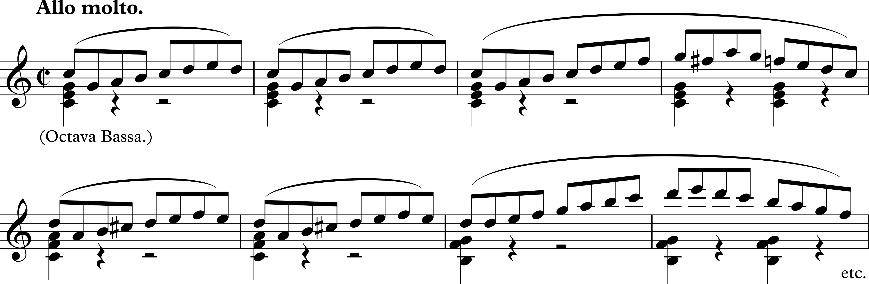
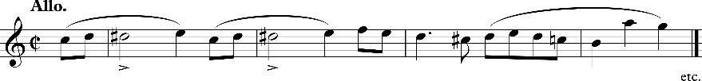
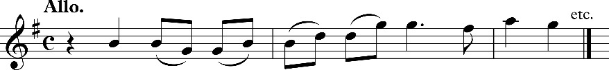

[V]
Vorwort.
V1.1Daß die bisherige „Aesthetik der Tonkunst“ einer durchgängigen Revision bedarf, wird kaum von Kundigen geläugnet werden.
V1.2Die Grundsätze hinzustellen, die eine solche Revision in ihrer kritischen und construirenden Thätigkeit festzuhalten hätte, ist die Aufgabe dieser Schrift.
V1.3Völlig fern liegt mir hiebei der unter den musikalisch-ästhetischen Monographien beinahe epidemische Dünkel, es schlummere in diesen wenigen Bogen eine ganze Aesthetik der Tonkunst. Zu einer solchen, – selbst in dem beschränkteren Sinne, in welchem ich sie für möglich halte, – war vor der Hand weder die Absicht, noch die Kraft ausreichend.
V1.4Genug wenn es mir glückte, siegreiche Mauerbrecher gegen die verrottete Gefühlsästhetik auf den Kampfplatz zu tragen und einige Grundsteine für den künftigen Neubau bereit zu legen. Ueber die mir sehr wohl bewußten Lücken meiner Darstellung muß ich mir [VI] mit der Hoffnung hinweghelfen, daß für die hier entwickelten Grundsätze noch ausführlicher Rede zu stehen mir einst vergönnt sein werde.
V1.5Kann dieser Versuch dazu beitragen, Genuß und Erkenntniß des Schönen in der Tonkunst dem allein richtigen (d. i. ästhetischen) Boden näher zu bringen, so soll er damit manche ihm in Aussicht stehende Ungnade für mein Gefühl vollkommen wett gemacht haben.
Dr. Eduard Hanslick.
[1]
I. a) Unwissenschaftlicher Standpunkt der bisherigen musikalischen Aesthetik
I. b) Die Gefühle sind nicht Zweck der Musik
1.1Die Zeit jener ästhetischen Systeme ist vorüber, welche das Schöne nur in Bezug auf die dadurch wachgerufenen „Empfindungen“ betrachtet haben. Der Drang nach objectiver Erkenntniß der Dinge, soweit sie menschlicher Forschung vergönnt ist, mußte eine Methode stürzen, welche von der subjectiven Empfindung ausging, um nach einem Spaziergang über die Peripherie des untersuchten Phänomens wieder zur Empfindung zurückzugelangen. Kein Pfad führt ins Centrum der Dinge, allein jeder muß dahin gerichtet sein. Der Muth und die Fähigkeit, den Dingen selbst an den Leib zu rücken, zu untersuchen, was losgelöst von den tausendfältig wechselnden Eindrücken, die sie auf den Menschen üben, ihr Bleibendes, Objectives, wandellos Giltiges sei, – sie charakterisiren die moderne Wissenschaft in ihren verschiedensten Zweigen.
1.2Diese objective Richtung konnte nicht ermangeln, sich auch der Erforschung des Schönen alsbald mitzutheilen. Die philosophische Behandlung der Aesthetik, welche auf metaphysischem Wege sich dem Wesen des Schönen zu nähern versucht und dessen letzte Elemente aufzeigt, ist ein Erwerb neuerer Zeit.
1.3Sollte sich nun immerhin auch in Behandlung ästhetischer Fragen ein Umschwung in der Wissenschaft vorbereiten, welcher an der Stelle des metaphysischen Princips eine der inductiven naturwissenschaftlichen Methode verwandte Anschauung zu mächtigem Einfluß und wenigstens zeitlicher Oberhand verhälfe, – vor der Hand stehen die jüngsten Spitzen unsrer Wissenschaft noch unverdunkelt da und [2] behaupten für alle Zeit das unvergängliche Verdienst, die Herrschaft der unwissenschaftlichen Empfindungs-Aesthetik vernichtet, und das Schöne in seinen ureigenen, reinen Elementen durchforscht zu haben.
1.4Lagen einmal die Elemente des Schönen in ihrer Allgemeinheit vor, so war es an den Fachkundigen, die specifische Art zu erforschen, in welcher sich dieselben an den einzelnen Künsten verwirklichen und bestimmen.
1.5Die ästhetischen Principe der Malerei, Architektur, Musik mußten gewonnen und Special-Aesthetiken entwickelt werden. Letztere sind freilich in ganz andrer Weise zu begründen, als durch ein bloßes Anpassen des allgemeinen Schönheitsbegriffs, weil dieser in jeder Kunst eine Reihe neuer Unterschiede eingeht. Es muß jede Kunst in ihren technischen Bestimmungen gekannt, will aus sich selbst begriffen und beurtheilt sein. Die Special-Aesthetiken sowie ihre praktischen Ausläufer, die Kunstkritiken, müssen, bei aller Verschiedenheit ihrer Standpunkte, sich trotzdem in der Einen unverlierbaren Ueberzeugung vereinigen, daß in ästhetischen Untersuchungen vorerst das schöne Object, und nicht das empfindende Subject zu erforschen sei. Sie müssen mit der älteren Anschauungsweise brechen, welche die Untersuchung lediglich mit Rücksicht – beinahe aus Rücksicht – für die dadurch hervorgerufenen Gefühle vornahm, und die Philosophie des Schönen als eine Tochter der Empfindung (αίσδησιϛ) aus der Taufe hob.
1.6 & 1.7Die objective Anschauung ist heutzutage nicht mehr ein blos wissenschaftlicher Erwerb, sondern ziemlich allgemein ins künstlerische Bewußtsein gedrungen. Der moderne Poet oder Maler überredet sich kaum, Rechenschaft von dem Schönen seiner Kunst gelegt zu haben, wenn er untersuchte, welche „Gefühle“ dieses Landschaftsbild, jenes Lustspiel im Publikum heraufbeschwöre. Er sucht vielmehr in der eigenthümlichen Beschaffenheit des Kunstwerks selbst jene Elemente zu finden, welche es zu einem Schönen und gerade zu dieser bestimmten Art des Schönen stempeln. Die bloße Thatsache erweckten Wohlgefallens kann ihm nicht genügen: er wird der zwingenden Macht nachspüren, warum das Werk gefällt.
1.8Die Tonkunst allein hat diesen wissenschaftlichen Standpunkt noch nicht zu erringen gewußt, und ist in ihrer Aesthetik hinter den [3] übrigen Künsten entschieden zurückgeblieben. Die „Empfindungen“ treiben da den alten Spuk bei hellichtem Tage fort. In Leben und Literatur der Tonkunst wird das musikalisch Schöne durchweg von Seite seines subjectiven Eindrucks behandelt, und Bücher, Kritiken, Gespräche können täglich darthun, daß man übereinstimmend die Gefühle für die Basis erkennt, welche das Ideal dieser Kunst trage, die Strahlen ihrer Wirkung concentrire und die Grenzen des Urtheils über Musik durch die ihrigen bezeichne.
1.9Die Musik – so wird uns gelehrt – kann nicht durch Begriffe den Verstand unterhalten, wie die Dichtkunst, ebensowenig durch sichtbare Formen das Auge, wie die bildenden Künste, also muß sie den Beruf haben, auf die Gefühle des Menschen zu wirken. „Die Musik hat es mit den Gefühlen zu thun.“ Dieses „zu Thun haben“ ist einer der charakteristischen Ausdrücke der bisherigen musikalischen Aesthetik. Worin der Zusammenhang der Musik mit den Gefühlen, bestimmter Musikstücke mit bestimmten Gefühlen bestehe, nach welchen Naturgesetzen er wirke, nach welchen Kunstgesetzen er zu gestalten sei, darüber ließen uns diejenigen vollkommen im Dunkeln, die eben damit „zu thun hatten.“ Gewöhnt man sein Auge ein wenig an dieses Dunkel, so gelangt man dahin, zu entdecken, daß in der herrschenden musikalischen Anschauung die Gefühle eine doppelte Rolle spielen.
1.10Fürs Erste wird als Zweck und Bestimmung der Musik aufgestellt, sie solle Gefühle oder „schöne Gefühle“ erwecken. Fürs Zweite bezeichnet man die Gefühle als den Inhalt, welchen die Tonkunst in ihren Werken darstellt.
1.11Beide Sätze haben das Aehnliche, daß der eine genau so falsch ist, wie der andere.
1.12Der erstere darf uns nicht lange beschäftigen, da die neuere Philosophie den Irrthum längst widerlegt hat, als liege der Zweck eines Schönen überhaupt in einer gewissen Tendenz auf das Fühlen der Menschen. Das Schöne hat seine Bedeutung in sich selbst, es ist zwar schön nur für das Wohlgefallen eines anschauenden Subjects, aber nicht durch dasselbe. Wie die Schlange in Goetheʼs Märchen vollendet es seinen Kreis in sich allein, unbekümmert um die magische Kraft, mit der es sogar das Todte wiederbelebt. Das [4] Schöne hat nichts Anderes zu thun als schön zu sein, mag es gleich immerhin leiden, daß wir außer dem Anschauen – der eigentlich ästhetischen Thätigkeit – auch im Fühlen und Empfinden ein Uebriges thun.
1.14„Gefühl“ und „Empfindung“, diese beiden unaufhörlich verwechselten Begriffe, müssen wir, ehe unsre Untersuchung beginnen kann, streng unterscheiden.
1.15 Empfindung ist das Wahrnehmen einer bestimmten Sinnesqualität: eines Tons, einer Farbe. Gefühl das Bewußtwerden einer Förderung oder Hemmung unsres Seelenzustandes, also eines Wohlseins oder Mißbehagens. Wenn ich den Geruch oder Geschmack eines Dinges, dessen Form, Farbe oder Ton mit meinen Sinnen einfach wahrnehme (percipire), so empfinde ich diese Qualitäten; wenn Wehmuth, Hoffnung, Frohsinn oder Haß mich merkbar über den gewöhnlichen Seelenzustand emporheben oder unter denselben herabdrücken, so fühle ich. (In dieser Begriffsbezeichnung stimmen die älteren Philosophen mit den neueren Physiologen überein, und wir mußten sie unbedingt den Benennungen der Hegel ʼschen Schule vorziehen, welche bekanntlich innere und äußere Empfindungen unterscheidet.)
1.16Das Schöne trifft zuerst unsere Sinne. Dieser Weg ist ihm nicht eigenthümlich, es theilt ihn mit allem überhaupt Erscheinenden. Die Empfindung ist Anfang und Bedingung des ästhetischen Gefallens und bildet erst die Basis des Gefühls, welches stets ein Verhältniß und oft die complicirtesten Verhältnisse voraussetzt. Empfindungen zu erregen bedarf es nicht der Kunst, ein einzelner Ton, eine einzelne Farbe kann das. Wie gesagt werden beide Ausdrücke willkürlich vertauscht, meistens aber in älteren Werken „Empfindung“ genannt, was wir als „Gefühl“ bezeichnen. Unsre Gefühle also, meinen jene Schriftsteller, solle die Musik erregen und uns abwechselnd mit Andacht, Liebe, Jubel, Wehmuth erfüllen.
1.17Solche Bestimmung hat aber in Wahrheit weder diese noch eine andere Kunst. Das Organ, womit das Schöne aufgenommen wird, ist nicht das Gefühl, sondern die Phantasie, als die Thätigkeit des reinen Schauens. (Vischerʼs Aesth. §. 384.)
1.18Nahezu merkwürdig ist es, wie die Musiker und älteren Aesthe[5]tiker sich nur in dem Contrast von „Gefühl“ und „Verstand“ bewegen, als läge nicht die Hauptsache gerade inmitten dieses angeblichen Dilemmas. Aus der Phantasie des Künstlers entsteigt das Tonstück für die Phantasie des Hörers. Freilich ist die Phantasie gegenüber dem Schönen nicht blos ein Schauen, sondern ein Schauen mit Verstand, d. i. Vorstellen und Urtheilen, letzteres natürlich mit solcher Schnelligkeit, daß die einzelnen Vorgänge uns gar nicht zum Bewußtsein kommen, und die Täuschung entsteht, es geschehe unmittelbar, was doch in Wahrheit von vielfach vermittelnden Geistesprocessen abhängt. Das Wort „Anschauung,“ längst von den Gesichtsvorstellungen auf alle Sinneserscheinungen übertragen, entspricht überdies trefflich dem Acte des aufmerksamen Hörens, welches ja in einem successiven Betrachten der Tonformen besteht. Die Phantasie ist natürlich kein abgeschlossenes Gebiet: so wie sie ihren Lebensfunken aus den Sinnesempfindungen zog, sendet sie wiederum ihre Radien schnell an die Thätigkeit des Verstandes und des Gefühls aus. Dies sind für die echte Auffassung des Schönen jedoch nur Grenzgebiete.
1.19In reiner Anschauung genießt der Hörer das erklingende Tonstück, jedes stoffliche Interesse muß ihm fern liegen. Ein solches ist aber die Tendenz, Affecte in sich erregen zu lassen. Ausschließliche Bethätigung des Verstandes durch das Schöne verhält sich logisch anstatt ästhetisch, eine vorherrschende Wirkung auf das Gefühl ist noch bedenklicher, nämlich geradezu pathologisch.
1.20Alles das, von der allgemeinen Aesthetik längst entwickelt, gilt gleichmäßig für das Schöne aller Künste. Behandelt man also die Musik als Kunst, so muß man die Phantasie und nicht das Gefühl für die ästhetische Instanz derselben erkennen. Der bescheidene Vordersatz scheint aber darum sehr räthlich, weil bei dem wichtigen Nachdruck, welcher unermüdlich auf die durch Musik zu erzielende Sänftigung der menschlichen Leidenschaften gelegt wird, man in der That oft nicht weiß, ob von der Tonkunst als von einer polizeilichen, einer pädagogischen oder einer medicinischen Maßregel die Rede ist.
1.21Die Musiker sind aber weniger in dem Irrthume befangen, alle Künste gleichmäßig den Gefühlen vindiciren zu wollen, als sie darin vielmehr etwas specifisch der Tonkunst Eigenthümliches sehen. Die [6] Kraft und Tendenz, auf die Gefühle des Hörers zu wirken, sei es eben, was die Musik vor den übrigen Künsten charakterisire. Wo „Gefühl“ nicht einmal von „Empfindung“ getrennt wurde, da kann von einem tieferen Eingehen in die Unterschiede des Ersteren umsoweniger die Rede sein: sinnliche und intellectuelle Gefühle, die chronische Form der Stimmung, die acute des Affectes, Neigung und Leidenschaft sowie die eigenthümlichen Färbungen dieser als „pathos“ der Griechen und „passio“ der neueren Lateiner, wurden in bunter Mischung nivellirt, und von der Musik lediglich ausgesagt, sie sei speciell die Kunst, Gefühle zu erregen.
1.22Allein ebensowenig wie wir diese Wirkung als die Aufgabe der Künste überhaupt anerkannten, können wir in ihr eine specifische Bestimmtheit der Musik erblicken. Einmal festgehalten, daß die Phantasie das eigentliche Organ des Schönen ist, wird eine secundäre Wirkung dieser auf das Gefühl in jeder Kunst vorkommen. Bewegt uns nicht mächtig ein bedeutendes Historiengemälde? Welche Andacht erwecken Raphaelʼs Madonnen, welchʼ sehnsüchtige und frohe Stimmungen die Landschaften eines Poussin? Wird der Anblick des Straßburger Münsters oder der griechischen Marmorgestalten ohne Wirkung auf unser Fühlen bleiben? Dasselbe gilt von der Poesie, ja von mancher außerästhetischen Thätigkeit, z. B. religiöser Erbauung, Eloquenz u. a. Wir sehen, daß die übrigen Künste ebenfalls stark genug auf das Gefühl einwirken. Den angeblich principiellen Unterschied derselben von der Musik müßte man daher auf ein Mehr oder Weniger dieser Wirkung basiren. Ganz unwissenschaftlich an sich, hätte dieser Ausweg obendrein die Entscheidung: ob man stärker und tiefer fühle bei einer Mozartʼschen Symphonie oder bei einem Trauerspiel Shakespeareʼs, bei einem Gedicht von Uhland oder einem Hummelʼschen Rondo, füglich Jedermann selbst zu überlassen. Meint man aber, die Musik wirke „unmittelbar“ auf das Gefühl, die andern Künste erst durch die Vermittlung von Begriffen, so fehlt man nur mit andern Worten, weil, wie wir gesehen, die Gefühle auch von dem Musikalisch-Schönen nur in zweiter Linie beschäftigt werden sollen, unmittelbar nur die Phantasie. Unzählige Mal wird in musikalischen Abhandlungen die Analogie herbeigerufen, die zweifellos zwischen der Musik und der Baukunst be[7]steht. Ist aber je einem vernünftigen Architekten beigefallen, die Baukunst habe den Zweck, Gefühle zu erregen, oder es seien diese der Inhalt derselben?
1.23 Jedes wahre Kunstwerk wird sich in irgend eine Beziehung zu unserm Fühlen setzen, keines in eine ausschließliche. Man sagt also gar nichts für das ästhetische Princip der Musik Entscheidendes, wenn man sie durch ihre Wirkung auf das Gefühl charakterisirt.
1.24Dennoch will man dem Wesen der Musik immer von diesem Punkte aus beikommen. Dennoch wird stets die Besprechung eines Tonwerks mit der „Empfindung“ angehoben, die es hervorruft, und Lob oder Tadel nach dem Maß der eigenen subjectiven Affection bestimmt. Als wenn man das Wesen des Weines ergründete, indem man sich betrinkt! Die Erkenntniß eines Gegenstandes und dessen unmittelbare Wirkung auf unsre Subjectivität sind himmelweit verschiedene Dinge, ja man muß der letzteren in eben dem Maße sich zu entwinden wissen, als man der ersteren nahe kommen will. Das Verhalten unsrer Gefühlszustände zu irgend einem Schönen ist vielmehr Gegenstand der Psychologie als der Aesthetik. Sei die Wirkung der Musik so groß oder so klein als sie wolle – von ihr darf man nicht ausgehen, wenn man das Wesen dieser Kunst zu erforschen unternimmt. Hegel hat erschöpfend gezeigt, wie die Untersuchung der „Empfindungen,“ welche eine Kunst erweckt, ganz im Unbestimmten stehen bleibt und gerade vom eigentlichen, concreten Inhalt absieht. „Was empfunden wird,“ sagt er, „bleibt eingehüllt in der Form abstractester, einzelner Subjectivität und deshalb sind auch die Unterschiede der Empfindung ganz abstracte, keine Unterschiede der Sache selbst.“ (Aesthetik I, 42.)
1.25Eignet der Tonkunst wirklich eine specifische Kraft des Eindruckes (wie wir sie bald näher betrachten werden), so muß man von diesem Zauber um so vorsichtiger abstrahiren, um an das Wesen seiner Ursache zu gelangen. Unterdessen vermengt man unablässig Gefühlsaffection und musikalische Schönheit, anstatt sie in wissenschaftlicher Methode getrennt darzustellen. Man klebt an der unsichern Wirkung musikalischer Erscheinungen anstatt in das Innere der Werke zu dringen und aus den Gesetzen ihres eigenen Organismus zu erklären, was ihr Inhalt ist, worin ihr Schönes besteht. Man be[8]ginnt vom subjectiven Eindruck und folgert auf das Wesen der Kunst. Das sind Rückschlüsse vom Unselbstständigen auf das Selbstständige, vom Bedingten auf das Bedingende.
1.26Ueberdies ist der Zusammenhang eines Tonstücks mit der dadurch hervorgerufenen Gefühlsbewegung kein nothwendig causaler. Unter verschiedenen Nationalitäten, Temperamenten, Altersstufen und Verhältnissen, ja selbst unter Gleichheit aller dieser Bedingungen bei verschiedenen Individuen, wird dieselbe Musik sehr ungleich wirken. Wir brauchen gar nicht die Indianer und Karaiben zu incommodiren, die gewöhnlich beliebten Hilfstruppen, wenn es sich um die „Verschiedenheit des Geschmacks“ handelt, – es genügt Ein europäisches Concertpublikum, dessen eine Hälfte in Beethovenʼs Symphonien seine stärksten, höchsten Regungen geweckt fühlt, während die andere darin nur „schwerfällige Verstandesmusik“ und „gar kein Gefühl“ findet. In manchem Augenblick regt uns ein Musikstück zu Thränen auf, ein andermal läßt es kalt, und tausend äußere Verschiedenheiten können hinreichen, dessen Wirkung tausendfach zu verändern oder zu annulliren. Der Zusammenhang musikalischer Werke mit gewissen Stimmungen besteht nicht immer, überall, nothwendig, als ein absolut Zwingendes.
1.27Selbst dort, wo wir den wirklich vorhandenen Eindruck betrachten, entdecken wir in ihm oft statt des Nothwendigen Conventionelles. Nicht blos in Form und Sitte, auch am Denken und Fühlen bildet sich im Lauf der Zeiten vieles Uebereinstimmende, Ueberkommene, das uns im Wesen der Dinge selbst zu stecken scheint, welche dennoch kaum mehr davon wissen, als die Buchstabenzeichen von der Bedeutung, die sie eben nur für uns haben. Dies ist besonders bei Musikgattungen der Fall, welche bestimmten äußeren Zwecken dienen, als Kirchen-, Kriegs-, Theatercompositionen. In den letzteren findet man eine wahre Terminologie für die verschiedensten Gefühle, eine Terminologie, die den Componisten und Hörern eines Zeitalters so geläufig wird, daß sie im einzelnen Falle nicht den mindesten Zweifel darüber haben. Spätere Zeiten bekommen ihn aber. Ja, wir begreifen oft kaum, wie unsre Großeltern diese Tonreihe für einen adäquaten Ausdruck gerade dieses Affectes ansehen konnten.
[9]
1.28Jede Zeit und Gesittung bringt ein verschiedenes Hören, ein verschiedenes Fühlen mit sich. Die Musik bleibt dieselbe, allein es wechselt ihre Wirkung mit dem wechselnden Standpunkt conventioneller Befangenheit. Wie leicht und gern sich unser Fühlen überdies von den kleinlichsten Kunstgriffen überlisten läßt, davon erzählen unter Anderm die Instrumentalstücke mit besondern Mottos oder Ueberschriften. In den äußerlichsten Claviersächelchen, worin nichts steckt, „eitel Nichts, wohin mein Augʼ sich wendet,“ ist man alsbald geneigt, „Sehnsucht nach dem Meere,“ „Abend vor der Schlacht,“ „Sommertag in Norwegen“ und was des Unsinns mehr ist, zu erkennen, wenn nur das Titelblatt die Kühnheit besitzt, seinen Inhalt dafür auszugeben. Die Ueberschriften geben unserm Vorstellen und Fühlen eine Richtung, welche wir nur zu oft dem Charakter der Musik zuschreiben, eine Leichtgläubigkeit, gegen welche der Scherz einer Titelverwechselung nicht genug empfohlen werden kann.
1.29So besitzt denn die Wirkung der Musik auf das Gefühl weder die Nothwendigkeit, noch die Stetigkeit, noch endlich die Ausschließlichkeit, welche eine Erscheinung aufweisen müßte, um ein ästhetisches Princip begründen zu können.
1.30Die starken Gefühle selbst, welche Musik aus ihrem Schlummer wachsingt, und allʼ die süßen, wie schmerzlichen Stimmungen, in die sie uns Halbträumende einlullt, wir möchten sie nicht um Alles unterschätzen. Zu den schönsten, heilsamsten Mysterien gehört es ja, daß die Kunst solche Bewegungen ohne irdischen Anlaß, recht von Gottes Gnaden hervorzurufen vermag. Nur gegen die unwissenschaftliche Verwerthung dieser Thatsachen für ästhetische Principien legen wir Verwahrung ein. Lust und Trauer können durch Musik in hohem Grade erweckt werden; das ist richtig. Nicht in noch höherem vielleicht durch den Gewinnst des großen Treffers oder die Todeskrankheit eines Freundes? So lange man Anstand nimmt, deshalb ein Lotterieloos den Symphonien, oder ein ärztliches Bülletin den Ouvertüren beizuzählen, so lange darf man auch factisch erzeugte Affecte nicht als eine ästhetische Specialität der Tonkunst oder eines bestimmten Tonstücks behandeln. Es wird einzig auf die specifische Art ankommen, wie solche Affecte durch Musik hervorgerufen werden. Wir werden im IV. und V. Kapitel den Ein[10]wirkungen der Musik auf das Gefühl die aufmerksamste Betrachtung widmen, und die positiven Seiten dieses merkwürdigen Verhältnisses untersuchen. Hier, am Eingang unsrer Schrift, konnte die negative Seite, als Protest gegen ein unwissenschaftliches Princip, nicht zu scharf hervorgekehrt werden.
1.31 Anmerkung. Es dünkt uns für den vorliegenden Zweck kaum nothwendig, den Ansichten, deren Bekämpfung uns beschäftigt, die Namen ihrer Autoren beizusetzen, da diese Ansichten keineswegs die Blüthe eigenthümlicher Ueberzeugungen, sondern vielmehr der Ausdruck einer allgemein gewordenen traditionellen Denkweise sind. Nur um einen Einblick in die ausgebreitete Herrschaft dieser Grundsätze zu gewähren, mögen einige Citate älterer und neuerer Musikschriftsteller hier Platz finden:
- Mattheson: „Wir müssen bei jeder Melodie uns eine Gemüthsbewegung (wo nicht mehr als Eine) zum Hauptzweck setzen.“ (Vollkomm. Capellmeister S. 143.)
- Neidhardt: „Der Musik Endzweck ist, alle Affecte durch die bloßen Töne und deren Rhytmum, trotz dem besten Redner, rege zu machen.“ (Vorrede zur „Temperatur.“)
- J. N. Forkel versteht unter den „Figuren in der Musik“ „dasselbe, was sie in der Dichtkunst und Redekunst sind, nämlich der Ausdruck der unterschiedenen Arten, nach welchen sich Empfindungen und Leidenschaften äußern.“ („Ueber die Theorie der Musik,“ Göttingen 1777. S. 26.)
- I. Mosel definirt die Musik als „die Kunst, bestimmte Empfindungen durch geregelte Töne auszudrücken.“
- C. F. Michaelis: „Musik ist die Kunst des Ausdrucks von Empfindungen durch Modulation der Töne. Sie ist die Sprache der Affecte“ etc. („Ueber den Geist der Tonkunst,“ 2. Versuch. 1800. S. 29.)
- Marpurg: „Der Zweck, den der Componist sich in seiner Arbeit vorsetzen soll, ist die Natur nachzuahmen …. die Leidenschaften nach seinem Willen zu regen …. die Bewegungen der Seele, die Neigungen des Herzens nach dem Leben zu schildern.“ (Krit. Musikus, 1. Band 1750. 40. Stück.)
- W. Heinse: „Der Hauptendzweck der Musik ist die Nachahmung oder vielmehr Erregung der Leidenschaften.“ (Musik. Dialoge. 1805. S. 30.)
- J. J. Engel: „Eine Sinfonie, eine Sonate u. s. w. muß die Ausführung einer Leidenschaft, die aber in mannigfaltige Empfindungen ausbeugt, enthalten.“ („Ueber mus. Malerei.“ 1780. S. 29.)
[11]
- J. Ph. Kirnberger: „Ein melodischer Satz (Thema) ist ein verständlicher Satz aus der Sprache der Empfindung, der einen empfindsamen Zuhörer die Gemüthslage, die ihn hervorgebracht hat, fühlen läßt.“ (Kunst des reinen Satzes. II. Theil S. 152.)
- Pierer’s Universallexikon (2. Auflage): „Musik ist die Kunst, durch schöne Töne Empfindungen und Seelenzustände auszudrücken. Sie steht höher als die Dichtkunst, welche nur (!) mit dem Verstande erkennbare Stimmungen darzustellen vermag, da die Musik ganz unerklärliche Empfindungen und Ahnungen ausdrückt.“
- G. Schilling’s Universallexikon der Tonkunst bringt unter dem Artikel „Musik“ die gleiche Erklärung.
- Koch definiert die Musik als die „Kunst, ein angenehmes Spiel der Empfindungen durch Töne auszudrücken.“ (Mus. Lexikon. „Musik.“)
- A. André: „Musik ist die Kunst, Töne hervorzubringen, welche Empfindungen und Leidenschaften schildern, erregen und unterhalten.“ (Lehrbuch der Tonkunst I.)
- Sulzer: „Musik ist die Kunst, durch Töne unsre Leidenschaften auszudrücken, wie in der Sprache durch Worte.“ (Theorie der schönen Künste.)
- J. W. Böhm: „Nicht den Verstand, nicht die Vernunft, sondern nur das Gefühlsvermögen beschäftigen der Saiten harmonische Töne.“ (Analyse des Schönen der Musik. Wien 1830. S. 62.)
- Gottfried Weber: „Die Tonkunst ist die Kunst, durch Töne Empfindungen auszudrücken.“ (Theorie der Tonsetzkunst, 2. Aufl. 1. Bd. S. 15.)
- F. Hand: „Die Musik stellt Gefühle dar. Jedes Gefühl und jeder Gemüthszustand hat an sich und so auch in der Musik seinen besondern Ton und Rhytmus.“ „Man kann der Musik eine weit größere Bestimmtheit (!) der Darstellung zuschreiben, als irgend eine Kunst besitzt; denn Gefühle vermag weder der malende Künstler so bestimmt zu zeichnen, …. noch glückt es dem mimischen Darsteller.“ etc. (Aesthetik der Tonkunst, I. Band §§. 24. 27.)
- Amadeus Autodidaktus: „Die Tonkunst entquillt und wurzelt nur in der Welt der geistigen Gefühle und Empfindungen. Musikalisch melodische Töne (!) erklingen nicht dem Verstande, welcher Empfindungen ja nur beschreibt und zergliedert, … sie sprechen zu dem Gemüth“ etc. (Aphorismen über Musik. Leipzig 1847. S. 329.)
- Fermo Bellini: „Musica è l’arte, che esprime i sentimenti e le passione col mezzo di suoni.“ (Manuale alla Musica. Milano, Riccardi 1853.)
[12]
- Friedrich Thiersch, Allgemeine Aesthetik (Berlin 1846) §. 18 S. 101: „Die Musik ist die Kunst, durch Wahl und Verbindung der Töne Gefühle und Stimmungen des Gemüthes auszudrücken oder zu erregen.“
II. Die Gefühle sind nicht Inhalt der Musik
2.1Theils als Consequenz dieser Theorie, welche die Gefühle für das Endziel musikalischer Wirkung erklärt, theils als Correctiv derselben wird der Satz aufgestellt: die Gefühle seien der Inhalt, welchen die Tonkunst darzustellen habe.
2.2Die philosophische Untersuchung einer Kunst drängt zu der Frage nach dem Inhalt derselben. Jeder Kunst eignet ein Kreis von Ideen, welche sie mit ihren Ausdrucksmitteln, als Ton, Wort, Farbe, Stein darstellt. Das einzelne Kunstwerk verkörpert demnach eine bestimmte Idee als Schönes in sinnlicher Erscheinung. Diese bestimmte Idee, die sie verkörpernde Form, und die Einheit beider sind Bedingungen des Schönheitsbegriffs, von welchen keine wissenschaftliche Ergründung irgend einer Kunst sich mehr trennen kann.
2.3 Was Inhalt eines Werks der dichtenden oder bildenden Kunst sei, läßt sich mit Worten ausdrücken und auf Begriffe zurückführen. Wir sagen: dies Bild stellt ein Blumenmädchen vor, diese Statue einen Gladiator, jenes Gedicht eine That Rolandʼs. Das mehr oder minder vollkommene Aufgehen des so bestimmten Inhalts in der künstlerischen Erscheinung begründet dann unser Urtheil über die Schönheit des Kunstwerks.
2.4Als Inhalt der Musik hat man ziemlich einverständlich die ganze Stufenleiter menschlicher Gefühle genannt, weil man in diesen den Gegensatz zu begreiflicher Bestimmtheit und daher die richtige Unterscheidung von dem Ideal der bildenden und dichtenden Kunst gefunden glaubte. Demnach seien die Töne und ihr kunstreicher Zusammenhang blos Material, Ausdrucksmittel, wodurch der Componist die Liebe, den Muth, die Andacht, das Entzücken darstellt. Diese Gefühle in ihrer reichen Mannigfaltigkeit seien die Idee, welche den irdischen Leib des Klanges angethan, um als musikalisches [13] Kunstwerk auf Erden zu wandeln. Was uns an einer reizenden Melodie, einer sinnigen Harmonie ergötzt und erhebt, sei nicht diese selbst, sondern was sie bedeutet: das Flüstern der Zärtlichkeit, das Stürmen der Kampflust.
2.5Um auf festen Boden zu gelangen, müssen wir vorerst solche altverbundene Metaphern schonungslos trennen: Das Flüstern? Ja; – aber keineswegs der „Sehnsucht;“ das Stürmen? Allerdings, doch nicht der „Kampflust“. In der That besitzt die Musik das Eine ohne das Andre; sie kann flüstern, stürmen, rauschen, – das Lieben und Zürnen aber trägt nur unser eigenes Herz in sie hinein.
2.6Die Darstellung eines Gefühles oder Affectes liegt gar nicht in dem eigenen Vermögen der Tonkunst.
2.7Es stehen nämlich die Gefühle in der Seele nicht isolirt da, so daß sie sich aus ihr gleichsam herausheben ließen von einer Kunst, welcher die Darstellung der übrigen Geistesthätigkeiten verschlossen ist. Sie sind im Gegentheil abhängig von physiologischen und pathologischen Voraussetzungen, sind bedingt durch Vorstellungen, Urtheile, kurz durch eben das ganze Gebiet verständigen und vernünftigen Denkens, welchem man das Gefühl so gern als ein Gegensätzliches gegenüberstellt.
2.8Was macht denn ein Gefühl zu diesem bestimmten Gefühl? Zur Sehnsucht, Hoffnung, Liebe? Etwa die bloße Stärke oder Schwäche, das Wogen der innern Bewegung? Gewiß nicht. Diese kann bei verschiedenen Gefühlen gleich sein und auch wieder bei demselben Gefühl, in mehreren Individuen, zu andern Zeiten verschieden. Nur auf Grundlage einer Anzahl – im Momente starken Fühlens vielleicht unbewußter – Vorstellungen und Urtheile kann unser Seelenzustand sich zu eben diesem bestimmten Gefühl verdichten. Das Gefühl der Hoffnung ist untrennbar von der Vorstellung eines glücklicheren Zustandes, welcher kommen soll und mit dem gegenwärtigen verglichen wird. Die Wehmuth vergleicht ein vergangenes Glück mit der Gegenwart. Das sind ganz bestimmte Vorstellungen, Begriffe, Urtheile. Ohne sie, ohne diesen Gedankenapparat kann man das gegenwärtige Fühlen nicht „Hoffnung,“ nicht „Wehmuth“ nennen, er macht sie dazu. Abstrahirt man von ihm, so bleibt eine unbe[14]stimmte Bewegung, allenfalls die Empfindung allgemeinen Wohlbefindens, oder Mißbehagens. Die Liebe kann ohne die Vorstellung einer geliebten, individuellen Persönlichkeit, ohne den Wunsch und das Streben nach der Beglückung, Verherrlichung, dem Besitz dieses Gegenstandes nicht gedacht werden. Nicht die Art der bloßen Seelenbewegung, sondern ihr begrifflicher Kern, ihr wirklicher, historischer Inhalt macht sie zur Liebe. Ihrer Dynamik nach kann diese ebensogut sanft als stürmisch, ebensowohl froh als schmerzlich auftreten und bleibt doch immer Liebe. Diese Betrachtung allein reicht hin, zu zeigen, daß Musik nur jene verschiedenen begleitenden Adjectiva ausdrücken könne, nie das Substantivum, die Liebe selbst. Ein bestimmtes Gefühl (noch mehr eine Leidenschaft und ein Affect) existirt als solches niemals ohne einen wirklichen historischen Inhalt, der eben nur in Begriffen dargelegt werden kann. Begriffe kann die Musik als „unbestimmte Sprache“ zugestandener Weise nicht wiedergeben – ist nicht die Folgerung psychologisch unablehnbar, daß sie auch bestimmte Gefühle nicht auszudrücken vermag? Die Bestimmheit der Gefühle ruht ja gerade in deren begrifflichem Kern.
2.9Wie es komme, daß Musik dennoch Gefühle, wie Wehmuth, Frohsinn u. dgl., erregen kann (nicht muß), das wollen wir später, wo vom subjectiven Eindruck der Musik die Rede sein wird, untersuchen. Hier mußte blos theoretisch festgestellt werden, ob die Musik fähig sei, ein bestimmtes Gefühl darzustellen? Die Frage war zu verneinen, da die Bestimmtheit der Gefühle von concreten Vorstellungen und Begriffen nicht getrennt werden kann, welche letztere außer dem Gestaltungsbereich der Musik liegen. – Einen Kreis von Ideen hingegen kann die Musik mit ihren eigensten Mitteln reichlichst darstellen. Dies sind unmittelbar alle diejenigen, welche auf hörbare Veränderungen der Zeit, der Kraft, der Proportionen sich beziehen, also die Idee des Anschwellenden, des Absterbenden, des Eilens, Zögerns, des künstlich Verschlungenen, des einfach Begleitenden u. dgl. – Es kann ferner der ästhetische Ausdruck einer Musik anmuthig genannt werden, sanft, heftig, kraftvoll, zierlich, frisch: lauter Ideen, welche in Tonverbindungen eine entsprechende sinnliche Erscheinung finden können. Wir können diese Eigenschafts[15]wörter daher unmittelbar von musikalischen Bildungen gebrauchen, ohne an die ethische Bedeutung zu denken, welche sie für das menschliche Seelenleben haben, und die eine geläufige Ideenassociation so schnell zur Musik heranbringt, ja mit den rein musikalischen Eigenschaften unter der Hand zu verwechseln pflegt.
2.10Die Ideen, welche der Componist darstellt, sind vor Allem und zuerst rein musikalische. Seiner Phantasie erscheint eine bestimmte schöne Melodie. Sie soll nichts Anderes sein, als sie selbst. Wie aber jede concrete Erscheinung auf ihren höheren Gattungsbegriff, auf die sie zunächst erfüllende Idee hinaufweist, und so fort immer höher und höher bis zur absoluten Idee, so geschieht es auch mit den musikalischen Ideen. So wird z. B. dieses sanfte, harmonisch ausklingende Adagio die Idee des Sanften, Harmonischen überhaupt zur schönen Erscheinung bringen. Die allgemeine Phantasie, welche gern die Ideen der Kunst in Bezug zum eigenen, menschlichen Seelenleben setzt, wird dies Ausklingen noch höher z. B. als den Ausdruck milder Resignation eines in sich versöhnten Gemüthes auffassen, und so fort bis zur Ahnung des Absoluten steigen.
2.11Auch die Poesie und bildende Kunst stellen vorerst ein Concretes dar. Erst mittelbar kann das Bild einer Blumenverkäuferin auf die allgemeinere Idee mädchenhafter Zufriedenheit und Anspruchslosigkeit, ein beschneiter Kirchhof auf die Idee der irdischen Vergänglichkeit hinaufweisen. Gerade so, nur mit ungleich unsicherer und willkürlicher Deutung kann der Hörer in diesem Musikstück die Idee jugendlichen Genügens, in jenem die Idee der Vergänglichkeit heraushören; allein ebensowenig als in den genannten Bildern sind diese abstracten Ideen der Inhalt des musikalischen Werkes; von einer Darstellung des „Gefühls der Vergänglichkeit,“ des „Gefühls der jugendlichen Genügsamkeit“ kann nun vollends keine Rede sein.
2.12Es giebt Ideen, welche durch die Tonkunst vollkommen repräsentirt werden und trotzdem nicht als Gefühl vorkommen, so wie umgekehrt Gefühle von solcher Mischung das Gemüth bewegen können, daß sie in keiner durch Musik darstellbaren Idee ihre adäquate Bezeichnung finden.
2.13 Was kann also die Musik von den Gefühlen darstellen, wo nicht deren Inhalt?
[16]
2.14Nur das Dynamische derselben. Sie vermag die Bewegung eines psychischen Vorganges nach den Momenten: schnell, langsam, stark, schwach, steigernd, fallend nachzubilden. Bewegung ist aber nur eine Eigenschaft, ein Moment des Gefühls, nicht dieses selbst. Gemeiniglich glaubt man, das darstellende Vermögen der Musik genügend zu begrenzen, wenn man behauptet, sie könne keineswegs den Gegenstand eines Gefühles bezeichnen, wohl aber das Gefühl selbst, z. B. nicht das Object einer bestimmten Liebe, wohl aber „Liebe.“ Sie kann dies in Wahrheit ebensowenig. Nicht Liebe, sondern nur eine Bewegung kann sie schildern, welche bei der Liebe, oder auch bei einem andern Affect vorkommen kann, immer jedoch das Unwesentliche seines Charakters ist. „Liebe“ ist ein abstracter Begriff, so gut wie „Tugend“ und „Unsterblichkeit.“ Die Versicherung der Theoretiker, Musik habe keine abstracten Begriffe darzustellen, ist überflüssig; denn keine Kunst kann dies. Daß nur Ideen, d. i. lebendig gewordene Begriffe Inhalt künstlerischer Verkörperung sind, versteht sich von selbst. 1 Aber auch die Ideen, oder die Idee der Liebe, des Zornes, der Furcht können Instrumentalwerke nicht zur Erscheinung bringen, weil zwischen jenen Ideen und schönen Tonverbindungen kein nothwendiger Zusammenhang besteht. Welches Moment dieser Ideen istʼs denn also, dessen die Musik sich in der That so wirksam zu bemächtigen weiß? Es ist die Bewegung (natürlich in dem weiteren Sinne, der auch das Anschwellen und Abschwächen des einzelnen Tones oder Accordes als „Bewegung“ auffaßt). Sie bildet das Element, welches die Tonkunst mit den Gefühlszuständen gemeinschaftlich hat, und das sie schöpferisch in tausend Abstufungen und Gegensätzen zu gestalten vermag.
2.15Was uns außerdem in der Musik bestimmte Seelenzustände zu malen scheint, ist durchaus symbolisch.
2.16Wie die Farben, so besitzen nämlich die Töne schon von Natur aus und in ihrer Vereinzelung symbolische Bedeutung, welche außer[17]halb und vor aller künstlerischen Absicht wirkt. Jede Farbe athmet eigenthümlichen Charakter: sie ist uns keine bloße Ziffer, welche durch den Künstler lediglich eine Stellung erhält, sondern eine Kraft, schon von Natur aus in sympathetischen Zusammenhang mit gewissen Stimmungen gesetzt. Wer kennt nicht die Farbendeutungen, wie sie in ihrer Einfachheit gang und gäbe, oder durch feinere Geister zu poetischem Raffinement gehoben werden? Wir verbinden Grün mit dem Gefühl der Hoffnung, Blau mit der Treue. Rosenkranz erkennt in Rothgelb „anmuthige Würde,“ in Violett „philisterhafte Freundlichkeit“ u. s. w. (Psychologie, 2. Aufl. S. 102.)
2.17In ähnlicher Weise sind uns die elementaren Stoffe der Musik: Tonarten, Accorde und Klangfarben schon an sich Charaktere. Wir haben auch eine nur zu geschäftige Auslegekunst für die Bedeutung musikalischer Elemente; Schubartʼs Symbolik der Tonarten bietet in ihrer Art ein Seitenstück zu Goetheʼs Deutung der Farben. Es folgen jedoch diese Elemente (Töne, Farben) in ihrer künstlerischen Verwendung ganz anderen Gesetzen, als jener Ausdruck ihrer isolirten Erscheinung. So wenig auf einem großen Historienbild jedes Roth uns Freude, jedes Weiß Unschuld bedeutet, ebensowenig wird in einer Sinfonie alles As-dur uns eine schwärmerische, alles H-moll eine menschenfeindliche Stimmung erwecken, oder jeder Dreiklang Befriedigung, jeder verminderte Septaccord Verzweiflung. Auf ästhetischem Boden neutralisiren sich derlei elementare Selbstständigkeiten unter der Gemeinsamkeit höherer Gesetze. Von einem Ausdrücken oder Darstellen ist solche Naturbeziehung weit entfernt. „Symbolisch“ nannten wir sie, indem sie den Inhalt keineswegs unmittelbar darstellt, sondern eine von diesem wesentlich verschiedene Form bleibt. Wenn wir im Gelben Eifersucht, in G-dur Heiterkeit, in der Cypresse Trauer sehen, so hat diese Deutung einen physiologisch-psychologischen Zusammenhang mit Bestimmtheiten dieser Gefühle, allein es hat ihn eben nur unsere Deutung, nicht die Farbe, die Pflanze, der Ton an und für sich. Man kann daher weder von einem Accord an sich sagen, er stelle ein bestimmtes Gefühl dar, noch weniger thut er das im Zusammenhang des Kunstwerkes.
2.18Ein anderes Mittel zu dem angeblichen Zweck, außer der Analogie der Bewegung und der Symbolik der Töne, hat die reine Musik nicht.
[18]
2.19Läßt sich somit ihr Unvermögen, bestimmte Gefühle darzustellen, leicht aus der Natur der Töne deduciren, so scheint es fast unbegreiflich, daß es auf dem Erfahrungswege nicht noch viel schneller ins allgemeine Bewußtsein gedrungen ist. Versuche Jemand, dem noch so viel Gefühlssaiten aus einem Instrumentalstück anklingen, mit klaren Gründen nachzuweisen, welcher Affect den Inhalt desselben bilde? Die Probe ist unerläßlich. – Hören wir z. B. Beethovenʼs Ouvertüre zu „Prometheus.“ Was das aufmerksame Ohr des Kunstfreundes in stetiger Folge aus ihr vernimmt, ist ungefähr Folgendes: Die Töne des 1. Taktes perlen rasch und leise aufwärts, wiederholen sich genau im 2.; der 3. und 4. Takt führen denselben Gang in größerem Umfang weiter, die Tropfen des in die Höhe getriebenen Springbrunnens perlen herab, um in den nächsten vier Takten dieselbe Figur und dasselbe Figurenbild auszuführen. Vor dem geistigen Sinn des Hörers erbaut sich also in der Melodie die Symmetrie zwischen dem 1. und dem 2. Takte, dann dieser beiden Takte zu den zwei folgenden, endlich der vier ersten Takte als Eines großen Bogens gegen den gleich großen correspondirenden der folgenden vier Takte. Der den Rhythmus markirende Baß bezeichnet den Anfang der ersten drei Takte mit je einem Schlag, den vierten mit zwei Schlägen, in gleicher Weise bei den folgenden vier Takten. Hier ist also der vierte Takt gegen die drei ersten eine Verschiedenheit, welche durch die Wiederholung in den nächsten vier Takten symmetrisch wird und das Ohr als ein Zug der Neuheit im alten Gleichgewicht erfreut. Die Harmonie in dem Thema zeigt uns wieder das Correspondiren Eines großen mit zwei kleinen Bogen: dem C dur-Dreiklang in den vier ersten Takten entspricht der Secundaccord im fünften und sechsten, dann der Quintsext-Accord im siebenten und achten Takt. Dies wechselseitige Correspondiren zwischen Melodie, Rhythmus und Harmonie erzeugt ein symmetrisches und doch abwechslungsvolles Bild, welches durch die Klangfarben der verschiedenen Instrumente und den Wechsel der Tonstärke noch reichere Lichter und Schatten erhält.
[19]

2.20Einen weiteren Inhalt als den eben ausgedrückten vermögen wir durchaus nicht in dem Thema zu erkennen, am wenigsten ein Gefühl zu nennen, welches es darstellte oder im Hörer erwecken müßte. Solche Zergliederung macht ein Gerippe aus blühendem Körper, geeignet, alle Schönheit, aber auch alle falsche Deutelei zu zerstören.
2.21Wie mit diesem, ganz zufällig gewählten Motiv geht es mit jedem andern Instrumentalthema. Eine große Klasse von Musikfreunden hält es blos für einen charakteristischen Fehler der „klassischen“ Musik, den Affecten abhold zu sein, und giebt von vornherein zu, daß Niemand in einer der 48 Fugen und Präludien aus J. S. Bachʼs „wohltemperirtem Clavier“ ein Gefühl werde nachweisen können, das den Inhalt derselben bilde. Gut, – der Beweis wäre dadurch schon hergestellt, daß die Musik nicht Gefühle erwecken oder zum Gegenstand haben muß. Das ganze Gebiet der Figuralmusik fiele hinweg. Müssen aber große, historisch wie ästhetisch begründete Kunstgattungen ignorirt werden, um einer Theorie Haltbarkeit zu erschleichen, dann ist diese falsch. Ein Schiff muß untergehen, sobald es auch nur Ein Leck hat.
2.22Wem dies nicht genügt, der mag ihr immerhin den ganzen Boden ausschlagen. Er spiele das Thema irgend einer Mozartʼschen oder Haydnʼschen Sinfonie, eines Beethovenʼschen Adagioʼs, eines Mendelssohnʼschen Scherzoʼs, eines Schumannʼschen oder Chopinʼschen Clavierstückes, den Stamm unserer gehaltvollsten Musik; oder auch die populärsten Ouvertürenmotive von Auber, Donizetti, Flotow. Wer tritt hinzu und getraut sich, ein bestimmtes Gefühl als Inhalt dieser Themen aufzuzeigen? Der Eine wird „Liebe“ sagen. Mög[20]lich. Der Andere meint „Sehnsucht“. Vielleicht. Der Dritte fühlt „Andacht“. Niemand kann das widerlegen. Und so fort. Heißt dies nur ein bestimmtes Gefühl darstellen, wenn Niemand weiß, was eigentlich dargestellt wird? Ueber die Schönheit und Schönheiten des Musikstücks werden wahrscheinlich Alle übereinstimmend denken, von dem Inhalt Jeder verschieden. Darstellen heißt aber einen Inhalt klar, anschaulich produciren, ihn uns vor Augen „daher stellen.“ Derlei Grundbegriffe können nicht streng genug genommen werden. Wie mag man nun dasjenige als das von einer Kunst Dargestellte bezeichnen, welches, das ungewisseste, vieldeutigste Element derselben, einem ewigen Streit unterworfen ist?
2.23Wir haben absichtlich Instrumentalsätze zu Beispielen gewählt. Denn nur was von der Instrumentalmusik behauptet werden kann, gilt von der Tonkunst als solcher. Wenn irgend eine allgemeine Bestimmtheit der Musik untersucht wird, etwas so ihr Wesen und ihre Natur kennzeichnen, ihre Gränzen und Richtung feststellen soll, so kann nur von der Instrumentalmusik die Rede sein. Was die Instrumentalmusik nicht kann, von dem darf nie gesagt werden, die Musik könne es; denn nur sie ist reine, absolute Tonkunst. Ob man nun die Vocal- oder die Instrumentalmusik an Werth und Wirkung vorziehen wolle, – eine unwissenschaftliche Procedur, bei der meist flache Willkür das Wort führt – man wird stets einräumen müssen, daß der Begriff „Tonkunst“ in einem auf Textworte componirten Musikstück nicht rein aufgehe. In einer Vocalcomposition kann die Wirksamkeit der Töne nie so genau von jener der Worte, der Handlung, der Decoration getrennt werden, daß die Rechnung der verschiedenen Künste sich streng sondern ließe. Sogar Tonstücke mit bestimmten Ueberschriften oder Programmen müssen wir ablehnen, wo es sich um den „Inhalt“ der Musik handelt. Die Vereinigung mit der Dichtkunst erweitert die Macht der Musik, aber nicht ihre Gränzen.
2.24Wir haben in der Vocalcomposition ein untrennbar verschmolzenes Product vor uns, aus dem es nicht mehr möglich ist, die Größe der einzelnen Factoren zu bestimmen. Wenn es sich um die Wirkung der Dichtkunst handelt, so wird es Niemand einfallen, die Oper als Beleg hervorzuheben; es braucht größerer Verleugnung [21] aber nur derselben Einsicht, um bei den Grundbestimmungen musikalischer Aesthetik ein Gleiches zu thun.
2.25Die Vocalmusik illuminirt die Zeichnung des Gedichts. 2 Wir haben in den musikalischen Elementen Farben von größter Pracht und Zartheit erkannt, von symbolischer Bedeutsamkeit obendrein. Sie werden vielleicht ein mittelmäßiges Gedicht zur innigsten Offenbarung des Herzens umwandeln. Trotzdem sind es die Töne nicht, welche in einem Gesangsstücke darstellen, sondern der Text. Die Zeichnung, nicht das Colorit bestimmt den dargestellten Gegenstand. Wir appelliren an das Abstractionsvermögen des Hörers, das sich irgend eine dramatisch wirksame Melodie abgelöst von aller dichterischen Bestimmung rein musikalisch vorstellen wolle. Nehmen wir z. B. das Thema aus dem zweiten Finale der „Hugenotten:“
[22]

2.26Darin liegt gar kein weiterer psychischer Ausdruck, als der einer raschen, leidenschaftlichen Bewegung. Der Text desselben: „Schändlich ist es, unerhört, ha, wie konnten sie es wagen!“ welcher ganz vortrefflich paßt, könnte ohne den mindesten Verstoß gegen den Ausdruck der Musik mit dem geraden Gegentheil vertauscht werden, und im Sinn der bekannten Librettopoesie etwa lauten: „O Geliebte, ich habʼ dich wieder, welche Wonne, welchʼ Entzücken!“
2.27Man kann also von diesem dramatisch so effectvollen Motiv nur behaupten, daß es seinem Text nicht widerspreche, nicht aber, daß Zorn und Rache den Inhalt desselben bilde, indem ein ganz entgegengesetzter Affect gleich richtigen Ausdruck darin findet.
2.28Das Thema des Duetts zwischen Florestan und Leonore in Beethovenʼs „Fidelio“, welches als Muster schwungvoller Freude in Ansehen steht, kann den verschiedensten Leidenschaften Ausdruck verleihen, und mit ganz denselben Tönen, in welchen Florestan jubelt: „O namenlose Freude!“

könnte Pizarro wüthen: „Er soll mir nicht entkommen!“2.29Die ausdrucksvollsten Gesangstellen werden, losgelöst von ihrem Text uns höchstens rathen lassen, welches Gefühl sie ausdrücken. Sie gleichen Silhouetten, deren Original wir meistens erst erkennen, wenn man uns gesagt hat, wer das sei.
2.30Was hier an Einzelnem gezeigt wurde, erweist sich ebenso an größerem und größtem Umfang. Man hat ganzen Gesangstücken oft andere Texte unterlegt. Wenn man Meyerbeerʼs „Hugenotten“ mit Veränderung des Schauplatzes, der Zeit, der Personen, der Begebenheiten und der Worte als „Ghibellinen in Pisa “ aufführt, so stört ohne Zweifel die ungeschickte Mache, die dramatische Lahmheit einer solchen Umarbeitung, allein der rein musikalische Ausdruck wird nicht im Mindesten beleidigt. Und doch soll das religiöse Ge[23]fühl, der Glaubensfanatismus geradezu die Springfeder der „Hugenotten“ bilden, welche in den „Ghibellinen“ ganz entfällt. Der Choral Lutherʼs darf hier nicht eingewendet werden: er ist ein Citat. Als Musik paßt er zu jeder Confession. – Hat der Leser nie das fugirte Allegro aus der Ouvertüre zur „Zauberflöte“ als Vocalquartett sich zankender Handelsjuden gehört? Mozartʼs Musik, an der nicht eine Note geändert ist, paßt zum Entsetzen gut auf den niedrigkomischen Text, und man kann sich in der Oper nicht herzlicher an dem Ernst der Composition erfreuen, als man hier über die Komik derselben lachen muß. Derlei Belege für das weite Gewissen jedes musikalischen Motivs und jedes menschlichen Affectes ließen sich zahllos vorbringen. Die Stimmung religiöser Andacht gilt mit Recht für eine der musikalisch am wenigsten vergreifbaren. Nun giebt es unzählige deutsche Dorf- oder Marktkirchen, wo zur heil. Wandlung das „Alphorn“ von Proch oder die Schlußarie aus der „Somnambula“ (mit dem koketten Decimensprung „in meine Arme“ ) oder Aehnliches auf der Orgel vorgetragen wird. Jeder Deutsche, der nach Italien kommt, hört mit Staunen in den Kirchen die bekanntesten Opernmelodien von Rossini, Bellini, Donizetti und Verdi. Diese und noch weltlichere Stücke, wenn sie nur halbwegs placiden Charakters klingen, sind weit entfernt, die Gemeinde in ihrer Andacht zu stören, im Gegentheil pflegt Alles aufs Aeußerste erbaut zu sein. Wäre die Musik an sich im Stande, religiöse Andacht als Inhalt darzustellen, so würde solch ein quid pro quo eben so unmöglich sein, als daß der Prediger statt seiner Exhorte eine Tieck ʼsche Novelle oder einen Parlamentsact von der Kanzel recitirte.
2.31Man sieht, daß die Vocalmusik, deren Theorie niemals das Wesen der Tonkunst bestimmen kann, auch praktisch nicht im Stande ist, die aus dem Begriff der Instrumentalmusik gewonnenen Grundsätze Lügen zu strafen.
2.32Der von uns bekämpfte Satz ist übrigens so in Fleisch und Blut der gangbaren ästhetisch-musikalischen Anschauung gedrungen, daß auch alle seine Descendenten und Seitenverwandte sich gleicher Unantastbarkeit erfreuen. Dazu gehört die Theorie von der Nachahmung sichtbarer oder unmusikalisch hörbarer Gegenstände durch die Tonkunst. Mit lehrsamer Wohlweisheit wird uns bei der Frage von [24] der „Tonmalerei“ immer wieder versichert: die Musik könne keineswegs die außer ihrem Bereich liegende Erscheinung selbst malen, sondern nur das Gefühl, welches dadurch in uns erzeugt wird. Gerade umgekehrt. Die Musik kann nur die äußere Erscheinung nachzuahmen trachten, niemals aber das durch sie bewirkte specifische Fühlen. Das Fallen der Schneeflocken, das Flattern der Vögel, den Aufgang der Sonne kann ich nur so musikalisch malen, daß ich analoge, diesen Phänomenen dynamisch verwandte Gehörseindrücke hervorbringe. In Höhe, Stärke, Schnelligkeit, Rhythmus der Töne bietet sich dem Ohr eine Figur, deren Eindruck jene Analogie mit der bestimmten Gesichtswahrnehmung hat, welche Sinnesempfindungen verschiedener Gattung gegen einander erreichen können. Wie es physiologisch ein „Vicariren“ eines Sinnes für den andern bis zu einer bestimmten Grenze giebt, so auch ästhetisch ein gewisses Vicariren eines Sinneneindruckes für den andern. Da zwischen der Bewegung im Raum und jener in der Zeit, zwischen der Farbe, Feinheit, Größe eines Gegenstandes und der Höhe, Klangfarbe, Stärke eines Tones wohlbegründete Analogie herrscht, so kann man in der That einen Gegenstand musikalisch malen, – das „Gefühl“ aber in Tönen schildern zu wollen, das der fallende Schnee, der krähende Hahn, der zuckende Blitz in uns hervorbringt, ist einfach lächerlich.
2.33Obgleich, meines Erinnerns, alle musikalischen Theoretiker auf dem Grundsatz: die Musik könne bestimmte Gefühle darstellen, stillschweigend folgern und weiter bauen, so hinderte doch manche ein richtiges Gefühl, ihn geradezu anzuerkennen. Der Mangel begrifflicher Bestimmtheit in der Musik störte sie und ließ sie den Satz dahin ändern: die Tonkunst habe nicht etwa bestimmte, wohl aber „unbestimmte Gefühle“ zu erwecken und darzustellen. Vernünftiger Weise kann man damit nur meinen, die Musik solle die Bewegung des Fühlens, abgezogen von dem Inhalt desselben, dem Gefühlten, enthalten; das also, was wir das Dynamische der Affecte genannt, und der Musik vollständig eingeräumt haben. Dies Element der Tonkunst ist aber kein „Darstellen unbestimmter Gefühle.“ Denn „Unbestimmtes“ „darstellen“ ist ein Widerspruch. Seelenbewegungen als Bewegungen an sich, ohne Inhalt, sind kein Gegenstand künstlerischer Verkörperung, weil diese ohne die Frage: was [25] bewegt sich, oder wird bewegt, nirgend Hand anlegen kann. Das Richtige an dem Satz, nämlich die involvirte Forderung, Musik solle kein bestimmtes Gefühl schildern, ist ein lediglich negatives Moment. Was aber ist das Positive, das Schöpferische im musikalischen Kunstwerk? Ein unbestimmtes Fühlen als solches ist kein Inhalt; soll eine Kunst sich dessen bemächtigen, so kommt Alles darauf an, wie es geformt wird. Jede Kunstthätigkeit besteht aber in dem Individualisiren allgemeiner Ideen, in dem Prägen des Bestimmten aus dem Unbestimmten, des Besondern aus dem Allgemeinen. Die Theorie der „unbestimmten Gefühle“ verlangt das gerade Gegentheil. Man ist hier noch schlimmer daran, als bei dem früheren Satz; man soll glauben, daß die Musik etwas darstelle, und weiß doch niemals was? Sehr einfach ist von hier der kleine Schritt zu der Erkenntniß, daß die Musik gar keine, weder bestimmte noch unbestimmte Gefühle schildert. Welcher Musiker hätte aber diese durch unvordenklichen Besitz ersessene Reichsdomäne seiner Muse aufgeben wollen? 3
2.34Unser Resultat ließe vielleicht noch der Meinung Raum, daß die Darstellung bestimmter Gefühle für die Musik zwar ein Ideal sei, das sie niemals ganz erreichen, dem sie sich aber immer mehr nähern könne und solle. Die vielen genialen Redensarten von der Tendenz der Musik, die Schranken ihrer Unbestimmtheit zu durchbrechen und concrete Sprache zu werden, die beliebten Lobpreisungen solcher Musik, an welcher man dies Bestreben wahrnimmt, oder wahrzunehmen vermeint, sprechen für die wirkliche Verbreitung solcher Ansicht.
[26]
2.35Allein noch entschiedener, als wir die Möglichkeit musikalischer Gefühlsdarstellung bekämpften, haben wir die Meinung abzuwehren, als könne diese jemals das ästhetische Princip der Tonkunst abgeben.
2.36Das Schöne in der Musik würde mit der Genauigkeit der Gefühlsdarstellung auch dann nicht congruiren, wenn diese möglich wäre. Nehmen wir diese Möglichkeit für einen Moment an, um uns praktisch zu überzeugen.
2.37Offenbar können wir diese Fiction nicht an der Instrumentalmusik versuchen, welche die Nachweisung bestimmter Affecte von selbst verwehrt, sondern nur an der Vocalmusik, der das Betonen vorgezeichneter Seelenzustände zukommt.
2.38Hier bestimmen die dem Componisten vorliegenden Worte das zu schildernde Object; die Musik hat die Macht es zu beleben, zu commentiren, ihm in mehr oder weniger hohem Grade den Ausdruck individueller Innerlichkeit zu verleihen. Sie thut dies durch möglichste Charakteristik der Bewegung und Zuspitzung der den Tönen innewohnenden Symbolik. Faßt sie als Hauptgesichtspunkt den Text ins Auge, und nicht die eigene ausgeprägte Schönheit, so kann sie es zu hoher Individualisirung, ja zu dem Scheine bringen, sie allein stelle wirklich das Gefühl dar, welches in den Worten bereits unverrückbar, wenngleich steigerungsfähig vorlag. Diese Tendenz erreicht in der Wirkung etwas Aehnliches dem vergeblichen „Darstellen eines Affectes als Inhalt des bestimmten Musikstücks.“ Gesetzt der Fall, jene wirkliche und diese angebliche Kraft der Tonkunst wären congruent, die Gefühlsdarstellung möglich und Inhalt der Musik, so würden wir folgerichtig solche Compositionen die vollkommensten nennen, welche die Aufgabe am bestimmtesten lösen. Allein wer kennt nicht Tonwerke von höchster Schönheit ohne solchen Inhalt? Umgekehrt giebt es Vocalcompositionen, welche ein bestimmtes Gefühl aufs Genaueste, innerhalb der eben erklärten Grenzen abzuconterfeien suchen, und welchen die Wahrheit dieses Schilderns über jedes andere Princip geht. Bei näherer Betrachtung derselben gelangen wir zu dem Ergebniß, daß das rücksichtslose Anschmiegen solcher musikalischen Schilderung meist in umgekehrtem Verhältniß steht zu ihrer selbstständigen Schönheit, daß also die [27] declamatorisch-dramatische Genauigkeit und die musikalische Vollendung nur die Hälfte Weges mit einander fortschreiten, dann aber sich trennen.
2.39Am deutlichsten zeigt dies das Recitativ, als diejenige Form, welche am unmittelbarsten und bis auf den Accent des einzelnen Wortes sich dem declamatorischen Ausdruck anschmiegt, nicht mehr anstrebend, als einen getreuen Abguß bestimmter, meist rasch wechselnder Gemüthszustände. Dies müßte, als wahre Verkörperung jener Lehre, die höchste, vollkommenste Musik sein; in der That aber sinkt diese im Recitativ ganz zur Dienerin herab, sie verliert jede selbstständige Bedeutung. Ein Beweis, daß der Ausdruck bestimmter Seelenvorgänge mit der Aufgabe der Musik nicht congruirt, sondern in ihrer letzten Consequenz derselben hemmend entgegensteht. Man spiele ein längeres Recitativ mit Hinweglassung der Worte, und frage dann nach seinem musikalischen Werth und Bedeuten? Diese Probe muß aber jede Musik aushalten, welcher allein wir die hervorgebrachte Wirkung zuschreiben sollen.
2.40Keineswegs auf das Recitativ beschränkt, können wir vielmehr an den höchsten und erfülltesten Kunstformen dieselbe Bestätigung finden, wie die musikalische Schönheit stets geneigt sei, dem speciell Ausdrückenden zu weichen, weil jene ein selbstständiges Entfalten, dieses ein dienendes Verleugnen erheischt.
2.41Dem declamatorischen Princip im Recitativ entspricht das dramatische in der Oper. Die Finale in Mozartʼs Opern stehen im richtigsten Einklang mit ihrem Text. Hört man sie ohne diesen, so werden Mittelglieder etwa unklar bleiben, die Hauptpartien und deren Ganzes aber an sich schöne Musik sein. Das gleichmäßige Genügen an die musikalischen und die dramatischen Anforderungen gilt bekanntlich darum mit Recht für das Ideal der Oper. Daß jedoch das Wesen derselben eben dadurch ein steter Kampf ist zwischen dem Princip der dramatischen Genauigkeit und dem der musikalischen Schönheit, ein unaufhörliches Concediren des einen an das andere, dies ist meines Wissens nie erschöpfend entwickelt worden. Nicht die Unwahrheit, daß sämmtliche handelnde Personen singen, macht das Princip der Oper schwankend und schwierig, – solche Illusionen geht die Phantasie mit großer Leichtigkeit ein – die unfreie Stellung [28] aber, welche Musik und Text zu einem fortwährenden Ueberschreiten oder Nachgeben zwingt, macht, daß die Oper wie ein constitutioneller Staat auf einem steten Kampfe zweier berechtigter Gewalten beruht. Dieser Kampf, in dem der Künstler bald das eine, bald das andere Princip muß siegen lassen, ist der Punkt, aus welchem alle Unzulänglichkeiten der Oper entspringen, und alle Kunstregeln auszugehen haben, welche eben für die Oper Entscheidendes sagen wollen. In ihre Consequenzen verfolgt, müssen das musikalische und das dramatische Princip einander nothwendig durchschneiden. Nur sind die beiden Linien lang genug, um dem menschlichen Auge eine beträchtliche Strecke hindurch parallel zu scheinen.
2.42Dasselbe gilt vom Tanze, wie wir in jedem Ballet beobachten können. Je mehr er die schöne Rhythmik seiner Formen verläßt, um mit Gestikulation und Mimik sprechend zu werden, bestimmte Gedanken und Gefühle auszudrücken, desto mehr nähert er sich der formlosen Bedeutsamkeit der bloßen Pantomime. Die Steigerung des dramatischen Princips im Tanze wird im selben Maß eine Verletzung seiner plastisch-rhythmischen Schönheit. Ganz, wie ein gesprochenes Drama oder ein reines Instrumentalwerk, vermag eine Oper nie dazustehen. Darum wird das Augenmerk des echten Operncomponisten wenigstens ein stetes Verbinden und Vermitteln sein, niemals ein principiell unverhältnißmäßiges Vorherrschen des einen oder des andern Momentes. Im Zweifel wird er sich aber für die Bevorzugung der musikalischen Forderung entscheiden, denn die Oper ist vorerst Musik, nicht Drama. Man kann dies leicht an der eigenen, sehr verschiedenen Intention ermessen, mit der man ein Drama besucht, oder aber eine Oper desselben Sujets. Die Vernachlässigung des musikalischen Theils wird uns immer weit empfindlicher treffen. 4[29]
2.43Die größte kunstgeschichtliche Bedeutung des berühmten Streites zwischen den Gluckisten und den Piccinisten liegt für uns darin, daß dabei der innere Conflict der Oper durch den Widerstreit ihrer beiden Factoren, des musikalischen und des dramatischen, zum erstenmal ausführlich zur Sprache kam. Freilich geschah dies ohne ein wissenschaftliches Bewußtsein von der principiellen unermeßlichen Bedeutung des Entscheides. Wer, wie Schreiber dieser Zeilen, sich die lohnende Mühe nicht gereuen läßt, auf die Quellen jenes Musikstreites selbst zurückzugehen, 5 wird wahrnehmen, wie darin auf der reichen Skala zwischen Grobheit und Schmeichelei die ganze witzige Fechtergewandtheit französischer Polemik herrscht, zugleich aber eine solche Unmündigkeit in der Auffassung des principiellen Theiles, ein solcher Mangel an tieferem Wissen, daß für die musikalische Aesthetik ein Resultat aus diesen langjährigen Debatten nicht zu Tage steht. – Die bevorzugtesten Köpfe: Suard und Abbé Arnaud auf Gluckʼs Seite, Marmontel und La Harpe wider ihn, gingen zwar wiederholt über die Kritik Gluckʼs hinaus zu einer principiellen Beleuchtung des dramatischen Princips in der Oper und seines Verhältnisses zum musikalischen, allein sie behandelten dieses Verhältniß wie eine Eigenschaft der Oper unter vielen, nicht aber als das innerste Lebensprincip derselben. Sie hatten keine Ahnung, daß von der Entscheidung dieses Verhältnisses die ganze Existenz der Oper abhänge. Merkwürdig ist, wie ganz nahe insbesondere Gluckʼs Gegner einigemal dem Punkte sind, von dem aus der Irrthum des dramatischen Princips vollkommen erschaut und besiegt werden mag. So sagt de la Harpe im Journal de Politique et de Littérature vom 5. October 1777: „On objecte, quiʼil nʼest pas naturel, de chanter un air de cette nature dans une situation passionnée, que cʼest un moyen dʼarrêter la scène et de nuir à lʼeffet. Je trouve ces objections absolument illusoires. [30] Dʼabord, dès quʼon admet le chant, il faut lʼadmettre le plus beau possible, et il nʼest pas plus naturel de chanter mal, que de chanter bien. Tous les arts sont fondées sur des conventions, sur des données. Quand je viens à lʼopéra, cʼest pour entendre la musique. Je nʼignore pas, quʼ Alceste ne faisait ses Adieux à Admète en chantant un air; mais comme Alceste est sur le théâtre pour chanter, si je retrouve sa douleur et son amour dans un air bien melodieux, je jouirai de son chant en mʼintéréssant à son infortune.“ Sollte man glauben, daß La Harpe selbst nicht erkannte, wie prächtig er da auf festem Boden stand? Denn bald darauf läßt er sich beikommen, das Duo zwischen Agamemnon und Achilles in der „Iphigenia“ aus dem Grunde zu bekämpfen, „weil es sich durchaus nicht mit der Würde dieser beiden Helden vertrage, daß sie zu gleicher Zeit redeten.“ Damit hatte er jenen festen Boden, das Princip der musikalischen Schönheit, verlassen und verrathen, das Princip des Gegners stillschweigend, ja unbewußt anerkennend.
2.44Je consequenter man das dramatische Princip in der Oper rein halten will, ihr die Lebensluft der musikalischen Schönheit entziehend, desto siecher schwindet sie dahin, wie ein Vogel unter der Luftpumpe. Man muß nothwendig bis zum rein gesprochenen Drama zurückkommen, womit man wenigstens den Beweis hat, daß die Oper wirklich unmöglich ist, wenn man nicht dem musikalischen Princip (mit vollem Bewußtsein seiner realitätfeindlichen Natur) die Oberherrschaft in der Oper einräumt. In der wirklichen künstlerischen Ausübung ist diese Wahrheit auch niemals geleugnet worden, und selbst der strengste Dramatiker, Gluck , stellt zwar die falsche Theorie auf: Die Opernmusik habe nichts Anderes zu sein, als eine gesteigerte Declamation, in der Ausübung bricht aber die musikalische Natur des Mannes oft genug durch, und stets zum großen Vortheil seines Werkes. Dasselbe gilt von Richard Wagner , der, auf Gluckʼschen Grundsätzen fortbauend, sich manchʼ eitles Gerede hätte ersparen können, hätte er in den Schriften des Gluck ʼschen Musikstreites sich informirt, wie viel von der Frage bereits längst besprochen und erledigt worden war. Richard Wagnerʼs künstlerische Principien haben in Julian Schmidtʼs „Geschichte der deutschen Nationalliteratur,“ 2. Band, eine so vortreffliche Beurthei[31]lung erfahren, daß wir gern darauf hinweisen können. Für unsren Zusammenhang ist nur scharf hervorzuheben, daß der Hauptgrundsatz Wagnerʼs, wie er ihn im ersten Band von „Oper und Drama“ ausspricht: „Der Irrthum der Oper als Kunstgenre besteht darin, daß ein Mittel (die Musik) zum Zweck, der Zweck (das Drama) aber zum Mittel gemacht wird,“ – gänzlich auf falschem Boden steht. Denn eine Oper, in der die Musik immer und wirklich nur als Mittel zum dramatischen Ausdruck gebraucht wird, ist ein musikalisches Unding.
2.45Je näher wir diese Ehe zur linken Hand betrachten, welche die musikalische Schönheit mit dem bestimmt vorgeschriebenen Inhalt eingeht, desto trügerischer kommt uns ihre Unauflöslichkeit vor.
2.46Wie kommt es, daß wir in den Beispielen aus Fidelio, den Hugenotten u. A. manche kleine Aenderung vornehmen können, welche die Richtigkeit des Gefühlsausdrucks nicht im Mindesten schwächend, doch die Schönheit des Motivs sogleich vernichtet? Das wäre unmöglich, wenn die letztere in der ersteren läge. Wie kommt es, daß manches Gesangstück, welches seinen Text tadellos ausdrückt, uns unleidlich schlecht erscheint? Vom Standpunkt des Gefühlsprincips kann man ihm nicht beikommen. Was bleibt also für das Princip des Schönen in der Tonkunst, nachdem wir die Gefühle, als dafür unzureichend, abgelehnt?
2.47Ein ganz andres selbstständiges Element, das wir sogleich näher betrachten wollen.
III. Das Musikalisch-Schöne
3.1Wir sind bisher negativ zu Werke gegangen und haben lediglich die irrige Voraussetzung abzuwehren gesucht, daß das Schöne der Musik in dem Darstellen von Gefühlen bestehen könne.
3.2Nun haben wir den positiven Gehalt zu jenem Umriß hinzuzubringen, indem wir die Frage beantworten, welcher Natur das Schöne einer Tondichtung sei?
3.3 Es ist ein specifisch Musikalisches. Darunter verstehen [32] wir ein Schönes, das unabhängig und unbedürftig eines von Außen her kommenden Inhaltes, einzig in den Tönen und ihrer künstlerischen Verbindung liegt. Die sinnvollen Beziehungen in sich reizvoller Klänge, ihr Zusammenstimmen und Widerstreben, ihr Fliehen und sich Erreichen, ihr Aufschwingen und Ersterben, – dies ist, was in freien Formen vor unser geistiges Anschauen tritt und als schön gefällt.
3.4Das Urelement der Musik ist Wohllaut, ihr Wesen Rhythmus. Rhythmus im Großen, als die Uebereinstimmung eines symmetrischen Baues, und Rhythmus im Kleinen, als die wechselnd-gesetzmäßige Bewegung einzelner Glieder im Zeitmaß. Das Material, aus dem der Tondichter schafft, und dessen Reichthum nicht verschwenderisch genug gedacht werden kann, sind die gesammten Töne, mit der in ihnen ruhenden Möglichkeit zu verschiedener Melodie, Harmonie und Rhythmisirung. Unausgeschöpft und unerschöpflich waltet vor Allem die Melodie, als Grundgestalt musikalischer Schönheit; mit tausendfachem Verwandeln, Umkehren, Verstärken bietet ihr die Harmonie immer neue Grundlagen; beide vereint bewegt der Rhythmus, die Pulsader musikalischen Lebens, und färbt der Reiz mannigfaltiger Klangfarben.
3.5Frägt es sich nun, was mit diesem Tonmaterial ausgedrückt werden soll, so lautet die Antwort: Musikalische Ideen. Eine vollständig zur Erscheinung gebrachte musikalische Idee aber ist bereits selbstständiges Schöne, ist Selbstzweck und keineswegs erst wieder Mittel oder Material zur Darstellung von Gefühlen und Gedanken, wenn sie gleich in hohem Grad jene symbolische, die großen Weltgesetze wiederspiegelnde Bedeutsamkeit besitzen kann, welche wir in jedem Kunstschönen vorfinden.
3.6 Tönend bewegte Formen sind einzig und allein Inhalt und Gegenstand der Musik.
3.7In welcher Weise uns die Musik schöne Formen ohne den Inhalt eines bestimmten Affectes bringen kann, zeigt uns recht treffend ein Zweig der Ornamentik in der bildenden Kunst: die Arabeske. Wir erblicken geschwungene Linien, hier sanft sich neigend, dort kühn emporstrebend, sich findend und loslassend, in kleinen und großen Bogen correspondirend, scheinbar incommensurabel, doch immer wohlgegliedert, überall ein Gegen- oder Seitenstück begrüßend, [33] eine Sammlung kleiner Einzelnheiten, und doch ein Ganzes. Denken wir uns nun eine Arabeske nicht todt und ruhend, sondern in fortwährender Selbstbildung vor unsern Augen entstehend. Wie die starken und die feinen Linien einander verfolgen, aus kleiner Biegung zu prächtiger Höhe sich heben, dann wieder senken, sich erweitern, zusammenziehen und in sinnigem Wechsel von Ruhe und Anspannung das Auge stets neu überraschen! Da wird das Bild schon höher und würdiger. Denken wir uns vollends diese lebendige Arabeske als thätige Ausströmung eines künstlerischen Geistes, der die ganze Fülle seiner Phantasie unablässig in die Adern dieser Bewegung ergießt, wird dieser Eindruck dem musikalischen nicht sehr nahekommend sein?
3.8Jeder von uns hat als Kind sich wohl an dem wechselnden Farben- und Formenspiel eines Kaleidoscops ergötzt. Ein solches Kaleidoscop auf incommensurabel höherer Erscheinungsstufe ist Musik. Sie bringt in stets sich entwickelnder Abwechslung schöne Formen und Farben, sanft übergehend, scharf contrastirend, immer symmetrisch und in sich erfüllt. Der Hauptunterschied ist, daß solch unserm Ohr vorgeführtes Tonkaleidoscop sich als unmittelbare Emanation eines künstlerisch schaffenden Geistes giebt, jenes sichtbare aber als ein sinnreich-mechanisches Spielzeug. Will man nicht blos im Gedanken, sondern in Wirklichkeit die Erhebung der Farbe zur Musik vollziehen, und die Mittel der einen Kunst in die Wirkungen der andern einbetteln, so geräth man auf die abgeschmackte Spielerei des „Farbenclaviers,“ oder der „Augenorgel,“ deren Erfindung jedoch beweist, wie die formelle Seite beider Erscheinungen auf gleicher Basis ruhe.
3.9Sollte irgend ein gefühlvoller Musikfreund unsre Kunst durch Analogien, wie die obige herabgewürdigt finden, so entgegnen wir, es handle sich blos darum, ob die Analogien richtig seien oder nicht. Herabgewürdigt wird nichts dadurch, daß man es besser kennen lernt.
3.10Wenn man die Fülle von Schönheit nicht zu erkennen verstand, die im rein Musikalischen lebt, so trägt die Unterschätzung des Sinnlichen viel Schuld, welcher wir in älteren Aesthetiken zu Gunsten der Moral und des Gemüths, in Hegel zu Gunsten der „Idee“ begegnen. Jede Kunst geht vom Sinnlichen aus und webt darin. [34] Die „Gefühlstheorie“ verkennt dies, sie übersieht das Hören gänzlich und geht unmittelbar ans Fühlen. Die Musik schaffe für das Herz, meinen sie, das Ohr aber sei ein triviales Ding.
3.11Ja, was sie eben Ohr nennen, – für das „Labyrinth“ oder die „Eustachische Trompete“ dichtet kein Beethoven. Aber die Phantasie, die auf Gehörempfindungen organisirt ist, und welcher der Sinn etwas ganz anderes bedeutet, als ein bloßer Trichter an die Oberfläche der Erscheinungen, sie genießt in bewußter Sinnlichkeit die klingenden Figuren, die sich aufbauenden Töne und lebt frei unmittelbar in deren Anschauung.
3.12Es ist von außerordentlicher Schwierigkeit, dies selbstständige Schöne in der Tonkunst, dies specifisch Musikalische zu schildern. Da die Musik kein Vorbild in der Natur besitzt und keinen begrifflichen Inhalt ausspricht, so läßt sich von ihr nur mit trocknen technischen Bestimmungen, oder mit poetischen Fictionen erzählen. Ihr Reich ist in der That „nicht von dieser Welt.“ Allʼ die phantasiereichen Schilderungen, Charakteristiken, Umschreibungen eines Tonwerks sind bildlich oder irrig. Was bei jeder andern Kunst noch Beschreibung, ist bei der Tonkunst schon Metapher. Die Musik will nun einmal als Musik aufgefaßt sein, und kann nur aus sich selbst verstanden, in sich selbst genossen werden.
3.13Keineswegs ist das „Specifisch-Musikalische“ als blos akustische Schönheit, oder proportionale Dimension zu verstehen, – Zweige, die es als untergeordnet in sich begreift, – noch weniger kann von einem „ohrenkitzelnden Spiel in Tönen“ die Rede sein und ähnlichen Bezeichnungen, womit der Mangel an geistiger Beseelung hervorgehoben zu werden pflegt. Dadurch, daß wir auf musikalische Schönheit dringen, haben wir den geistigen Gehalt nicht ausgeschlossen, sondern ihn vielmehr bedingt. Denn wir anerkennen keine Schönheit ohne Geist. Indem wir aber das Schöne in der Musik wesentlich in Formen verlegt haben, ist schon angedeutet, daß der geistige Gehalt in engstem Zusammenhang mit diesen Tonformen stehe. Der Begriff der „Form“ findet in der Musik eine ganz eigenthümliche Verwirklichung. Die Formen, welche sich aus Tönen bilden, sind nicht leere, sondern erfüllte, nicht bloße Linienbegrenzung eines Vacuums, sondern sich von innen heraus gestaltender Geist. [35] Der Arabeske gegenüber ist dennoch die Musik in der That ein Bild, allein ein solches, dessen Gegenstand wir nicht in Worte fassen und unsern Begriffen unterordnen können. In der Musik ist Sinn und Folge, aber musikalische; sie ist eine Sprache, die wir sprechen und verstehen, jedoch zu übersetzen nicht im Stande sind. Es liegt eine tiefsinnige Erkenntniß darin, daß man auch in Tonwerken von „Gedanken“ spricht, und wie in der Rede unterscheidet da das geübte Urtheil leicht echte Gedanken von bloßen Redensarten. Ebenso erkennen wir das vernünftig Abgeschlossene einer Tongruppe, indem wir sie einen „Satz“ nennen. Fühlen wir doch so genau, wie bei jeder logischen Periode, wo ihr Sinn zu Ende ist, obgleich die Wahrheit beider ganz incommensurabel dasteht.
3.14Das befriedigend Vernünftige, das an und für sich in musikalischen Formbildungen liegen kann, beruht in gewissen primitiven Grundgesetzen, welche die Natur in die Organisation des Menschen und in die äußern Lauterscheinungen gelegt hat. Das Urgesetz der „harmonischen Progression“ istʼs vorzugsweise, welches analog der Kreisform bei den bildenden Künsten den Keim der wichtigsten Weiterbildungen und die – leider fast unerklärte – Erklärung der verschiedenen musikalischen Verhältnisse in sich trägt.
3.15Alle musikalischen Elemente stehen unter sich in geheimen, auf Naturgesetze gegründeten Verbindungen und Wahlverwandtschaften. Diese den Rhythmus, die Melodie und Harmonie unsichtbar beherrschenden Wahlverwandtschaften verlangen in der menschlichen Musik ihre Befolgung und stempeln jede ihnen widersprechende Verbindung zu Willkür und Häßlichkeit. Sie leben, wenngleich nicht in der Form wissenschaftlichen Bewußtseins, instinctiv in jedem gebildeten Ohr, welches demnach das Organische, Vernunftgemäße einer Tongruppe, oder das Widersinnige, Unnatürliche derselben durch bloße Anschauung empfindet, ohne daß ein logischer Begriff den Maßstab oder das tertium comparationis hierzu abgeben würde.
3.16In dieser negativen, innern Vernünftigkeit, welche dem Tonsystem durch Naturgesetze inwohnt, wurzelt dessen weitere Fähigkeit zur Aufnahme positiven Schönheitsgehaltes.
3.17Das Componiren ist ein Arbeiten des Geistes in geistfähigem Material. Wie reichhaltig wir dies musikalische Material befunden [36] haben, so elastisch und durchdringbar erweist es sich für die künstlerische Phantasie. Diese baut nicht wie der Architekt auf rohem, schwerfälligem Gestein, sondern auf der Nachwirkung vorher verklungener Töne. Geistigerer, feinerer Natur, als jeder andre Kunststoff nehmen die Töne willig jedwede Idee des Künstlers in sich auf. Da nun die Tonverbindungen, in deren Verhältnissen das musikalisch Schöne ruht, nicht durch mechanisches Aneinanderreihen, sondern durch freies Schaffen der Phantasie gewonnen werden, so prägt sich die geistige Kraft und Eigenthümlichkeit dieser bestimmten Phantasie dem Erzeugniß als Charakter auf. Schöpfung eines denkenden und fühlenden Geistes hat demnach eine musikalische Composition in hohem Grade die Fähigkeit, selbst geist- und gefühlvoll zu sein. Diesen geistigen Gehalt werden wir in jedem musikalischen Kunstwerk fordern, doch darf er in kein andres Moment desselben verlegt werden, als in die Tonbildungen selbst. Unsre Ansicht über den Sitz des besondren Geistes und Gefühls einer Composition verhält sich zu der gewöhnlichen Meinung, wie die Begriffe Immanenz und Transcendenz. Jede Kunst hat zum Ziel, eine in der Phantasie des Künstlers lebendig gewordene Idee zur äußern Erscheinung zu bringen. Dies Ideelle in der Musik ist ein tonliches; nicht etwa begriffliches, welches erst in Töne zu übersetzen wäre. Nicht der Vorsatz, eine bestimmte Leidenschaft musikalisch zu schildern, sondern die Erfindung einer bestimmten Melodie ist der springende Punkt, aus welchem jedes weitere Schaffen des Componisten seinen Ausgang nimmt. Durch jene primitive, geheimnißvolle Macht, in deren Werkstätte das Menschenauge nun und nimmermehr dringen wird, erklingt in dem Geist des Componisten ein Thema, ein Motiv. Hinter die Entstehung dieses ersten Samenkorns können wir nicht zurückgehen, wir müssen es als einfache Thatsache hinnehmen. Ist es einmal in die Phantasie des Künstlers gefallen, so beginnt sein Schaffen, welches von diesem Hauptthema ausgehend und sich stets darauf beziehend, das Ziel verfolgt, es in allen seinen Beziehungen darzustellen. Das Schöne eines selbstständigen einfachen Themaʼs kündigt sich in dem ästhetischen Gefühl mit jener Unmittelbarkeit an, welche keine andere Erklärung duldet, als höchstens die innere Zweckmäßigkeit der Erscheinung, die Harmonie ihrer Theile, ohne Beziehung [37] auf ein außerhalb existirendes Drittes. Es gefällt uns an sich wie die Arabeske, die Säule, oder wie Produkte des Naturschönen, wie Blatt und Blume.
3.18Nichts irriger und häufiger, als die Anschauung, welche „schöne Musik“ mit und ohne geistigen Gehalt unterscheidet. Sie stellt sich die kunstreich zusammengefügte Form als etwas für sich selbst Bestehendes, die hineingegossene Seele gleichfalls als etwas Selbstständiges vor und theilt nun consequent die Compositionen in gefüllte und leere Champagnerflaschen. Der musikalische Champagner hat aber das Eigenthümliche: er wächst mit der Flasche.
3.19Ein bestimmter musikalischer Gedanke ist ohne Weiteres durch sich geistvoll, der andre gemein; diese abschließende Cadenz klingt würdig, durch Veränderung von zwei Noten wird sie platt. Mit voller Richtigkeit bezeichnen wir ein musikalisches Thema als großartig, graciös, innig, geistlos, trivial; – allʼ diese Ausdrücke bezeichnen aber den musikalischen Charakter der Stelle. Zur Charakterisirung dieses musikalischen Ausdrucks eines Motivs wählen wir häufig Begriffe aus unserem Gemüthsleben, als „stolz, mißmuthig, zärtlich, beherzt, sehnend.“ Wir können die Bezeichnungen aber auch aus andern Erscheinungskreisen nehmen, und eine Musik „duftig, frühlingsfrisch, nebelhaft, frostig“ nennen. Gefühle sind also zur Bezeichnung musikalischen Charakters nur Phänomene wie andre, welche Aehnlichkeiten dafür bieten. Derlei Epitheta mag man im Bewußtsein ihrer Bildlichkeit brauchen, ja man kann ihrer nicht entrathen, nur hüte man sich zu sagen: diese Musik schildert Stolz u. s. f.
3.20Die genaue Betrachtung aller musikalischen Bestimmtheiten eines Themaʼs überzeugt uns aber, daß es – bei aller Unerforschlichkeit der letzten, ontologischen Gründe, – doch eine Anzahl näherliegender Ursachen gibt, mit welchen der geistige Ausdruck einer Musik in genauem Zusammenhang steht. Jedes einzelne musikalische Element (d. h. jedes Intervall, jede Klangfarbe, jeder Accord, jeder Rhythmus u. s. f.) hat seine eigenthümliche Physiognomie, seine bestimmte Art zu wirken. Unerforschlich ist der Künstler, erforschlich das Kunstwerk.
3.21 & 3.22Dasselbe Thema klingt anders über dem Dreiklang, als über einem Septaccord, ein Melodienschritt in die Septime trägt ganz [38] andren Charakter als die Sexte; der Rhythmus, der ein Motiv begleitet, ob laut oder leise, von dieser oder jener Klanggattung, ändert dessen specifische Färbung, kurz, jeder einzelne musikalische Faktor einer Stelle trägt dazu mit Nothwendigkeit bei, daß sie gerade diesen geistigen Ausdruck annimmt, so und nicht anders auf den Hörer wirkt. Was die Halevy ʼsche Musik bizarr, die Auber ʼsche graciös macht, was die Eigenthümlichkeit bewirkt, an der wir sogleich Mendelssohn , Spohr erkennen, dies Alles läßt sich auf rein musikalische Bestimmungen zurückführen, ohne Berufung auf das räthselhafte Gefühl. Warum die häufigen Quintsext-Accorde, die engen, diatonischen Themen bei Mendelssohn , die Chromatik und Enharmonik bei Spohr , die kurzen, zweitheiligen Rhythmen bei Auber u. s. w. gerade diesen bestimmten, unvermischbaren Eindruck erzeugen, dies kann freilich weder die Psychologie, noch die Physiologie beantworten.
3.23Wenn man jedoch nach der nächsten bestimmenden Ursache fragt, und darauf kömmt es ja in der Kunst vorzüglich an, so liegt die leidenschaftliche Einwirkung eines Themaʼs nicht in dem vermeintlich übermäßigen Schmerz des Componisten, sondern in dessen übermäßigen Intervallen, nicht in dem Zittern seiner Seele, sondern im Tremolo der Pauken, nicht in seiner Sehnsucht, sondern in der Chromatik. Der Zusammenhang Beider soll keineswegs ignorirt, vielmehr bald näher betrachtet werden, festzuhalten ist aber, daß der wissenschaftlichen Untersuchung über die Wirkung eines Themaʼs nur jene musikalischen Faktoren unwandelbar und objectiv vorliegen, niemals die vermuthliche Stimmung, welche den Componisten dabei erfüllte. Will man von dieser unmittelbar auf die Wirkung des Werkes folgern, oder diese aus jener erklären, so kann der Schlußsatz vielleicht richtig ausfallen, aber das wichtigste Mittelglied der Deduction, nämlich die Musik selbst, wurde übersprungen.
3.24Die praktische Kenntniß des Charakters jedes musikalischen Elementes hat der tüchtige Componist, sei es in mehr instinctiver oder bewußter Weise, inne. Zur wissenschaftlichen Erklärung der verschiedenen musikalischen Wirkungen und Eindrücke gehört jedoch eine theoretische Kenntniß der genannten Charaktere von ihrer reichsten Zusammensetzung bis in das letzte unterscheidbare Element. Der be[39]stimmte Eindruck, mit welchem eine Melodie Macht über uns gewinnt, ist nicht schlechthin „räthselhaftes, geheimnißvolles Wunder,“ das wir nur „fühlen und ahnen“ dürfen, sondern unausbleibliche Consequenz der musikalischen Faktoren, welche in dieser bestimmten Verbindung wirken. Ein knapper oder weiter Rhythmus, diatonische oder chromatische Fortschreitung, – Alles hat seine charakteristische Physiognomie und besondre Art uns anzusprechen; so daß es dem gebildeten Musiker eine ungleich deutlichere Vorstellung von dem Ausdruck eines ihm fremden Tonstücks gibt, daß z. B. zu viel verminderte Septaccorde und Tremolo darin seien, als die poetischeste Schilderung der Gefühlskrisen, welche der Referent dabei durchgemacht.
3.25Die Erforschung der Natur jedes einzelnen musikalischen Elementes, seines Zusammenhanges mit einem bestimmten Eindruck (– nur der Thatsache, nicht des letzten Grundes –) endlich die Zurückführung dieser speciellen Beobachtungen auf allgemeine Gesetze: das wäre jene „philosophische Begründung der Musik,“ welche so viele Autoren ersehnen, ohne uns nebenbei mitzutheilen, was sie darunter eigentlich verstehen. Die psychische und physische Einwirkung jedes Accords, jedes Rhythmus, jedes Intervalls wird aber nimmermehr erklärt, indem man sagt: dieser ist Roth, jener Grün, oder dieser Hoffnung, jener Mißmuth, sondern nur durch Subsumirung der specifisch musikalischen Eigenschaften unter allgemeine ästhetische Kategorien und dieser unter Ein oberstes Princip. Wären dergestalt die einzelnen Faktoren in ihrer Isolirung erklärt, so müßte weiter gezeigt werden, wie sie einander in den verschiedensten Combinationen bestimmen und modificiren. Der Harmonie und der contrapunktischen Begleitung haben die meisten Tongelehrten eine vorzügliche Stellung zu dem geistigen Gehalt der Composition eingeräumt. Nur ging man in dieser Vindication viel zu oberflächlich und atomistisch zu Werke. Man setzte die Melodie als Eingebung des Genies, als Trägerin der Sinnlichkeit und des Gefühls (– bei dieser Gelegenheit erhielten die Italiener ein gnädiges Lob –), im Gegensatz zur Melodie wurde die Harmonie als Trägerin des gediegenen Gehaltes aufgeführt, als erlernbar und Produkt des Nachdenkens. Es ist seltsam, wie lange man sich mit einer so dürftigen Anschauungsweise zufrieden stellen konnte. Beiden Behauptungen [40] liegt ein Richtiges zu Grunde, doch gelten sie weder in dieser Allgemeinheit, noch kommen sie in solcher Isolirung vor. Der Geist ist Eins und die musikalische Erfindung eines Künstlers gleichfalls. Melodie und Harmonie eines Themaʼs entspringen zugleich in Einer Rüstung aus dem Haupt des Tondichters. Weder das Gesetz der Unterordnung noch des Gegensatzes trifft das Wesen des Verhältnisses der Harmonie zur Melodie. Beide können hier gleichzeitige Entfaltungskraft ausüben, dort sich einander freiwillig unterordnen, – in dem einen wie dem andern Fall kann die höchste geistige Schönheit erreicht werden. Istʼs etwa die (ganz fehlende) Harmonie in den Hauptmotiven zu Beethovenʼs Coriolan- und Mendelssohnʼs Hebriden-Ouvertüre, was ihnen den Ausdruck gedankenreichen Tiefsinns verleiht? Wird man Rossiniʼs Thema „o Mathilde“ oder ein neapolitanisches Volkslied mit mehr Geist erfüllen, wenn man einen basso continuo, oder complicirte Accordenfolgen an die Stellen des nothdürftigen Harmoniegeländes setzt? Diese Melodie mußte mit dieser Harmonie zugleich erdacht werden, mit diesem Rhythmus und dieser Klanggattung. Der geistige Gehalt kommt nur dem Verein Aller zu, und die Verstümmlung Eines Gliedes verletzt den Ausdruck auch der übrigen. Das Vorherrschen der Melodie oder der Harmonie, oder des Rhythmus kommt dem Ganzen zu Gute, und hier allen Geist in den Accorden, dort alle Trivialität in deren Mangel zu finden, ist baare Schulmeisterei. Die Camelie kommt duftlos zu Tage, die Lilie farblos, die Rose prangt für beide Sinne – das läßt sich nicht übertragen, und ist doch jede von ihnen schön!
3.26So hätte die „philosophische Begründung der Musik“ vorerst zu erforschen, welche nothwendigen geistigen Bestimmtheiten mit jedem musikalischen Element verbunden sind, und wie sie mit einander zusammenhängen. Die doppelte Forderung eines streng wissenschaftlichen Geripps und einer höchst reichhaltigen Casuistik machen die Aufgabe zu einer sehr schwierigen, aber kaum unüberwindlichen, es wäre denn, daß man das Ideal einer „exacten“ Musikwissenschaft, nach dem Muster der Chemie oder Physiologie erstrebte!
3.27Die Art, wie der Akt des Schaffens im Tondichter vorgeht, gibt uns den sichersten Einblick in das Eigenthümliche des musikalischen [41] Schönheitsprincips. Diese schaffende Thätigkeit ist eine durchaus analytische. Eine musikalische Idee entspringt primitiv in des Tondichters Phantasie, er spinnt sie weiter, – es schießen immer mehr und mehr Krystalle an, bis unmerklich die Gestalt des ganzen Gebildes in ihren Hauptformen vor ihm steht, und nur die künstlerische Ausführung prüfend, messend, abändernd hinzuzutreten hat. An die Darstellung eines bestimmten Inhaltes denkt der Tonsetzer nicht. Thut er es, so stellt er sich auf einen falschen Standpunkt, mehr neben als in der Musik. Seine Composition wird die Uebersetzung eines Programms in Töne, welche dann ohne jenes Programm unverständlich bleiben. Wir verkennen weder noch unterschätzen wir Berliozʼ außerordentliches Talent, wenn wir an dieser Stelle seinen Namen nennen.
3.28Wie aus dem gleichen Marmor der eine Bildhauer bezaubernde Formen, der andre eckiges Ungeschick heraushaut, so gestaltet sich die Tonleiter unter verschiedenen Händen zur Beethovenʼschen Symphonie, oder zur Verdiʼschen. Was unterscheidet die Beiden? Etwa, daß die eine höhere Gefühle, oder dieselben Gefühle richtiger darstellt? Nein, sondern daß sie schönere Tonformen bildet. Nur dies macht eine Musik gut oder schlecht, daß ein Componist ein geistsprühendes Thema einsetzt, der andre ein bornirtes, daß der Erstere nach allen Beziehungen immer neu und bedeutend entwickelt, der Letztere seines wo möglich immer schlechter macht, die Harmonie des einen wechselvoll und originell sich entfaltet, während die zweite vor Armuth nicht vom Flecke kommt, der Rhythmus hier ein lebenswarm hüpfender Puls ist, dort ein Zapfenstreich.
3.29Es gibt keine Kunst, welche so bald und so viele Formen verbraucht, wie die Musik. Modulationen, Cadenzen, Intervallenfortschreitungen. Harmonienfolgen nützen sich in 50, ja 30 Jahren dergestalt ab, daß der geistvolle Componist sich deren nicht mehr bedienen kann und fortwährend zur Erfindung neuer, rein musikalischer Züge gedrängt wird. Man kann von einer Menge Compositionen, die hoch über den Alltagstand ihrer Zeit stehen, ohne Unrichtigkeit sagen, daß sie einmal schön waren. Die Phantasie des geistreichen Künstlers wird nun aus den geheim-ursprünglichen Beziehungen der musikalischen Elemente und ihrer unzählbar möglichen Com[42]binationen die feinsten, verborgensten entdecken, sie wird Tonformen bilden, die aus freister Willkür erfunden und doch zugleich durch ein unsichtbar feines Band mit der Nothwendigkeit verknüpft erscheinen. Solche Werke oder Einzelnheiten derselben werden wir ohne Bedenken „geistreich“ nennen. Hiermit berichtigt sich leicht Oulibicheffʼs mißverständliche Ansicht, eine Instrumentalmusik könne nicht geistreich sein, indem „für einen Componisten der Geist einzig und allein in einer gewissen Anwendung seiner Musik auf ein directes oder indirectes Programm bestehe.“ Es wäre unsrer Ansicht nach ganz richtig, das berühmte dis in dem Allegro der „Don Juan“-Ouvertüre oder den absteigenden Unisonogang darin einen geistreichen Zug zu nennen, – nun und nimmermehr hat aber das erstere (wie Oulibicheff meint) „die feindliche Stellung Don Juanʼs gegen das Menschengeschlecht,“ und letzterer die Väter, Gatten, Brüder und Liebhaber der von Don Juan verführten Frauen vorgestellt. Sind alle diese Deutungen an sich schon vom Uebel, so werden sie es doppelt bei Mozart , welcher, – die musikalischste Natur, so die Kunstgeschichte aufzuweisen hat, – Alles was er nur berührt hat in Musik verwandelte. Oulibicheff sieht auch in der G-moll-Symphonie die Geschichte einer leidenschaftlichen Liebe in 4 verschiedenen Phasen genau ausgedrückt. Die G-moll-Symphonie ist Musik und weiter nichts. Das ist jedenfalls genug. Man suche nicht die Darstellung bestimmter Seelenprocesse oder Ereignisse in Tonstücken, sondern vor Allem Musik, und man wird rein genießen, was sie vollständig gibt. Wo das Musikalisch-Schöne fehlt, wird das Hineinklügeln einer großartigen Bedeutung es nie ersetzen, und dieses ist unnütz, wo jenes existirt. Auf alle Fälle bringt es die musikalische Auffassung in eine ganz falsche Richtung. Dieselben Leute, welche der Musik eine Stellung unter den Offenbarungen des menschlichen Geistes vindiciren wollen, welche sie nicht hat und nie erlangen wird, weil sie nicht im Stande ist, Ueberzeugungen mitzutheilen, – dieselben Leute haben auch den Ausdruck „Intention“ in Schwang gebracht. In der Tonkunst gibtʼs keine „Intention“ in dem beliebten technischen Sinne. Was nicht zur Erscheinung kommt, ist in der Musik gar nicht da, was aber zur Erscheinung gekommen ist, hat aufgehört, bloße Intention zu sein. Der Ausspruch: „Er hat Intentionen,“ wird meist in lobender Absicht angewandt, – mir däucht er eher ein Tadel, welcher in trockenes Deutsch übersetzt etwa lauten würde: Der Künstler möchte wohl, jedoch er kann nicht. Kunst kommt aber von Können, wer nichts kann, – hat „Intentionen.“
[43]
3.30Wie das Schöne eines Tonstücks lediglich in dessen musikalischen Bestimmungen wurzelt, so folgen auch die Gesetze seiner Construction nur diesen. Es herrschen darüber eine Menge schwankender, irriger Ansichten, von welchen hier nur Eine angeführt werden mag.
3.31Dies ist nämlich die aus der Gefühlsanschauung hervorgegangene landläufige Theorie der Sonate und Symphonie. Der Tonsetzer, heißt es, habe vier von einander verschiedene Seelenzustände, die aber mit einander (wie?) zusammenhängen, in den einzelnen Sätzen der Sonate darzustellen. Um den unläugbaren Zusammenhang der Sätze zu rechtfertigen und ihre verschiedene Wirkung zu erklären, zwingt man ordentlich den Zuhörer, ihnen bestimmte Gefühle als Inhalt zu unterlegen. Die Deutung paßt manchmal, öfter auch nicht, niemals mit Nothwendigkeit. Dies aber wird immer mit Nothwendigkeit passen, daß vier Tonsätze zu einem Ganzen verbunden sind, welche nach musikalisch-ästhetischen Gesetzen sich abzuheben und zu steigern haben. Wir verdanken dem phantasiereichen Maler M. v. Schwind eine sehr anziehende Illustration der Clavierphantasie op. 80 von Beethoven , deren einzelne Sätze der Künstler als zusammenhängende Ereignisse derselben Hauptpersonen auffaßte und bildlich darstellte. Gerade so wie der Maler Scenen und Gestalten aus den Tönen heraussieht, so legt der Zuhörer Gefühle und Ereignisse hinein. Beides hat damit einen gewissen Zusammenhang, aber keinen nothwendigen, und nur mit diesem haben es wissenschaftliche Gesetze zu thun.
3.32Man pflegt oft anzuführen, daß Beethoven beim Entwurf mancher seiner Compositionen sich bestimmte Ereignisse oder Seelenzustände gedacht haben soll. Wo Beethoven oder irgend ein andrer Tonsetzer diesen Vorgang beobachtete, benützte er ihn blos als Hülfsmittel, sich durch den Zusammenhang eines objectiven Ereignisses das Festhalten der musikalischen Einheit zu erleichtern. Diese Einheit der musikalischen Stimmung istʼs, was die vier Sätze einer Sonate als organisch verbunden charakterisirt, nicht aber der Zusammenhang mit [44] dem vom Componisten gedachten Objecte. Wo dieser seiner Phantasie solchʼ poetisches Gängelband versagte, und rein musikalisch erfand (– dies ist die Regel –) da wird man keine andre Einheit der Theile finden, als eine musikalische. Es ist ästhetisch gleichgültig, ob sich Beethoven allenfalls bei seinen sämmtlichen Compositionen bestimmte Vorwürfe gewählt, wir kennen sie nicht, sie sind daher für das Werk nicht existirend. Dieses selbst ohne allen Commentar istʼs was vorliegt, und wie der Jurist aus der Welt herausfingirt, was nicht in den Acten liegt, so ist für die ästhetische Beurtheilung nicht vorhanden, was außerhalb des Kunstwerks lebt. Erscheinen uns die Sätze einer Composition als einheitlich, so muß diese Zusammengehörigkeit in musikalischen Bestimmungen seinen Grund haben.
3.33Einem möglichen Mißverstehen wollen wir schließlich dadurch begegnen, daß wir unsern Begriff des „Musikalisch-Schönen“ nach drei Seiten feststellen. Das „Musikalisch-Schöne“ in dem von uns vorgenommenen specifischen Sinn beschränkt sich nicht auf das „Classische,“ noch enthält es eine Bevorzugung desselben vor dem „Romantischen.“ Es gilt sowohl in der einen als der andern Richtung, beherrscht Bach so gut als Beethoven , Mozart so gut als Schumann . Was es sei, das die Musik dieser Meister so gänzlich verschieden färbt, gäbe eine höchst fruchtbare Untersuchung, die wir uns jedoch für einen geeigneteren Ort vorbehalten müssen, da sie eine ausführliche Entwicklung der Begriffe „classisch“ und „romantisch,“ sowie eine historische Darstellung der Verschiedenheit des musikalischen Ideals erheischt. Unsere Thesis also enthält auch nicht die Andeutung einer Parteinahme. Der ganze Verlauf der gegenwärtigen Untersuchung spricht überhaupt kein Sollen aus, sondern betrachtet nur ein Sein; kein bestimmtes musikalisches Ideal läßt sich daraus als das wahrhaft Schöne deduciren, sondern blos nachweisen, was in jeder auch in den entgegengesetztesten Schulen in gleicher Weise das Schöne ist.
3.34Es ist nicht lange her, seit man angefangen hat, Kunstwerke im Zusammenhang mit den Ideen und Ereignissen der Zeit zu betrachten, welche sie erzeugte. Dieser unläugbare Zusammenhang besteht auch für die Musik. Eine Manifestation des menschlichen Gei[45]stes muß sie auch in Wechselbeziehung zu dessen übrigen Thätigkeiten stehen: zu den gleichzeitigen Schöpfungen der dichtenden und bildenden Kunst, den poetischen, socialen, wissenschaftlichen Zuständen ihrer Zeit, endlich den individuellen Erlebnissen und Ueberzeugungen des Autors. Die Betrachtung und Nachweisung dieses Zusammenhangs an einzelnen Tonkünstlern und Tonwerken ist demnach wohl berechtigt und ein wahrer Gewinn. Doch muß man dabei sich stets in Erinnerung halten, daß ein solches Parallelisiren künstlerischer Specialitäten mit bestimmten historischen Zuständen ein kunstgeschichtlicher, keineswegs ein rein ästhetischer Vorgang ist. So nothwendig die Verbindung der Kunstgeschichte mit der Aesthetik von methodologischem Standpunkt erscheint, so muß doch jede dieser beiden Wissenschaften ihr eigenstes Wesen vor einer unfreien Verwechselung mit der andern rein erhalten. Mag der Historiker eine künstlerische Erscheinung im Großen und Ganzen auffassend, in Spontini den „Ausdruck des französischen Kaiserreichs,“ in Rossini die „politische Restauration“ erblicken, – der Aesthetiker hat sich lediglich an die Werke dieser Männer zu halten, zu untersuchen, was daran schön sei und warum? Die ästhetische Untersuchung weiß nichts und darf nichts wissen von den persönlichen Verhältnissen und der geschichtlichen Umgebung des Componisten, nur was das Kunstwerk selbst ausspricht, wird sie hören und glauben. Sie wird demnach in Beethovenʼs Symphonien, auch ohne Namen und Biographie des Autors zu kennen, ein Stürmen, Ringen, unbefriedigtes Sehnen, kraftbewußtes Trotzen herausfinden, allein daß der Componist republikanisch gesinnt, unverheirathet, taub gewesen, und allʼ die andern Züge, welche der Kunsthistoriker beleuchtend hinzuhält, wird jene nimmermehr aus den Werken lesen und zur Würdigung derselben verwerthen dürfen. Die Verschiedenheit der Weltanschauung eines Bach , Mozart , Haydn zu vergleichen, und den Contrast ihrer Compositionen darauf zurückzuführen, mag für eine höchst anziehende, verdienstliche Unternehmung gelten, doch sie wird Fehlschlüssen um so ausgesetzter sein, je strenger sie den Causalnexus darlegen wollte. Die Gefahr der Uebertreibung ist bei Annahme dieses Princips außerordentlich groß. Man kann da leicht den losesten Einfluß der Gleichzeitigkeit als eine innere Nothwendigkeit darstellen und die [46] ewig unübersetzbare Tonsprache deuten, wie manʼs eben braucht. Es wird rein auf die schlagfertige Durchführung desselben Paradoxons ankommen, daß es im Munde des geistreichen Mannes eine Weisheit, in jenem des schlichten ein Unsinn erscheint.
3.35Auch Hegel hat in Besprechung der Tonkunst oft irregeführt, indem er seinen vorwiegend kunstgeschichtlichen Standpunkt unmerklich mit dem rein ästhetischen verwechselt und in der Musik Bestimmtheiten nachweist, die sie an sich niemals hatte. „Einen Zusammenhang“ hat der Charakter jedes Tonstückes mit dem seines Autors gewiß, allein er steht für den Aesthetiker nicht zu Tage; – die Idee des nothwendigen Zusammenhangs aller Erscheinungen kann in ihrer concreten Nachweisung bis zur Carricatur übertrieben werden. Es gehört heutzutage ein wahrer Heroismus dazu, dieser picanten und geistreich repräsentirten Richtung entgegenzutreten und auszusprechen, daß das „historische Begreifen“ und das „ästhetische Beurtheilen“ verschiedene Dinge sind. 6 Objectiv aber steht fest erstens: daß die Verschiedenartigkeit des Ausdrucks der verschiedenen Werke und Schulen auf einer durchgreifend verschiedenen Stellung der musikalischen Elemente beruhe, und zweitens: daß, was an einer Composition, sei es die strengste Bach ʼsche Fuge, oder das träumerischeste Notturno von Chopin mit Recht gefällt, musikalisch schön sei.
3.36Noch weniger als mit dem Classischen kann das „Musikalisch-Schöne“ mit dem Architektonischen zusammenfallen, das es als Zweig in sich faßt. Die starre Erhabenheit schwer übereinander gethürmter Figuration, die kunstreiche Verschlingung vieler Stimmen, von denen keine frei und selbstständig ist, weil es alle sind, heben ihre unvergängliche Berechtigung. Doch sind jene großartig düstern Stimmpyramiden der alten Italiener und Niederländer ebensosehr nur ein kleiner, kleiner Fleck auf dem Gebiete der musikalischen Schönheit, als die vielen zierlich ausgearbeiteten Salzfässer und silbernen Leuchter des ehrwürdigen Sebastian Bach.
[47]
3.37Viele Aesthetiker halten den musikalischen Genuß durch das Wohlgefallen am Regelmäßigen und Symmetrischen ausreichend erklärt, worin doch niemals ein Schönes, vollends ein Musikalisch-Schönes bestand. Das abgeschmackteste Thema kann vollkommen symmetrisch gebaut sein. „Symmetrie“ ist ja nur ein Verhältnißbegriff und läßt die Frage offen: „Was ist es denn, das hier symmetrisch erscheint? – Die regelmäßige Anordnung geistloser, abgenützter Theilchen wird sich gerade in den allerschlechtesten Compositionen nachweisen lassen. Der musikalische Sinn verlangt immer neue symmetrische Bildungen.
3.38Zuletzt hat für die Musik diese Platonische Ansicht Oerstedt an dem Beispiel des Kreises entwickelt, dem er positive Schönheit vindicirt. Sollte der Treffliche niemals die ganze Entsetzlichkeit einer kreisrunden Composition an sich erlebt haben?
3.39Vorsichtiger vielleicht als nothwendig sei endlich noch hinzugefügt, daß die musikalische Schönheit mit dem Mathematischen nichts zu thun habe. Die Vorstellung, welche Laien (darunter auch gefühlvolle Schriftsteller) von der Rolle hegen, welche die Mathematik in der musikalischen Composition spielt, ist eine merkwürdig vage. Nicht zufrieden damit, daß die Schwingungen der Töne, der Abstand der Intervalle, das Consoniren und Dissoniren sich auf mathematische Verhältnisse zurückführe, sind sie überzeugt, auch das Schöne einer Tondichtung gründe sich auf Zahlen. Das Studium der Harmonielehre und des Contrapunktes gilt für eine Art Cabbala, welche die „Berechnung“ der Composition lehrt.
3.40Wenn für die Erforschung des physikalischen Theils der Tonkunst die Mathematik einen unentbehrlichen Schlüssel liefert, so möge im fertigen Tonwerk hingegen ihre Bedeutung nicht überschätzt werden. In einer Tondichtung, sei sie die schönste oder die schlechteste, ist gar nichts mathematisch berechnet. Schöpfungen der Phantasie sind keine Rechenexempel. Alle Monochord-Experimente, Klangfiguren, Intervallproportionen u. dgl. gehören nicht hierher, das ästhetische Bereich fängt erst an, wo jene Elementarverhältnisse in ihrer Bedeutung aufgehört haben. Die Mathematik regelt blos den elementaren Stoff zu geistfähiger Behandlung und spielt verborgen in den einfachsten Verhältnissen, aber der musikalische Gedanke kommt [48] ohne sie ans Licht. Wenn Oerstedt fragt: „Sollte wohl die Lebenszeit mehrerer Mathematiker hinreichen, alle Schönheiten einer Mozart schen Symphonie zu berechnen?“ 7 so bekenne ich, daß ich das nicht verstehe. Was soll denn oder kann berechnet werden? Etwa das Schwingungsverhältniß jedes Tones zum nächstfolgenden, oder die Längen der einzelnen Perioden gegen einander, oder was sonst? Was eine Musik zur Tondichtung macht, und sie aus der Reihe physikalischer Experimente hebt, ist ein Freies, Geistiges, daher unberechenbar. Am musikalischen Kunstwerk hat die Mathematik einen ebenso kleinen, oder ebenso großen Antheil, wie an den Hervorbringungen der übrigen Künste. Denn Mathematik muß am Ende auch die Hand des Malers und Bildhauers führen, Mathematik webt im Gleichmaß der Vers- und Strophenlängen, Mathematik im Bau des Architekten, in den Figuren des Tänzers. In jeder genauen Kenntniß muß die Anwendung der Mathematik, als Vernunftthätigkeit, eine Stelle finden.
3.41Nur eine wirklich positive, schaffende Kraft muß man ihr nicht einräumen wollen, wie dies manche Musiker, diese Conservativen der Aesthetik, gerne möchten. Es ist mit der Mathematik ähnlich, wie mit der Erzeugung der Gefühle im Zuhörer, – sie findet bei allen Künsten statt, aber großer Lärm darüber ist blos bei der Musik.
3.42Auch mit der Sprache hat man die Musik häufig zu parallelisiren und die Gesetze der ersteren für die letztere aufzustellen versucht.
3.43Die Verwandtschaft des Gesanges mit der Sprache lag nahe genug, mochte man sich nun an die Gleichheit der physiologischen Bedingungen halten oder an den gemeinsamen Charakter als Entäußerung des Innern durch die menschliche Stimme. Die analogen Beziehungen sind zu auffällig, als daß wir hier darauf einzugehen hätten, es sei demnach nur ausdrücklich eingeräumt, daß wo es sich bei der Musik wirklich blos um die subjective Entäußerung eines inneren Dranges handelt, in der That die Gesetzlichkeit des sprechenden Menschen theilweise maßgebend für den singenden sein wird. Daß der in Leidenschaft Gerathende mit der Stimme steigt, während die Stimme des sich beruhigenden Redners fällt; daß Sätze [49] besonderen Gewichtes langsam, gleichgiltige Nebensachen schnell gesprochen werden, dies und Aehnliches wird der Gesangscomponist, insbesondere der dramatische, nicht unbeachtet lassen dürfen. Allein man hat sich mit diesen begrenzten Analogien nicht begnügt, sondern die Musik selbst als eine (unbestimmtere oder feinere) Sprache aufgefaßt und nun ihre Schönheitsgesetze aus der Natur der Sprache abstrahiren wollen. Jede Eigenschaft und Wirkung der Musik wurde auf Aehnlichkeiten mit der Sprache zurückgeführt. Wir sind der Ansicht, daß, wo es sich um das Specifische einer Kunst handelt, ihre Unterschiede von verwandten Gebieten wichtiger sind, als die Aehnlichkeiten. Unbeirrt durch diese oft verlockenden, aber das eigentliche Wesen der Musik gar nicht treffenden Analogien muß die ästhetische Untersuchung unablässig zu dem Punkte vordringen, wo Sprache und Musik sich unversöhnlich scheiden. Nur aus diesem Punkte werden der Tonkunst wahrhaft fruchtbringende Bestimmungen sprießen können. Der wesentliche Grundunterschied besteht aber darin, daß in der Sprache der Ton nur Mittel zum Zweck eines diesem Mittel ganz fremden Auszudrückenden ist, während in der Musik der Ton als Selbstzweck auftritt. Die selbstständige Schönheit der Tonformen hier und die absolute Herrschaft des Gedankens über den Ton als bloßes Ausdrucksmittel dort, stehen sich so ausschließend gegenüber, daß eine Vermischung der beiden Principe eine logische Unmöglichkeit ist.
3.44Der Schwerpunkt des Wesens liegt also ganz wo anders bei der Sprache und bei der Musik, und um diesen Schwerpunkt gruppiren sich alle übrigen Eigenthümlichkeiten. Alle specifisch musikalischen Gesetze werden sich um die selbstständige Bedeutung und Schönheit der Töne drehen, alle sprachlichen Gesetze um die correcte Verwendung des Lautes zum Zweck des Ausdruckes.
3.45Die schädlichsten und verwirrendsten Anschauungen sind aus dem Bestreben hervorgegangen, die Musik als eine Art Sprache aufzufassen; sie weisen uns täglich praktische Folgen auf. So mußte es hauptsächlich Componisten von schwacher Schöpferkraft geeignet erscheinen, die ihnen unerreichbare selbstständige musikalische Schönheit als ein falsches, sinnliches Princip anzusehen, und die charakteristische Bedeutsamkeit der Musik dafür aufs Schild zu heben. Ganz abge[50]sehen von Richard Wagnerʼs Opern findet man in den kleinsten Instrumentalsächelchen oft Unterbrechungen des melodischen Flusses durch abgerissene Cadenzen, recitativische Sätze u. dgl., welche den Hörer befremdend sich anstellen, als bedeuteten sie etwas Besonderes, während sie in der That nichts bedeuten, als Unschönheit. Von modernen Compositionen, welche fortwährend den großen Rhythmus durchbrechen, um mysteriöse Zwischensätze oder gehäufte Contraste vorzudrängen, pflegt man zu rühmen: es strebe darin die Musik ihre engen Grenzen durchzubrechen und zur Sprache sich zu erheben. Uns ist ein solches Lob immer sehr zweideutig erschienen. Die Grenzen der Musik sind durchaus nicht eng, aber sehr genau festgesteckt. Die Musik kann sich niemals „zur Sprache erheben,“ – herablassen müßte man eigentlich von musikalischem Standpunkt sagen, indem die Musik ja offenbar eine gesteigerte Sprache sein müßte. 8[51]
3.46Das vergessen auch unsere Sänger, welche in Momenten größten Affectes Worte, ja Sätze sprechend herausstoßen und damit die höchste Steigerung der Musik gegeben zu haben glauben. Sie übersehen, daß der Uebergang vom Singen zum Sprechen stets ein Sinken ist, so wie der höchste normale Sprechton noch immer tiefer klingt als selbst die tieferen Gesangstöne desselben Organes. Ebenso schlimm als diese praktischen Folgen, ja noch schlimmer, weil nicht alsogleich durch das Experiment geschlagen, sind die Theorien, welche der Musik die Entwicklungs- und Constructionsgesetze der Sprache aufdringen wollen, wie es in älterer Zeit Rousseau und Rameau gethan, in neuerer Zeit von den Jüngern R. Wagnerʼs versucht wird. Es wird dabei das wahrhafte Herz der Musik, die in sie selbst befriedigte Formschönheit, durchstoßen und dem Phantom der „Bedeutung“ nachgejagt. Eine Aesthetik der Tonkunst müßte es daher zu ihren wichtigsten Aufgaben zählen, die Grundverschiedenheit zwischen dem Wesen der Musik und dem der Sprache unerbittlich [52] darzulegen, und in allen Folgerungen das Princip festzuhalten, daß wo es sich um Specifisch-Musikalisches handelt, die Analogien mit der Sprache jede Anwendung verlieren.
IV. Analyse des subjectiven Eindrucks der Musik
4.1Erachten wir es gleich als Princip und erste Aufgabe der musikalischen Aesthetik, daß sie die usurpirte Herrschaft des Gefühls unter die berechtigte der Schönheit stelle, so behaupten doch die affirmativen Aeußerungen des Fühlens im praktischen Musikleben eine zu auffallende und wichtige Rolle, um durch bloße Unterordnung abgethan zu werden.
4.2 & 4.3Nachdem nicht das Gefühl, sondern die Phantasie, als Thätigkeit des reinen Schauens, das Organ ist, aus welchem und für welches alles Kunstschöne entsteht, so erscheint auch das musikalische Kunstwerk als ein von unserm Fühlen nicht bedingtes, specifisch ästhetisches Gebild, das die wissenschaftliche Betrachtung abgelöst von dem psychologischen Beiwerk seines Entstehens und Wirkens in seiner inneren Beschaffenheit erfassen muß. In der Wirklichkeit erweist sich aber dies begrifflich von unserm Fühlen unabhängige, selbstständige Kunstwerk als wirksame Mitte zwischen zwei lebendigen Kräften: seinem Woher und seinem Wohin, d. i. dem Componisten und dem Hörer. In dem Seelenleben dieser Beiden kann die künstlerische Thätigkeit der Phantasie nicht so zu reinem Metall ausgeschieden sein, wie sie in dem fertigen, unpersönlichen Kunstwerk vorliegt, – vielmehr wirkt sie dort stets in enger Wechselbeziehung mit Gefühlen und Empfindungen. Das Fühlen wird somit vor und nach der Schöpfung des Kunstwerkes, vorerst im Tondichter, dann im Hörer eine Bedeutung behaupten, der wir unsere Aufmerksamkeit nicht entziehen dürfen.
4.4Betrachten wir den Componisten. Ihn wird während des Schaffens eine gehobene Stimmung erfüllen, wie sie zur Befreiung des Schönen aus dem Schacht der Phantasie kaum entbehrlich gedacht werden kann. Daß diese gehobene Stimmung, nach der In[53]dividualität des Künstlers, mehr oder minder die Färbung des werdenden Kunstwerks annehmen, daß sie bald hoch, bald mäßiger fluthen wird, nie aber bis zum überwältigenden Affecte, der das künstlerische Hervorbringen vereitelt, daß die klare Besinnung hierbei wenigstens gleiche Wichtigkeit behauptet mit der Begeisterung, – das sind bekannte, der allgemeinen Kunstlehre angehörige Bestimmungen. Was speciell das Schaffen des Tonsetzers betrifft, so muß festgehalten werden, daß es ein stetes Bilden ist, ein Formen in Tonverhältnissen. Nirgend erscheint die Souverainetät des Gefühls, welche man so gern der Musik andichtet, schlimmer angebracht, als wenn man sie im Componisten während des Schaffens voraussetzt, und dieses als ein begeistertes Extemporiren auffaßt. Die schrittweis vorgehende Arbeit, durch welche ein Musikstück, das dem Tondichter anfangs nur in Umrissen vorschwebte, bis in die einzelnen Takte zur bestimmten Gestalt ausgemeißelt wird, allenfalls gleich in der empfindlichen vielgestaltigen Form des Orchesters, ist so besonnen und complicirt, daß sie kaum verstehen kann, wer nicht selbst einmal Hand daran gelegt. Nicht blos etwa fugirte oder contrapunktliche Sätze, in welchen wir abmessend Note gegen Note halten, das fließendste Rondo, die melodiöseste Arie erfordert, wie es unsere Sprache bedeutsam nennt, ein „Ausarbeiten“ ins Kleinste. Die Thätigkeit des Componisten ist eine in ihrer Art plastische und jener des bildenden Künstlers vergleichbar. Eben so wenig als dieser darf der Tondichter mit seinem Stoff unfrei verwachsen sein, denn gleich ihm hat er ja sein (musikalisches) Ideal objectiv hinzustellen, zur reinen Form zu gestalten.
4.5Das dürfte von Rosenkranz vielleicht übersehen worden sein, wenn er den Widerspruch bemerkt aber ungelöst läßt, warum die Frauen, welche doch von Natur vorzugsweise auf das Gefühl angewiesen sind, in der Composition nichts leisten? 9 Der Grund liegt – außer den allgemeinen Bedingungen, welche Frauen von geistigen Hervorbringungen ferner halten – eben in dem plastischen Moment des Componirens, das eine Entäußerung der Subjectivität nicht minder, wenn gleich in verschiedener Richtung erheischt, [54] als die bildenden Künste. Wenn die Stärke und Lebendigkeit des Fühlens wirklich maßgebend für das Tondichten wäre, so würde der gänzliche Mangel von Componistinnen neben so zahlreichen Schriftstellerinnen und Malerinnen schwer zu erklären sein. Nicht das Gefühl componirt, sondern die speciell musikalische, künstlerisch geschulte Begabung. Ergötzlich klingt es daher, wenn F. L. Schubart die „meisterhaften Andantes“ des Componisten Stanitz ganz ernsthaft als eine natürliche „Folge seines gefühlvollen Herzens“ darstellt 10 oder Christian Rolle uns versichert, „ein leutseliger, zärtlicher Charakter mache uns geschickt, langsame Sätze zu Meisterstücken zu bilden.“ 11
4.6Ohne innere Wärme ist nichts Großes, noch Schönes im Leben vollbracht worden. Das Gefühl wird beim Tondichter, wie bei jedem Poeten, sich reich entwickelt vorfinden, nur ist es nicht der schaffende Factor in ihm. Gesetzt selbst, ein starkes, bestimmtes Pathos erfüllte ihn gänzlich, so wird dasselbe Anlaß und Weihe manches Kunstwerks werden, allein – wie wir aus der Natur der Tonkunst wissen, welche einen bestimmten Affect darzustellen weder die Fähigkeit noch den Beruf hat – niemals dessen Gegenstand.
4.7Ein inneres Singen, nicht ein inneres Fühlen treibt den musikalisch Talentirten zur Erfindung eines Tonstücks. Es ist Regel, daß die Composition rein musikalisch erdacht wird, und ihr Charakter kein Ergebniß der persönlichen Gefühle des Componisten ist. Nur ausnahmsweise extemporirt dieser die Melodien als Ausdruck eines bestimmten, ihn eben erfüllenden Affectes. Der Charakter dieses Affectes, einmal vom Kunstwerk aufgesogen, interessirt aber sodann nur mehr als musikalische Bestimmtheit, als Charakter des Stücks, nicht mehr des Componisten.
4.8Wir haben die Thätigkeit des Componirens als ein Bilden aufgefaßt; als solches ist sie wesentlich objectiv. Der Tonsetzer formt ein selbstständiges Schöne. Der unendlich ausdrucksfähige, geistige Stoff der Töne läßt es zu, daß die Subjectivität des in ihnen Bildenden sich in der Art seines Formens auspräge. Da [55] schon den einzelnen musikalischen Elementen ein charakteristischer Ausdruck eignet, so werden vorherrschende Charakterzüge der Componisten: Sentimentalität, Energie, Nettigkeit, sich durch die consequente Bevorzugung gewisser Tonarten, Rhythmen, Uebergänge recht wohl nach den allgemeinen Momenten abdrücken, welche die Musik wiederzugeben fähig ist. Was der gefühlvolle und was der geistreiche Componist bringt, der graziöse oder der erhabene, ist zuerst und vor Allem Musik (objectives Gebilde). Principiell untergeordnet bleibt das subjective Moment immer, nur wird es nach Verschiedenheit der Individualität in ein verschiedenes Größenverhältniß zu dem objectiven treten. Man vergleiche vorwiegend subjective Naturen, denen es um Aussprache ihrer gewaltigen oder sentimentalen Innerlichkeit zu thun ist (Beethoven, Spohr), im Gegensatz zu klar Formenden (Mozart, Mendelssohn). Ihre Werke werden sich von einander durch unverkennbare Eigenthümlichkeiten unterscheiden, und als Gesammtbild die Individualität ihrer Schöpfer abspiegeln, doch wurden sie alle, die einen wie die andern, als selbstständiges Schöne, rein musikalisch um ihretwillen erschaffen, und erst innerhalb der Grenzen dieses künstlerischen Bildens mehr oder weniger subjectiv ausgestattet. Ins Extrem gesteigert, läßt sich daher wohl eine Musik denken, welche blos Musik, aber keine, die blos Gefühl wäre.
4.9Nicht das thatsächliche Gefühl des Componisten, als eine blos subjective Affection, ist es, was die gleiche Stimmung in den Hörern wachruft. Räumt man der Musik solchʼ eine zwingende Macht ein, so anerkennt man dadurch etwas Objectives in ihr, denn nur dieses zwingt in allem Schönen. Dies Objective sind hier die musikalischen Bestimmtheiten eines Tonstücks. Streng ästhetisch können wir von irgend einem Thema sagen: es klinge stolz oder trübe, nicht aber: es sei ein Ausdruck der stolzen oder trüben Gefühle des Componisten. Noch ferner liegen dem Charakter eines Tonwerkes die socialen und politischen Verhältnisse, welche seine Zeit beherrschten. Jener musikalische Ausdruck des Themaʼs ist nothwendige Folge seiner so und nicht anders gewählten Tonfactoren, daß diese Wahl aus psychologischen oder kulturgeschichtlichen Ursachen hervorging, müßte an dem bestimmten Werke (nicht blos aus Jahreszahl und Geburtsort) nachgewiesen werden, und nachgewiesen, wäre dieser [56] Zusammenhang zunächst eine lediglich historische oder biographische Thatsache. Die ästhetische Betrachtung kann sich auf keine Umstände stützen, die außerhalb des Kunstwerkes selbst liegen.
4.10So gewiß die Individualität des Componisten in seinen Schöpfungen einen symbolischen Ausdruck finden wird, so irrig wäre es, aus diesem persönlichen Moment Begriffe ableiten zu wollen, die ihre wahrhafte Begründung nur in der Objectivität des künstlerischen Bildens finden. Dahin gehört der Begriff des Styls. 12
4.11Wir möchten den Styl in der Tonkunst von Seite seiner musikalischen Bestimmtheiten aufgefaßt wissen, als die vollendete Technik, wie sie im Ausdruck des schöpferischen Gedankens als Gewöhnung erscheint. Der Meister bewährt „Styl,“ indem er die klar erfaßte Idee verwirklichend, alles Kleinliche, Unpassende, Triviale wegläßt und so in jeder technischen Einzelheit die künstlerische Haltung des Ganzen übereinstimmend wahrt. Mit Vischer (Aesthetik §. 527) würden wir das Wort „Styl“ auch in der Musik absolut gebrauchen und, absehend von den historischen oder individuellen Eintheilungen, sagen: Dieser Componist hat Styl, in dem Sinne als man von Jemand sagt: er hat Charakter.
4.12Die architektonische Seite des Musikalisch-Schönen tritt bei der Stylfrage recht deutlich in den Vordergrund. Eine höhere Gesetzlichkeit, als die der bloßen Proportion, wird der Styl eines Tonstücks durch einen einzigen Takt verletzt, der, an sich untadelhaft, nicht zum Ausdruck des Ganzen stimmt. Genau so wie eine unpassende Arabeske im Bauwerk, nennen wir styllos eine Cadenz oder Modulation, welche als Inconsequenz aus der einheitlichen Durchführung des Grundgedankens abspringt. Einen äußerst richtigen Blick hat Nägeli bewährt, als er in einigen Instrumentalwerken von Mozart „Styllosigkeiten“ nachwies und dabei nicht vom Cha[57]rakter des Componisten, sondern von objectiv musikalischen Bestimmungen ausging, freilich ohne den Begriff selbst zu erklären oder zu begründen.
4.13In der Composition eines Musikstückes findet daher eine Entäußerung des eigenen, persönlichen Affectes nur insoweit statt, als es die Grenzen einer vorherrschend objectiven, formenden Thätigkeit zulassen.
4.14Der Act, in welchem die unmittelbare Ausströmung eines Gefühls in Tönen vor sich gehen kann, ist nicht sowohl die Erfindung eines Tonwerkes, als vielmehr die Reproduction desselben. Daß für den philosophischen Begriff das componirte Tonstück, ohne Rücksicht auf dessen Aufführung, das fertige Kunstwerk ist, darf uns nicht hindern, die Spaltung der Musik in Composition und Reproduction, eine der folgenreichsten Specialitäten unserer Kunst, überall zu beachten, wo sie zur Erklärung eines Phänomens beiträgt.
4.15In der Untersuchung des subjectiven Eindrucks der Musik macht sie sich ganz vorzugsweise geltend. Dem Spieler ist es gegönnt, sich des Gefühls, das ihn eben beherrscht, unmittelbar durch sein Instrument zu befreien und in seinen Vortrag das wilde Stürmen, das sehnliche Ausbrennen, die heitere Kraft und Freude seines Innern zu hauchen. Schon das körperlich Innige, das durch meine Fingerspitzen die innere Bebung unvermittelt an die Saite drückt oder den Bogen reißt oder gar im Gesange selbsttönend wird, macht den persönlichsten Erguß der Stimmung im Musiciren recht eigentlich möglich. Eine Subjectivität wird hier unmittelbar in Tönen tönend wirksam, nicht blos stumm in ihnen formend. Der Componist schafft langsam, unterbrochen, der Spieler in einem unaufhaltsamen Flug; der Componist für das Bleiben, der Spieler für den erfüllten Augenblick. Das Tonwerk wird geformt, die Aufführung erleben wir. So liegt denn das Gefühlsentäußernde und erregende Moment der Musik im Reproductionsact, welcher den electrischen Funken aus dunklem Geheimniß lockt und in das Herz der Zuhörer überspringen macht. Freilich kann der Spieler nur das bringen, was die Composition enthält, allein diese erzwingt wenig mehr als die Richtigkeit der Noten. „Der Geist des Tondichters sei es ja nur, den der Spieler errathe und offenbare“ – wohl, aber eben diese Aneignung [58] im Moment des Wiederschaffens ist sein, des Spielers, Geist. Dasselbe Stück belästigt oder entzückt, je nachdem es zu tönender Wirklichkeit belebt wird. Es ist wie derselbe Mensch, einmal in seiner verklärendsten Begeisterung, das andremal in mißmuthiger Alltäglichkeit aufgefaßt. Die künstlichste Spieluhr kann das Gefühl des Hörers nicht bewegen, doch der einfachste Musikant wird es, wenn er mit voller Seele bei seinem Liede ist.
4.16Zur höchsten Unmittelbarkeit befreit sich die Offenbarung eines Seelenzustandes durch Musik, wo Schöpfung und Ausführung in Einen Act zusammenfallen. Dies geschieht in der freien Phantasie. Wo diese nicht mit formell künstlerischer, sondern mit vorwiegend subjectiver Tendenz (pathologisch in höherem Sinn) auftritt, da kann der Ausdruck, welchen der Spieler den Tasten entlockt, ein wahres Sprechen werden. Wer dies censurfreie Sprechen, dies entfesselte Sichselbstgeben mitten in strengem Bannkreise je an sich selbst erlebt hat, der wird ohne Weiteres wissen, wie da Liebe, Eifersucht, Wonne und Leid unverhüllt und doch unfahndbar hinausrauschen aus ihrer Nacht, ihre Feste feiern, ihre Sagen singen, ihre Schlachten schlagen, bis der Meister sie zurückruft, beruhigt, beunruhigend.
4.17Durch die entbundene Bewegung des Spielers theilt sich der Ausdruck des Gespielten dem Hörer mit. Wenden wir uns zu diesem.
4.18Wir sehen ihn von einer Musik ergriffen, froh oder wehmüthig bewegt, weit über das blos ästhetische Wohlgefallen hinaus im Innersten emporgetragen oder erschüttert. Die Existenz dieser Wirkungen ist unleugbar, wahrhaft und echt, oft die höchsten Grade erreichend, zu bekannt endlich, als daß wir ihr ein beschreibendes Verweilen widmen dürften. Es handelt sich hier nur um zweierlei: worin im Unterschied von andern Gefühlsbewegungen der specifische Charakter dieser Gefühlserregung durch Musik liege? und wieviel von dieser Wirkung ästhetisch sei?
4.19Müssen wir auch das Vermögen, auf die Gefühle zu wirken, allen Künsten ausnahmslos zuerkennen, so ist doch die Art und Weise, wie die Musik es ausübt, etwas Specifisches, nur ihr Eigenthümliches nicht abzusprechen. Musik wirkt auf den Gemüthszustand rascher und intensiver, als irgend ein anderes Kunstschöne. Mit wenigen Accorden können wir einer Stimmung überliefert sein, [59] welche ein Gedicht erst durch längere Exposition, ein Bild durch anhaltendes Hineindenken erreichen würde, obgleich diesen beiden, im Vortheil gegen die Tonkunst, der ganze Kreis der Vorstellungen dienstbar ist, von welchen unser Denken die Gefühle von Lust oder Schmerz abhängig weiß. Nicht nur rascher, auch unmittelbarer und intensiver ist die Einwirkung der Töne. Die andern Künste überreden, die Musik überfällt uns. Diese ihre eigenthümliche Gewalt auf unser Gemüth erfahren wir am stärksten, wenn wir uns in einem Zustand größerer Aufregung oder Herabstimmung befinden.
4.20In Gemüthszuständen, wo weder Gemälde, noch Gedichte, weder Statuen noch Bauten mehr im Stande sind, uns zu theilnehmender Aufmerksamkeit zu reizen, wird Musik noch Macht über uns haben, ja gerade heftiger als sonst. Wer in schmerzhaft aufgeregter Stimmung Musik hören oder machen muß, dem schwingt sie wie Essig in der Wunde. Keine Kunst kann da so tief und scharf in unsere Seele schneiden. Form und Charakter des Gehörten verlieren ganz ihre Bedeutung, sei es nächtigtrübes Adagio oder ein hellfunkelnder Walzer, wir können uns nicht loswinden von seinen Klängen, – nicht mehr das Tonstück fühlen wir, sondern die Töne selbst, die Musik als gestaltlos dämonische Gewalt, wie sie mit Zauberaugen glühend an die Nerven unseres ganzen Leibes rückt.
4.21Als Goethe in hohem Alter noch einmal die Gewalt der Liebe erfuhr, da erwachte in ihm zugleich eine nie gekannte Empfänglichkeit für Musik. Er schreibt über jene wunderbaren Marienbader Tage (1823) an Zelter : „Die ungeheure Gewalt der Musik auf mich in diesen Tagen! Die Stimme der Milder, das Klangreiche der Szymanowska, ja sogar die öffentlichen Exhibitionen des hiesigen Jägercorps falten mich auseinander, wie man eine geballte Faust freundlich flach läßt. Ich bin völlig überzeugt, daß ich im ersten Takte Deiner Singakademie den Saal verlassen müßte.“ Zu einsichtsvoll, um nicht den großen Antheil nervöser Aufregung in dieser Erscheinung zu erkennen, schließt Goethe mit den Worten: „Du würdest mich von einer krankhaften Reizbarkeit heilen, die denn doch eigentlich als die Ursache jenes Phänomens anzusehen ist.“ 13 Diese Beobachtungen [60] müssen uns schon aufmerksam machen, daß in den musikalischen Wirkungen auf das Gefühl ein fremdes, nicht rein ästhetisches Element mit im Spiele sei. Eine rein ästhetische Wirkung wendet sich an die volle Gesundheit des Nervenlebens, und zählt auf kein krankhaftes Mehr oder Weniger desselben.
4.22Die intensivere Einwirkung der Musik auf gesunde und ihre alleinige Einwirkung auf krankhafte Nervensysteme vindicirt ihr in der That einen Machtüberschuß vor den anderen Künsten. Wenn wir aber die Natur dieses Machtüberschusses untersuchen, so erkennen wir, daß er ein qualitativer sei und daß die eigenthümliche Qualität auf physiologischen Bedingungen ruhe. Der sinnliche Factor, der bei jedem Schönheitsgenuß den geistigen trägt, ist bei der Tonkunst größer, als in den andern Künsten. Die Musik, durch ihr körperloses Material die geistigste, von Seite ihres gegenstandlosen Formenspiels die sinnlichste Kunst, zeigt in dieser geheimnißvollen Vereinigung zweier Gegensätze ein lebhaftes Assimilationsbestreben mit den Nerven, diesen nicht minder räthselhaften Organen des unsichtbaren Telegraphendienstes zwischen Leib und Seele.
4.23Die intensive Wirkung der Musik auf das Nervenleben ist als Thatsache von der Psychologie wie von der Physiologie vollständig anerkannt. Leider fehlt noch eine ausreichende Erklärung derselben. Es vermag die Psychologie nimmermehr das Magnetisch-Zwingende des Eindrucks zu ergründen, den gewisse Accorde, Klangfarben und Melodien auf den ganzen Organismus des Menschen üben, weil es dabei zuvörderst auf eine specifische Reizung der Nerven ankommt. Ebensowenig hat die im Triumph fortschreitende Wissenschaft der Physiologie etwas Entscheidendes über unser Problem gebracht und pflegt bei der Untersuchung des Hörens vielmehr den Schall und Klang überhaupt, als insbesondere den musikalisch verwendeten, im Auge zu haben.
4.24Was die musikalischen Monographen dieses Zwittergegenstandes betrifft, so ziehen sie es fast durchgängig vor, die Tonkunst durch Ausbreitung glänzender Schaustücke in einen imposanten Nimbus von Wunderthätigkeit zu bringen, als in wissenschaftlicher Forschung den Zusammenhang der Musik mit unserm Nervenleben auf sein Wahres und Nothwendiges zurückzuführen. Dies allein aber thut uns [61] Noth, und weder die Ueberzeugungstreue eines Doctor Albrecht , welcher seinen Patienten Musik als schweißtreibendes Mittel verschrieb, noch der Unglaube Oerstedtʼs, der das Heulen eines Hundes bei gewissen Tonarten durch rationelle Prügel erklärt, mittelst welcher derselbe zum Heulen abgerichtet worden sei. 14
4.25Manchem Musikfreund dürfte es unbekannt sein, daß wir eine ganze Literatur über die körperlichen Wirkungen der Musik und deren Anwendung zu Heilzwecken besitzen. An interessanten Curiositäten reich, doch in der Beobachtung unzuverlässig, in der Erklärung unwissenschaftlich, suchen die meisten dieser Musico-Mediciner eine sehr zusammengesetzte und beiläufige Eigenschaft der Tonkunst zu selbstständiger Wirksamkeit aufzustelzen.
4.26Von Pythagoras , der (nach Caelus Aemilianus) zuerst Wunderkuren durch Musik in Kalabrien verrichtete, bis auf unsere Tage taucht zeitweilig immer wieder, mehr durch neue Beispiele als durch neue Ideen bereichert, die Lehre auf, man könne die aufregende oder lindernde Wirkung der Töne auf den körperlichen Organismus als Heilmittel gegen zahlreiche Krankheiten in Anwendung bringen. Peter Lichtenthal erzählt ausführlich in seinem „Musikalischen Arzt,“ wie durch die Macht der Töne Gicht, Hüftweh, Epilepsie, Starrsucht, Pest, Fieberwahnsinn, Convulsionen, Nervenfieber, ja sogar „Dummheit (stupidas)“ geheilt worden sei. 15
4.27Rücksichtlich der Begründung ihrer Theorie lassen sich diese Schriftsteller in zwei Klassen theilen.
4.28Die Einen argumentiren vom Körper aus und gründen die Heilkraft der Musik auf die physische Einwirkung der Schallwellen, welche sich durch den Gehörnerv den übrigen Nerven mittheile und durch solchʼ allgemeine Erschütterung eine heilsame Reaction des ge[62]störten Organismus hervorrufe. Die Affecte, welche zugleich sich bemerkbar machen, seien nur eine Folge dieser nervösen Erschütterung, indem Leidenschaften nicht blos gewisse körperliche Veränderungen hervorrufen, sondern diese auch ihrerseits die ihnen entsprechenden Leidenschaften zu erzeugen vermögen.
4.29Nach dieser Theorie, welcher (unter dem Vortritt des Engländers Webb ) Nicolai , Schneider , Lichtenthal , J. J. Engel , Sulzer u. A. anhängen, würden wir durch die Tonkunst nicht anders bewegt, als etwa unsere Fenster und Thüren, die bei einer starken Musik zu zittern beginnen. Als unterstützend werden Beispiele angeführt, wie der Bediente Boyleʼs, dem die Zähne zu bluten anfingen, sobald er eine Säge wetzen hörte, oder viele Personen, welche beim Kratzen einer Messerspitze auf Glas Convulsionen bekommen.
4.30Das ist nun keine Musik. Daß diese mit jenen so heftig auf die Nerven wirkenden Erscheinungen dasselbe Substrat, den Schall theilt, wird uns für spätere Folgerungen wichtig genug werden, hier ist – einer materialistischen Ansicht gegenüber – lediglich hervorzuheben, daß die Tonkunst erst da anfange, wo jene isolirten Klangwirkungen aufhören, übrigens auch die Wehmuth, in welche ein Adagio den Hörer versetzen kann, mit der körperlichen Empfindung eines schrillen Mißklanges gar nicht zu vergleichen ist.
4.31Die andere Hälfte unserer Autoren (unter ihnen Kausch und die meisten Aesthetiker) erklärt die heilkräftigen Wirkungen der Musik von der psychologischen Seite aus. Musik – so argumentiren sie – erzeugt Affecte und Leidenschaften in der Seele, Affecte haben heftige Bewegungen im Nervensystem zur Folge, heftige Bewegungen im Nervensystem verursachen eine heilsame Reaction im kranken Organismus. Dies Raisonnement, auf dessen Sprünge gar nicht erst hingedeutet zu werden braucht, wird von der genannten idealen „psychologischen“ Schule gegen die frühere materielle so standhaft verfochten, daß sie, unter der Autorität des Engländers Whytt , sogar aller Physiologie zu Trotz den Zusammenhang des Gehörnervs mit den übrigen Nerven läugnet, wornach eine körperliche Uebertragung des durch das Ohr empfangenen Reizes auf den Gesammtorganismus freilich unmöglich wird.
4.32Der Gedanke, durch Musik bestimmte Affecte, als Liebe, Weh[63]muth, Zorn, Entzücken, in der Seele zu erregen, welche den Körper durch wohlthätige Aufregung heilen, klingt so übel nicht. Uns fällt dabei stets das köstliche Parere ein, welches einer unserer berühmtesten Naturforscher über die sogenannten „Goldbergerʼschen electromagnetischen Ketten“ abgab. Er sagte: es sei nicht ausgemacht, ob ein electrischer Strom gewisse Krankheiten zu heilen vermöge, – das aber sei ausgemacht, daß die „Goldbergerʼschen Ketten“ keinen electrischen Strom zu erzeugen im Stande sind. Auf unsere Tondoctoren angewandt, heißt dies: Es ist möglich, daß bestimmte Gemüthsaffecte eine gückliche Krisis in leiblichen Krankheiten herbeiführen, – allein es ist nicht möglich, durch Musik beliebige Gemüthsaffecte hervorzubringen.
4.33Darin kommen beide Theorien, die psychologische und die physiologische, überein, daß sie aus bedenklichen Voraussetzungen noch bedenklichere Ableitungen folgern und endlich die bedenklichste praktische Schlußfolgerung daraus ziehen. Logische Ausstellungen mag sich eine Heilmethode etwa gefallen lassen, aber daß sich bis jetzt noch immer kein Arzt bewogen findet, seine Typhuskranken in Meyerbeerʼs „Propheten“ zu schicken, oder statt der Lanzette ein Waldhorn herauszuziehen, das ist gewiß unangenehm.
4.34Die körperliche Wirkung der Musik ist weder an sich so stark, noch so sicher, noch von psychischen und ästhetischen Voraussetzungen so unabhängig, noch endlich so willkürlich behandelbar, daß sie als wirkliches Heilmittel in Betracht kommen könnte.
4.35Jede mit Beihilfe von Musik vollführte Cur trägt den Charakter eines Ausnahmefalles, dessen Gelingen niemals der Musik allein zuzuschreiben war, sondern zugleich von speciellen, vielleicht ganz individuellen körperlichen und geistigen Bedingungen abhing. Es däucht uns sehr bemerkenswerth, daß die einzige Anwendung von Musik, welche wirklich in der Medicin vorkommt, nämlich in der Behandlung von Irrsinnigen, vorzugsweise auf die geistige Seite der musikalischen Wirkung reflectirt. Die moderne Psychiatrie verwendet bekanntlich Musik in vielen Fällen und mit glücklichem Erfolge. Dieser beruht aber weder auf der materiellen Erschütterung des Nervensystems, noch auf der Erregung von Leidenschaften, sondern auf dem besänftigend aufheiternden Einfluß, welchen das halb zerstreuende, halb fesselnde Ton[64]spiel auf ein verdüstertes oder überreiztes Gemüth auszuüben vermag. Lauscht der Geisteskranke auch dem Sinnlichen, nicht dem Künstlerischen des Tonstücks, so steht er doch, da er mit Aufmerksamkeit hört, schon auf einer, wenn gleich untergeordneten Stufe ästhetischer Auffassung.
4.36Was nun alle diese musikalisch-medicinischen Werke für die richtige Erkenntniß der Tonkunst beitragen? Die (schon durch ihre bloße Existenz dargethane) Thatsache einer von jeher beobachtenden starken physischen Erregung bei allen durch Musik hervorgerufenen „Affecten“ und „Leidenschaften.“ Steht einmal fest, daß ein integrirender Theil der durch Musik erzeugten Gemüthsbewegung physisch ist, so folgt weiter, daß dies Phänomen, als wesentlich in unserm Nervenleben vorkommend, auch von dieser seiner körperlichen Seite erforscht werden müsse. Es kann demnach der Musiker über dies Problem sich keine wissenschaftliche Ueberzeugung bilden, ohne sich mit den Ergebnissen bekannt zu machen, bei welchen der gegenwärtige Standpunkt der Physiologie in Untersuchung des Zusammenhangs der Musik mit den Gefühlen hält.
4.37Verfolgen wir, ohne Benützung des anatomischen Details, den Gang, welchen eine Melodie nehmen muß, um auf unsere Gemüthsstimmung zu wirken. Zuerst treffen die Töne den Gehörsnerv. Die Physiologie, in Verbindung mit der Anatomie und Akustik weisen die Bedingungen nach, unter welchen unser Ohr einen Ton vernehmen kann oder nicht, wie viel Luftschwingungen zum höchsten oder tiefsten wahrnehmbaren Ton erforderlich sind, in welcher Stärke und Schnelligkeit sich diese Luftstöße zum Akusticus fortpflanzen. Diese und ähnliche dahin gehörende Kenntnisse darf die Aesthetik voraussetzen. Nicht der entstehende, sondern erst der fertige, vom Ohr aufgenommene Ton und dieser erst in Verbindung mit andern, gehört ihr an. Der Weg vom vibrirenden Instrument bis zum Gehörnerv ist, vollends für das ästhetische Interesse, hinreichend aufgeklärt, obwohl schon hier die Schwierigkeit hemmend eintritt, daß wir am menschlichen Ohr nicht experimentiren können und mit akustischen Apparaten uns begnügen müssen. 16 Unerklärt ist aber der Nerven[65]proceß, wodurch die percipirte Tonreihe, Lust oder Unlust erzeugend, zum Gefühl wird. Die Physiologie weiß, daß das, was wir als Ton empfinden, eine Molecularbewegung in der Nervensubstanz ist, und zwar wenigstens eben so gut als im Akusticus in den Centralorganen. 17 Sie weiß, daß die Fasern des Gehörnervs mit anderen Nerven zusammenhängen, und seine Reize auf sie übertragen, daß das Gehör namentlich mit dem kleinen und großen Gehirn, dem Kehlkopf, der Lunge, dem Herzen in Verbindung stehe. Unbekannt ist ihr aber die specifische Art, wie Musik auf diese Nerven wirkt, noch mehr die Verschiedenheit, mit welcher bestimmte musikalische Factoren, Accorde, Rhythmen, Instrumente auf verschiedene Nerven wirken. Vertheilt sich eine musikalische Gehörsempfindung auf alle mit dem Akusticus zusammenhängenden Nerven, oder nur auf einige? Mit welcher Intensität, mit welcher Schnelligkeit? Von welchen musikalischen Elementen wird das Gehirn, von welchen werden die zum Herzen oder zur Lunge führenden Nerven am meisten afficirt? Unläugbar ist, daß Tanzmusik in jungen Leuten, deren natürliches Temperament nicht durch die Uebung der Civilisation ganz zurückgehalten wird, ein Zucken im Körper, namentlich in den Füßen hervorruft. Es wäre einseitig, den physiologischen Einfluß von Marsch- und Tanzmusik zu läugnen, und ihn lediglich auf psychologische Ideenassociation reduciren zu wollen. Was daran psychologisch ist, – die wachgerufene Erinnerung an das schon bekannte Vergnügen des Tanzes, – entbehrt nicht der Erklärung, allein diese reicht für sich keineswegs aus. Nicht weil sie Tanzmusik ist, hebt sie die Füße, sondern sie ist Tanzmusik, weil sie die Füße hebt. Wer in der Oper ein wenig um sich blickt, wird bald bemerken, wie bei lebhaften, faßlichen Melodien die Damen unwillkürlich mit dem Kopfe hin- und herschaukeln, nie wird man dies aber bei einem Adagio sehen, sei es noch so ergreifend oder melodisch. Läßt sich daraus schließen, daß [66] gewisse musikalische, namentlich rhythmische Verhältnisse auf motorische Nerven wirken, andere nur auf Empfindungsnerven? Wann ist das Erstere, wann das Letzere der Fall? 18 Erleidet das Solargeflecht, welches traditionell für einen vorzugsweisen Sitz des Empfindens gilt, bei der Musik eine besondere Affection? Erleiden sie etwa die „sympathetischen Nerven“ (– an denen, wie der geistreiche Purkinje uns bemerkte, ihr Name das Schönste ist –)? Warum ein Klang schrillend, widerwärtig, ein anderer rein und wohllautend erscheine, das wird auf akustischem Wege durch die Gleichförmigkeit oder Ungleichförmigkeit der auf einander folgenden Luftstöße erklärt. Mit der einfachen Empfindung hat der Aesthetiker es nicht zu thun, er verlangt nach der Erklärung des Gefühls und fragt: wie kommt es, daß eine Reihe von wohlklingenden Tönen den Eindruck der Trauer, eine zweite von gleichfalls wohlklingenden den Eindruck der Freude macht? Woher die entgegengesetzten, oft mit zwingender Kraft auftretenden Stimmungen, welche verschiedene Accorde oder Instrumente von gleich reinem, wohlklingendem Ton dem Hörer unmittelbar einflößen?
4.38Dies Alles kann – so weit unser Wissen und Urtheil reicht – die Physiologie nicht beantworten. Wie sollte sie auch? Weiß sie doch nicht, wie der Schmerz die Thräne erzeugt, wie die Freude das Lachen, – weiß sie doch nicht, was Schmerz und Freude sind! Hüte sich deshalb Jeder, von einer Wissenschaft Aufschlüsse zu verlangen, die sie nicht geben kann.
4.39Freilich muß der Grund jedes durch Musik hervorgerufenen Gefühls vorerst in einer bestimmten Affectionsweise der Nerven durch einen Gehöreindruck liegen. Wie aber eine Reizung des Gehörnervs, [67] die wir nicht einmal bis zu dessen Ursprungstelle verfolgen können, als bestimmte Empfindungsqualität ins Bewußtsein fällt, wie der körperliche Eindruck zum Seelenzustand, die Empfindung endlich zum Gefühle wird, – das liegt jenseits der dunklen Brücke, die von keinem Forscher überschritten ward. Es sind tausendfältige Umschreibungen des Einen Urräthsels: vom Zusammenhang des Leibes mit der Seele. Diese Sphinx wird sich niemals ins Wasser stürzen.
4.40Was die Physiologie der Musikwissenschaft bietet, ist ein Kreis von objectiven Anhaltspunkten, welche vor einschlägigen Fehlschüssen bewahren. Mancher Fortschritt in Erkenntniß der durch Gehörseindrücke hervorgebrachten Erscheinungen kann durch die Physiologie noch geschehen, in der musikalischen Hauptfrage wird dies nicht leicht der Fall sein.
4.41Hierüber mögen die Aussprüche zweier der geistvollsten Physiologen der Gegenwart Platz finden, die überdies der Musik ein aufmerksameres Interesse zuwenden, als es Männer dieser Wissenschaft dafür zu haben pflegen.
4.42Hr. Lotze sagt in seiner „medicinischen Psychologie“ (S. 237): „Die Betrachtung der Melodien würde zu dem Geständniß führen, daß wir gar nichts über die Bedingungen wissen, unter denen ein Uebergang der Nerven aus einer Form der Erregung in die andere eine physische Grundlage für die kraftvollen ästhetischen Gefühle bietet, die der Abwechslung der Töne folgen.“ Ferner über den Eindruck von Lust und Unlust, den selbst ein einfacher Ton auf das Gefühl ausüben kann (S. 236): „Es ist uns völlig unmöglich, gerade für diese Eindrücke einfacher Empfindungen einen physiologischen Grund anzugeben, da uns die Richtung, in welcher sie die Nerventhätigkeit verändern, zu unbekannt ist, als daß wir aus ihr die Größe der Begünstigung oder Störung, die sie erfährt, abzuleiten vermöchten.“
4.43E. Harleß spricht sich über die Bedingungen, von welchen eine Lösung unserer Frage nothwendig auszugehen hätte, in R. Wagnerʼs „Handwörterbuch der Physiologie“ (24. und 25 Lieferung 1850) also aus: „Es ist nicht allein die Unkenntniß der Function, welche die einzelnen Theile des Gehörapparates in physikalischer Beziehung haben, sondern noch vielmehr die allgemeinen Verhältnisse der Nerven und [68] ihr Zusammenhang mit den Centralorganen in physiologischer Beziehung, was Alles noch in einem tiefen Dunkel liegt.“
4.44Aus diesen physiologischen Resultaten ergiebt sich für die Aesthetik der Tonkunst die Betrachtung, daß diejenigen Theoretiker, welche das Princip des Schönen in der Musik auf deren Gefühlswirkungen bauen, wissenschaftlich verloren sind, weil sie über das Wesen dieses Zusammenhangs nichts wissen können, also besten Falls nur darüber zu rathen oder zu phantasiren vermögen. Vom Standpunkte des Gefühls wird eine künstlerische oder wissenschaftliche Bestimmung der Musik niemals ausgehen können. Mit der Schilderung der subjectiven Bewegungen, welche den Kritiker bei Anhörung einer Symphonie überkommen, wird er deren Werth und Bedeutung nicht begründen, eben so wenig kann er von den Affecten ausgehend den Kunstjünger etwas lehren. Letzteres ist wichtig. Denn stünde der Zusammenhang bestimmter Gefühle mit gewissen musikalischen Ausdrucksweisen so zuverlässig da, als man geneigt ist zu glauben, und als er dastehen müßte, um die ihm vindicirte Bedeutung zu behaupten, so wäre es ein Leichtes, den angehenden Componisten bald zur Höhe ergreifendster Kunstwirkung zu leiten. Man wollte dies auch wirklich. Mattheson lehrt im dritten Kapitel seines „vollkommenen Capellmeisters,“ wie Stolz, Demuth und alle Leidenschaften zu componiren seien, indem er z. B. sagt, die „Erfindungen“ zur Eifersucht müssen „alle was Verdrießliches, Grimmiges und Klägliches haben.“ Ein anderer Meister des vorigen Jahrhunderts, Heinchen , gibt in seinem „Generalbaß“ acht Bogen Notenbeispiele, wie die Musik „rasende, zankende, prächtige, ängstliche oder verliebte Empfindungen“ ausdrücken solle. 19 Es fehlt nur noch, daß derlei Vorschriften mit der Kochbuch-Formel „Man nehme“ anhüben, oder mit der medicinischen Signatur m. d. s. endigten. Es holt sich aus [69] solchen Bestrebungen die lehrreichste Ueberzeugung wie specielle Kunstregeln immer zugleich zu eng und zu weit sind.
4.45Diese an sich bodenlosen Regeln für die musikalische Erweckung bestimmter Gefühle gehören jedoch um so weniger in die Aesthetik, als die erstrebte Wirkung keine rein ästhetische, sondern ein unausscheidbarer Antheil daran körperlich ist. Das ästhetische Recept müßte lehren, wie der Tonkünstler das Schöne in der Musik erzeuge, nicht aber beliebige Affecte im Auditorium. Wie ganz ohnmächtig diese Regeln wirklich sind, das zeigt am schönsten die Erwägung, wie zaubermächtig sie sein müßten. Denn wäre die Gefühlswirkung jedes musikalischen Elementes eine nothwendige und erforschbare, so könnte man auf dem Gemüth des Hörers, wie auf einer Claviatur spielen. Und falls man es vermöchte, – würde die Aufgabe der Kunst dadurch gelöst? So nur lautet die berechtigte Frage und verneint sich von selbst. Musikalische Schönheit allein ist das Ziel des Tonkünstlers. Auf ihren Schultern schreitet er sicher durch die reißenden Wogen der Zeit, in denen das Gefühlsmoment ihm keinen Strohhalm bietet vorm Ertrinken.
4.46Man sieht, unsere beiden Fragen, – nämlich, welches specifische Moment die Gefühlswirkung durch Musik auszeichnen, und ob dies Moment wesentlich ästhetischer Natur sei? – erledigen sich durch die Erkenntniß ein und desselben Factors: Der intensiven Einwirkung auf das Nervensystem. Auf dieser beruht die eigenthümliche Stärke und Unmittelbarkeit, mit welcher die Musik im Vergleich mit jeder andern nicht durch Töne wirkenden Kunst, Affecte aufzuregen vermag.
4.47Je stärker aber eine Kunstwirkung körperlich überwältigend, also pathologisch auftritt, desto geringer ist ihr ästhetischer Antheil; ein Satz, der sich freilich nicht umkehren läßt. Es muß darum in der musikalischen Hervorbringung und Auffassung ein anderes Element hervorgehoben werden, welches das unvermischt Aesthetische dieser Kunst repräsentirt, und als Gegenbild zu der specifisch-musikalischen Gefühlserregung sich den allgemeinen Schönheitsbedingungen der übrigen Künste annähert. Dies ist die reine Anschauung. Ihre besondere Erscheinungsform in der Tonkunst, so wie die vielgestaltigen Verhältnisse, welche sie in der Wirk[70]lichkeit zum Gefühlsleben eingeht, wollen wir im folgenden Abschnitt betrachten. –
V. Das ästhetische Aufnehmen der Musik gegenüber dem pathologischen
5.1Nichts hat die wissenschaftliche Entwicklung der musikalischen Aesthetik so empfindlich gehemmt als der übermäßige Werth, welchen man den Wirkungen der Musik auf die Gefühle beilegte. Je auffallender sich diese Wirkungen zeigten, desto höher pries man sie als Herolde musikalischer Schönheit. Wir haben im Gegentheil gesehen, daß gerade den überwältigendsten Eindrücken der Musik der stärkste Antheil körperlicher Erregung von Seite des Hörers beigemischt ist. Von Seite der Musik liegt diese heftige Eindringlichkeit in das Nervensystem eben so wenig in ihrem künstlerischen Moment, das ja aus dem Geiste kommt und an den Geist sich wendet, – sondern in ihrem Material, dem die Natur jene unergründliche physiologische Wahlverwandtschaft eingeboren hat. Das Elementarische der Musik, der Klang und die Bewegung ist es, was die wehrlosen Gefühle so vieler Musikfreunde in Ketten schlägt, mit denen sie gar gerne klirren. Weit sei es von uns, die Rechte des Gefühls an die Musik verkürzen zu wollen. Allein dies Gefühl, welches sich thatsächlich mehr oder minder mit der reinen Anschauung paart, kann nur dann als künstlerisch gelten, wenn es sich seiner ästhetischen Herkunft bewußt bleibt, d. h. der Freude an einem und zwar gerade diesem bestimmten Schönen. Fehlt dies Bewußtsein, fehlt die freie Anschauung des bestimmten Kunstschönen und fühlt das Gemüth sich nur von der Naturgewalt der Töne befangen, so kann die Kunst sich solchen Eindruck um so weniger zu Gute schreiben, je stärker er auftritt. Die Zahl derer, welche auf solche Art Musik hören oder eigentlich fühlen, ist sehr bedeutend. Indem sie das Elementarische der Musik in passiver Empfänglichkeit auf sich wirken lassen, gerathen sie in eine vage, nur durch den Charakter des Tonstücks bestimmte übersinnlich-sinnliche Erregung. Ihr [71] Verhalten gegen die Musik ist nicht anschauend, sondern pathologisch; ein stetes Dämmern, Fühlen, Schwärmen, ein Hangen und Bangen in klingendem Nichts. Lassen wir an dem Gefühlsmusiker mehrere Tonstücke gleichen, etwa rauschend fröhlichen Charakters, vorbeiziehen, so wird er in dem Banne desselben Eindrucks verbleiben. Nur was diesen Stücken gleichartig ist, also die Bewegung des rauschend Fröhlichen assimilirt sich seinem Fühlen, während das Besondere jeder Tondichtung, das künstlerisch Individuelle seiner Auffassung entschwindet. Gerade umgekehrt wird der musikalische Zuhörer verfahren. Die eigenthümliche künstlerische Gestaltung einer Composition, das, was sie unter einem Dutzend ähnlich wirkender zum selbstständigen Kunstwerk stempelt, erfüllt sein Aufmerken so vorherrschend, daß er ihrem gleichen oder verschiedenen Gefühlsausdruck nur geringes Gewicht beilegt. Das isolirte Aufnehmen eines abstracten Gefühlsinhaltes anstatt der concreten Kunsterscheinung ist in solcher Ausbildung der Musik ganz eigenthümlich. Nur die Gewalt einer besonderen Beleuchtung erscheint ihr nicht selten analog, wenn sie Manchen so ergreift, daß er über die beleuchtete Landschaft selbst sich gar keine Rechenschaft zu geben vermag. Eine unmotivirte und darum desto eindringlichere Totalempfindung wird in Bausch und Bogen eingesaugt. 20
5.2Halbwach in ihren Fauteuil geschmiegt, lassen jene Enthusiasten von den Schwingungen der Töne sich tragen und schaukeln, statt sie scharfen Blickes zu betrachten. Wie das stark und stärker anschwillt, nachläßt, aufjauchzt oder auszittert, das versetzt sie in einen unbestimmten Empfindungszustand, den sie für rein geistig zu halten so [72] unschuldig sind. Sie bilden das „dankbarste“ Publikum und dasjenige, welches geeignet ist, die Würde der Musik am sichersten zu discreditiren. Das ästhetische Merkmal des geistigen Genusses geht ihrem Hören ab; eine feine Cigarre, ein pikanter Leckerbissen, ein laues Bad leistet ihnen unbewußt, was eine Symphonie. Vom gedankenlos gemächlichen Dasitzen der Einen bis zur tollen Verzückung der Andern ist das Princip dasselbe: die Lust am Elementarischen der Musik. Die neue Zeit hat übrigens eine herrliche Entdeckung gebracht, welche für Hörer, die ohne alle Geistesbethätigung nur den Gefühlsniederschlag der Musik suchen, diese Kunst weit überbietet. Wir meinen den Schwefeläther. In der That zaubert uns die Aethernarkose einen höchst angenehmen, wachsenden, den ganzen Organismus süßtraumhaft durchbebenden Rausch, – ohne die Gemeinheit des Weintrinkens, welches auch nicht ohne musikalische Wirkung ist. 21
5.3Die Werke der Tonkunst reihen sich für solche Auffassung zu den Naturprodukten, deren Genuß uns entzücken, aber nicht zwin[73]gen kann zu denken, einem bewußt schaffenden Geiste nach zu denken. Der süße Athem eines Akazienbaumes läßt sich auch geschlossenen Auges, träumend einsaugen. Hervorbringungen menschlichen Geistes verwehren das durchaus, wenn sie nicht eben auf die Stufe sinnlicher Naturreize herabsinken sollen.
5.4In keiner andern Kunst ist dies so hohen Grades möglich, als in der Musik, deren sinnliche Seite einen geistlosen Genuß wenigstens zuläßt. Schon das Verrauschen derselben, während die Werke der übrigen Künste bleiben, gleicht in bedenklicher Weise dem Act des Verzehrens.
5.5Ein Bild, eine Kirche, ein Drama lassen sich nicht schlürfen, eine Arie sehr wohl. Darum gibt auch der Genuß keiner andern Kunst sich zu solch accessorischem Dienst her. Die besten Compositionen können als Tafelmusik gespielt werden und die Verdauung der Fasane erleichtern. Musik ist die zudringlichste und auch wieder die nachsichtigste Kunst. Die jämmerlichste Drehorgel, so sich vor unserem Haus postirt, muß man hören, aber zuzuhören braucht man selbst einer Mendelssohnʼschen Symphonie nicht.
5.6Aus diesen Betrachtungen ergibt sich leicht die richtige Werthschätzung für die sogenannten „moralischen Wirkungen“ der Musik, die als glänzendes Seitenstück zu den im ersten Artikel erwähnten „physischen“ von älteren Autoren mit so viel Vorliebe herausgestrichen werden. Da hierbei die Musik nicht im Entferntesten als ein Schönes genossen, sondern als rohe Naturgewalt empfunden wird, die bis zu besinnungslosem Handeln treibt, so stehen wir an dem geraden Widerspiel alles Aesthetischen. Ueberdies liegt das Gemeinschaftliche dieser angeblich „moralischen“ Wirkungen mit den anerkannt physischen zu Tage.
5.7Der drängende Gläubiger, der durch die Töne seines Schuldners bewogen wird, ihm die ganze Summe zu schenken, 22 ist dazu nicht anders angetrieben als der Ruhende, den ein Walzermotiv plötzlich zum Tanz begeistert. Der Erstere wird mehr durch die geistigeren Elemente: Harmonie und Melodie, der Zweite durch den sinnlicheren [74] Rhythmus bewegt. Keiner von Beiden handelt aber aus freier Selbstbestimmung, keiner überwältigt durch geistige Ueberlegenheit oder ethische Schönheit, sondern in Folge befördernder Nervenreize. Die Musik löst ihnen die Füße oder das Herz, gerade so wie der Wein die Zunge. Solche Siege predigen nur die Schwäche des Besiegten.
5.8Ein Erleiden unmotivirter ziel- und stoffloser Affecte durch eine Macht, die in keinem Rapport zu unserm Wollen und Denken steht, ist des Menschengeistes unwürdig. Wenn vollends Menschen in so hohem Grade von dem Elementarischen einer Kunst sich hinreißen lassen, daß sie ihres freien Handelns nicht mehr mächtig sind, so scheint uns dies weder ein Ruhm für die Kunst noch viel weniger für die Helden selbst.
5.9Die Musik hat diese Bestimmung keineswegs, allein ihr intensives Gefühlsmoment macht es möglich, daß sie in solcher Tendenz genossen werde. Dies ist der Punkt, in welchem die ältesten Anklagen gegen die Tonkunst ihre Wurzel haben: daß sie entnerve, verweichliche, erschlaffe.
5.10Wo man Musik als Erregungsmittel „unbestimmter Affecte“ macht, als Nahrung des „Fühlens“ an sich, da wird jener Vorwurf nur zu wahr. Beethoven verlangte, die Musik solle dem Mann „Feuer aus dem Geiste schlagen.“ Wohlgemerkt, „soll.“ Ob nicht selbst ein Feuer, das durch Musik erzeugt und genährt wird, die willensstarke, denkkräftige Entwicklung des Mannes hemmend zurückhält?
5.11Jedenfalls scheint uns diese Anklage des musikalischen Einflusses würdiger als dessen übermäßige Lobpreisung. Sowie die physischen Wirkungen der Musik im geraden Verhältniß stehen zu der krankhaften Gereiztheit des ihnen entgegenkommenden Nervensystems, so wächst der moralische Einfluß der Töne mit der Unkultur des Geistes und Charakters. Je kleiner der Widerhalt der Bildung, desto gewaltiger das Dreinschlagen solcher Macht. Die stärkste Wirkung übt Musik bekanntlich auf Wilde.
5.12Das schreckt unsere Musik-Ethiker nicht ab. Sie beginnen, gleichsam präludirend, am liebsten mit zahlreichen Beispielen, „wie sogar die Thiere“ sich der Macht der Tonkunst beugen. Es ist wahr, [75] der Ruf der Trompete erfüllt das Pferd mit Muth und Schlachtbegier, die Geige begeistert den Bären zu Balletversuchen, die zarte Spinne 23 und der plumpe Elephant bewegen sich horchend bei den geliebten Klängen. Ist es denn aber wirklich so ehrenvoll, in solcher Gesellschaft Musik-Enthusiast zu sein?
5.13Auf die Thierproductionen folgen die menschlichen Cabinetsstücke. Sie sind meist im Geschmack Alexanderʼs des Großen, welcher durch das Saitenspiel des Timotheus zuerst wüthend gemacht, hierauf durch den Gesang des Antigenides wieder besänftigt wurde. So ließ der minder bekannte König von Dänemark Ericus bonus, um sich von der gepriesenen Gewalt der Musik zu überzeugen, einen berühmten Musikus spielen, und zuvor alles Gewehr entfernen. Der Künstler versetzte durch die Wahl seiner Modulationen alle Gemüther zuerst in Traurigkeit, dann in Frohsinn. Letzteren wußte er bis zur Raserei zu steigern. „Selbst der König brach durch die Thür, griff zum Degen und brachte von den Umstehenden vier ums Leben.“ Und das war noch der „gute Erich .“ (Albert Krantzius, Dan. lib. V., cap. 3.)
5.14Wären solche „moralische Wirkungen“ der Musik noch an der Tagesordnung, so käme man unseres Erachtens vor innerer Empörung gar nicht dazu, sich über die Hexenmacht vernünftig auszusprechen, welche in souverainer Exterritorialität den Menschengeist, unbekümmert um dessen Gedanken und Entschlüsse bezwingt und verwirrt.
5.15Die Betrachtung jedoch, daß die berühmtesten dieser musikalischen Trophäen dem grauen Alterthum angehören, macht wohl geneigt, der Sache einen historischen Standpunkt abzugewinnen.
5.16Es leidet gar keinen Zweifel, daß die Musik bei den alten Völkern eine weit unmittelbarere Wirkung äußerte wie gegenwärtig, weil die Menschheit eben in ihren primitiven Bildungsstufen dem Elementarischen viel verwandter und preisgegebener ist als später, wo Bewußtsein und Selbstbestimmung in ihr Recht treten. Dieser natürlichen Empfänglichkeit kam der eigenthümliche Zustand der Musik [76] im römischen und griechischen Alterthum hülfreich entgegen. Sie war nicht Kunst in unserem Sinn. Klang und Rhythmus wirkten in fast vereinzelter Selbstständigkeit und vertraten in dürftigem Vordrängen die Stelle der reichen, geisterfüllten Formen, welche die gegenwärtige Tonkunst bilden. Alles, was von der Musik jener Zeiten bekannt ist, läßt mit Gewißheit auf ein blos sinnliches, dafür aber in dieser Beschränkung verfeinertes Wirken derselben schließen. Musik in der modernen, künstlerischen Bedeutung gabʼs nicht im classischen Alterthum, sonst hätte sie für die spätere Entwicklung eben so wenig verloren gehen können, als die classische Dichtkunst, Plastik und Architectur verloren gegangen sind. Die Vorliebe der Griechen für ein gründliches Studium ihrer ins Subtilste zugespitzten Tonverhältnisse gehört als eine rein wissenschaftliche nicht hierher.
5.17Der Mangel an Harmonie, die Befangenheit der Melodie in den engsten Grenzen recitativischen Ausdrucks; endlich die Entwicklungsunfähigkeit des alten Tonsystems zu wahrhaft musikalischem Gestaltenreichthum machten eine absolute Bedeutung der Musik als Tonkunst im ästhetischen Sinne unmöglich; sie ward auch fast niemals selbstständig, sondern stets in Verbindung mit Poesie, Tanz und Mimik angewendet, mithin als eine Ergänzung der andern Künste. Musik hatte nur den Beruf, durch rhythmischen Pulsschlag und Verschiedenheit der Klangfarben zu beleben; endlich als intensive Steigerung recitirender Declamation Worte und Gefühle zu commentiren. Die Tonkunst wirkte daher lediglich nach ihrer sinnlichen und ihrer symbolischen Seite. Auf diese beiden Factoren hingedrängt, mußte sie dieselben durch solche Concentration zu großer, ja raffinirter Wirksamkeit ausbilden. Die Zuspitzung des melodischen Materials bis zur Anwendung der Vierteltöne und des „enharmonischen Tongeschlechts“ hat die heutige Tonkunst eben so wenig mehr aufzuweisen, als den charakteristischen Sonderausdruck der Tonarten und ihr enges Anschmiegen an das gesprochene oder gesungene Wort.
5.18Diese gesteigerten tonlichen Verhältnisse der Alten fanden für ihren engen Kreis überdies eine viel größere Empfänglichkeit in den Hörern vor. Wie das griechische Ohr unendlich feinere Intervallen-Unterschiede zu fassen fähig war, als es das unsere in der schwe[77]benden Temperatur auferzogene ist, so war auch das Gemüth jener Völker der wechselnden Umstimmung durch Musik weit zugänglicher und begehrlicher als wir, die an dem künstlerischen Bilden der Tonkunst ein contemplatives Gefallen hegen, das deren elementarischen Einfluß paralysirt. So erscheint denn eine intensivere Wirkung der Musik im Alterthum wohl begreiflich.
5.19Desgleichen ein bescheidener Theil der Historien, die uns von der specifischen Wirkung der verschiedenen Tonarten bei den Alten überliefert sind. Sie gewinnen einen Erklärungsgrund in der strengen Scheidung, mit welcher die einzelnen Tonarten zu bestimmten Zwecken gewählt und unvermischt erhalten wurden. Die dorische Tonart brauchten die Alten für ernste, namentlich religiöse Anlässe; mit der phrygischen feuerten sie die Heere an; die lydische bedeutete Trauer und Wehmuth, und die äolische erklang, wo es in Liebe oder Wein lustig herging. Durch diese strenge, bewußte Trennung von vier Haupttonarten für eben so viel Classen von Seelenzuständen, so wie durch ihre consequente Verbindung mit nur zu dieser Tonart passenden Gedichten mußten Ohr und Gemüth unwillkürlich eine entschiedene Tendenz gewinnen, beim Erklingen einer Musik gleich das ihrer Tonart entsprechende Gefühl zu reproduciren. Auf der Grundlage dieser einseitigen Ausbildung war nun die Musik unentbehrliche, fügsame Begleiterin aller Künste, war Mittel zu pädagogischen, politischen und andern Zwecken, sie war Alles, nur keine selbstständige Kunst. Wenn es blos einiger phrygischer Klänge bedurfte, um den Soldaten muthig gegen den Feind zu treiben, und die Treue der Strohwitwen durch dorische Lieder gesichert war, so mag der Untergang des griechischen Tonsystems von Feldherrn und Ehegatten betrauert werden, – der Aesthetiker wird es nicht zurückwünschen.
5.20Wir setzen jenem pathologischen Ergriffenwerden das bewußte reine Anschauen eines Tonwerks entgegen. Diese contemplative ist die einzig künstlerische, wahre Form des Hörens; ihr gegenüber fällt der rohe Affect des Wilden und der schwärmende des Musikenthusiasten in Eine Classe. Dem Schönen entspricht ein Genießen, kein Erleiden, wie ja das Wort „Kunstgenuß“ sinnig ausdrückt. Die Gefühlvollen halten es freilich für Ketzerei gegen die Allmacht der [78] Musik, wenn Jemand von den Herzens-Revolutionen und Kravallen Umgang nimmt, welche sie in jedem Tonstück antreffen und redlich mitmachen. Man ist dann offenbar „kalt,“ „gemüthlos“, „Verstandesnatur.“ Immerhin. Edel und bedeutend wirkt es, dem schaffenden Geiste zu folgen, wie er zauberisch eine neue Welt von Elementen vor uns aufschließt, diese in alle denkbaren Beziehungen zu einander lockt, und so fortan aufbaut, niederreißt, hervorbringt und vernichtet, den ganzen Reichthum eines Gebietes beherrschend, welches das Ohr zum feinsten und ausgebildetsten Sinneswerkzeug adelt. Nicht eine angeblich geschilderte Leidenschaft reißt uns in Mitleidenschaft. Ruhig freudigen Geistes, in affectlosem, doch innig-hingebendem Genießen sehen wir das Kunstwerk an uns vorüberziehen und feiern erkennend, was Schelling so schön „die erhabene Gleichgültigkeit des Schönen“ nennt. 24 Dieses Sich-Erfreuen mit wachem Geiste ist die würdigste, heilvollste und nicht die leichteste Art, Musik zu hören.
5.21Der wichtigste Factor in dem Seelenvorgang, welcher das Auffassen eines Tonwerks begleitet und zum Genusse macht, wird am häufigsten übersehen. Es ist die geistige Befriedigung, die der Hörer darin findet, den Absichten des Componisten fortwährend zu folgen und voran zu eilen, sich in seinen Vermuthungen hier bestätigt, dort angenehm getäuscht zu finden. Es versteht sich, daß dieses intellectuelle Hinüber- und Herüberströmen, dieses fortwährende Geben und Empfangen, unbewußt und blitzvoll vor sich geht. Nur solche Musik wird vollen künstlerischen Genuß bieten, welche dies geistige Nachfolgen, welches ganz eigentlich ein Nachdenken der Phantasie genannt werden könnte, hervorruft und lohnt. Ohne geistige Thätigkeit gibt es überhaupt keinen ästhetischen Genuß. Der Musik aber ist diese Form von Geistesthätigkeit darum vorzüglich eigen, weil ihre Werke nicht unverrückbar und mit Einem Schlag dastehen, sondern sich successiv am Hörer abspinnen, daher sie von diesem kein, ein beliebiges Verweilen und Unterbrechen zulassendes Betrachten, sondern ein in schärfster Wachsamkeit unermüdliches Begleiten fordern. Diese Begleitung kann bei verwickelten Composi[79]tionen sich bis zur geistigen Arbeit steigern. Wie viele einzelne Individuen, so können auch manche Nationen sich ihr nur sehr schwer unterziehen. Die siegende Alleinherrschaft der Oberstimme bei den Italienern hat einen Hauptgrund in der geistigen Bequemlichkeit dieses Volks, welchem das ausdauernde Durchdringen unerreichbar ist, womit der Nordländer einem künstlichen Gewebe von harmonischen und contrapunktischen Verschlingungen zu folgen liebt. Dafür wird Hörern, deren geistige Thätigkeit gering ist, der Genuß leichter, und solche Musikbolde können Massen von Musik verzehren, vor welchen der künstlerische Geist zurückbebt.
5.22Das bei jedem Kunstgenuß nothwendige geistige Moment wird sich bei mehreren Zuhörern desselben Tonwerks in sehr verschiedener Abstufung thätig erweisen; es kann in sinnlichen und gefühlvollen Naturen auf ein Minimum sinken, in vorherrschend geistigen Persönlichkeiten das geradezu Entscheidende werden. Die wahre „rechte Mitte“ muß sich, nach unserm Gefühl, hier etwas nach rechts neigen. Zum Berauschtwerden brauchts nur der Schwäche, aber es gibt eine Kunst des Hörens. 25
[80]
5.23Das Gefühlsschwelgen ist meist Sache jener Hörer, welche für die künstlerische Auffassung des Musikalisch-Schönen keine Ausbildung besitzen. Der Laie fühlt bei Musik am meisten, der gebildete Künstler am wenigsten. Je bedeutender nämlich das ästhetische Moment im Hörer (gerade wie im Kunstwerk), desto mehr nivellirt es das blos elementarische. Darum ist das ehrwürdige Axiom der Theoretiker: „Eine düstere Musik erregt Gefühle der Trauer in uns, eine heitere erweckt Fröhlichkeit,“ – in dieser Ausdehnung nicht richtig. Wenn jedes hohle Requiem, jeder lärmende Trauermarsch, jedes winselnde Adagio die Macht haben sollte, uns traurig zu machen, – wer möchte denn länger so leben? Blickt eine Tondichtung uns an mit klaren Augen der Schönheit, so erfreuen wir uns inniglich daran, und wenn sie alle Schmerzen des Jahrhunderts zum Gegenstand hätte. Der lauteste Jubel aber eines Verdiʼschen Finales oder einer Musardʼschen Quadrille hat uns noch nie froh gemacht.
5.24Der Laie und Gefühlsmensch frägt gerne, ob eine Musik lustig sei oder traurig? – Der Musiker, ob sie gut sei oder schlecht? Dieser kurze Schlagschatten weist deutlich, auf welch verschiedener Seite beide Parteien gegen die Sonne stehen.
5.25Wenn wir sagten, daß unser ästhetisches Wohlgefallen an einem Tonstück sich nach dessen künstlerischem Werth richte, so hindert dies nicht, daß ein einfacher Hornruf, ein Jodler im Gebirg uns zu größerem Entzücken aufrufen kann, als jede Beethoven ʼsche Symphonie. In diesem Fall tritt aber die Musik in die Reihe des Naturschönen. Nicht als dieses bestimmte Gebilde in Tönen, sondern als diese bestimmte Art von Naturwirkung in solchen kommt uns das Gehörte entgegen und kann übereinstimmend mit dem landschaftlichen Charakter der Umgebung und der persönlichen Stimmung jeden Kunstgenuß an Macht hinter sich zurücklassen. Es gibt also ein Uebergewicht an Eindruck, welches das Elementarische über das Artistische erreichen kann, allein die Aesthetik (oder wenn man strengstens formuliren will, derjenige Theil derselben, welcher das Kunstschöne behandelt) hat die Musik lediglich von ihrer [81] künstlerischen Seite aufzufassen, also auch nur jene ihrer Wirkungen anzuerkennen, welches sie als menschliches Geistesproduct, durch eine bestimmte Gestaltung jener elementarischen Factoren auf die reine Anschauung hervorbringt.
5.26Die nothwendigste Forderung einer ästhetischen Aufnahme der Musik ist aber, daß man ein Tonstück um seiner selbst willen höre, welches es nun immer sei und mit welcher Auffassung immer. Sobald die Musik nur als Mittel angewandt wird, eine gewisse Stimmung in uns zu fördern, accessorisch, decorativ, da hört sie auf, als Kunst zu wirken. Das Elementarische der Musik wird unendlich oft mit der künstlerischen Schönheit derselben verwechselt, also ein Theil für das Ganze genommen und dadurch namenlose Verwirrung verursacht. Hundert Aussprüche, die über „die Tonkunst“ gefällt werden, gelten nicht von dieser, sondern von der sinnlichen Wirkung ihres Materials.
5.27Wenn Heinrich der Vierte bei Shakespeare (II. Theil. IV. 4.) sich sterbend Musik machen läßt, so geschieht es wahrlich nicht, um die vorgetragene Composition anzuhören, sondern um träumend in deren gegenstandlosem Element zu wiegen. Ebenso wenig werden Porzia und Bassanio (im „Kaufmann von Venedig“) gestimmt sein, während der verhängnißvollen Kästchenwahl der bestellten Musik Aufmerksamkeit zu schenken. J. Strauß hat reizende, ja geistreiche Musik in seinen bessern Walzern niedergelegt, – sie hören auf es zu sein, sobald man lediglich dabei im Tact tanzen will. In allen diesen Fällen ist es ganz gleichgültig, welche Musik gemacht wird, wenn sie nur den verlangten Grundcharakter hat. Wo aber Gleichgültigkeit gegen das Individuelle eintritt, da herrscht Klangwirkung, nicht Tonkunst. Nur derjenige, welcher nicht blos die allgemeine Nachwirkung des Gefühls, sondern die unvergeßliche, bestimmte Anschauung eben dieses Tonstücks mit sich nimmt, hat es gehört und genossen. Jene erhebenden Eindrücke auf unser Gemüth und ihre hohe psychische, wie physiologische Bedeutung dürfen nicht hindern, daß die Kritik überall unterscheide, was bei einer vorhandenen Wirkung künstlerisch, was elementarisch sei. Eine ästhetische Anschauung hat Musik niemals als Ursache, sondern stets als Wirkung aufzufassen, nicht als Producirendes, sondern als Product.
[82]
5.28Ebenso häufig als die elementarische Wirkung der Musik, wird deren maßhaltendes, Ruhe und Bewegung, Dissonanz und Concordanz vermittelndes, allgemein harmonisches Element mit der Tonkunst selbst verwechselt. Bei dem gegenwärtigen Stand der Tonkunst und Philosophie dürfen wir uns im Interesse beider die altgriechische Ausdehnung des Begriffes „Musik“ auf alle Wissenschaft und Kunst, so wie auf die Bildung sämmtlicher Seelenkräfte nicht gestatten. Die berühmte Apologie der Tonkunst im „Kaufmann von Venedig“ (V. 1.) 26 beruht auf solcher Verwechselung der Tonkunst selbst mit dem sie beherrschenden Geist des Wohlklangs, der Uebereinstimmung des Maßes. Man könnte in ähnlichen Stellen ohne viel Aenderung statt „Musik“ auch „Poesie,“ „Kunst,“ ja „Schönheit“ überhaupt setzen. Daß aus der Reihe der Künste gerade die Musik hervorgeholt zu werden pflegt, verdankt sie der zweideutigen Macht ihrer Popularität. Gleich die weiteren Verse der angeführten Rede bezeugen dies, wo die zähmende Wirkung der Töne auf Bestien sehr gerühmt wird, die Musik also wieder einmal als van Aken erscheint.
5.29Die lehrreichsten Beispiele bieten Bettinaʼs „musikalische Explosionen,“ wie Goethe ihre Briefe über Musik galant bezeichnete. Als das wahrhafte Prototyp aller vagen Schwärmerei über Musik, zeigt Bettina, wie ungebührlich man den Begriff dieser Kunst ausdehnen kann, um sich bequem darin umherzutummeln. Mit der Prätension, von der Musik selbst zu sprechen, redet sie stets von der dunklen Einwirkung, welche diese auf ihr Gemüth übt, und deren üppige Traumseligkeit sie absichtlich von jedem forschenden Denken absperrt. In einer Composition sieht sie immer ein unerforschliches Naturerzeugniß, nicht ein menschliches Kunstwerk, und begreift daher Musik nie anders, als rein phänomenologisch. „Musik,“ „musikalisch“ nennt Bettina unzählige Erscheinungen, die lediglich ein oder das andere Element der Tonkunst: Wohlklang, Rhythmus, Gefühlserregung mit ihr gemein haben. Auf diese Factoren kommt es aber gar nicht [83] an, sondern auf die specifische Art, wie sie in künstlerischer Gestaltung als Tonkunst erscheinen. Es versteht sich von selbst, daß die musiktrunkene Dame in Goethe , ja in Christus große Musiker sieht, obwohl von Letzterem Niemand weiß, daß er einer, von Ersterem Jedermann, daß er keiner gewesen.
5.30Das Recht historischer Bildungen und poetischer Freiheit halten wir in Ehren. Wir begreifen es, warum Aristophanes in den „Wespen“ einen feingebildeten Geist „den Weisen und Musikalischen“ nennt (σοφον ϰαι μεϛιϰόν), und finden den Ausdruck Graf Reinhardtʼs sinnig, Oehlenschläger habe „musikalische Augen.“ Wissenschaftliche Betrachtungen jedoch dürfen der Musik nie einen andern Begriff beilegen oder voraussetzen, als den streng ästhetischen, wenn nicht alle Hoffnung zur einstigen Feststellung dieser zitternden Wissenschaft aufgegeben werden soll.
VI. Die Beziehungen der Tonkunst zur Natur
6.1Das Verhältniß zur Natur ist für jedes Ding das Erste, darum das Ehrwürdigste und das Einflußreichste. Wer auch nur flüchtig an den Puls der Zeit gefühlt, der weiß, wie die Herrschaft dieser Erkenntniß in mächtigem Anwachsen begriffen ist. Durch die moderne Forschung geht ein so starker Zug nach der Naturseite aller Erscheinungen, daß selbst die abstractesten Untersuchungen merklich gegen die Methode der Naturwissenschaften gravitiren. Auch die Aesthetik, will sie kein bloßes Scheinleben führen, muß die knorrige Wurzel kennen, wie die zarte Faser, an welcher jede einzelne Kunst mit dem Naturgrund zusammenhängt. Hat in dieser Kenntniß die Wissenschaft des Schönen für Maler und Poeten Fragmentarisches geliefert, so schuldet sie dem Musiker nicht viel weniger als Alles.
6.2Man pflegte die Naturbeziehungen der Musik hauptsächlich nur aus physikalischem Standpunkt zu betrachten, und ist über Schallwellen, Klangfiguren, Monochord u. s. w. wenig hinausgekommen. Geschah irgend ein Schritt zu großartigerer Untersuchung, so gerieth er alsbald ins Stocken, weil er vor seinen eigenen Resultaten erschrack [84] oder vor dem allzuheftigen Conflict mit der herrschenden Lehre. Und doch erschließt das Verhältniß der Tonkunst zur Natur die wichtigsten Folgerungen für die musikalische Aesthetik. Die Stellung ihrer schwierigsten Materien, die Lösung ihrer controversesten Fragen hängt von der richtigen Würdigung dieses Zusammenhanges ab.
6.3Die Künste, – vorerst als empfangend, noch nicht als rückwirkend betrachtet – stehen zu der umgebenden Natur in einer doppelten Beziehung. Erstens durch das rohe, körperliche Material, aus welchem sie schaffen, dann durch den schönen Inhalt, den sie für künstlerische Behandlung vorfinden. In beiden Punkten verhält sich die Natur zu den Künsten als mütterliche Spenderin der ersten und wichtigsten Mitgift. Es gilt den Versuch, diese Ausstattung im Interesse der musikalischen Aesthetik rasch zu besichtigen und zu prüfen, was die vernünftig und darum ungleich schenkende Natur für die Tonkunst gethan hat.
6.4Untersucht man, inwiefern die Natur Stoff für die Musik biete, so ergibt sich, daß sie dies nur in dem untersten Sinn des rohen Materials thut, welches der Mensch zum Tönen zwingt. Das stumme Erz der Berge, das Holz des Waldes, der Thiere Fell und Gedärm sind Alles, was wir vorfinden, um den eigentlichen Baustoff für die Musik: den reinen Ton zu bereiten. Wir erhalten also vorerst nur Material zum Material: dies Letztere ist der reine, nach Höhe und Tiefe bestimmte, d.i. meßbare Ton. Er ist erste und unumgängliche Bedingung jeder Musik. Diese gestaltet ihn zu Melodie und Harmonie, den zwei Hauptfactoren der Tonkunst. Beide finden sich in der Natur nicht vor, sie sind Schöpfungen des Menschengeistes.
6.5Das geordnete Nacheinanderfolgen meßbarer Töne, welches wir Melodie nennen, begegnen wir in der Natur auch nicht in den dürftigsten Anfängen; ihre successiven Schallerscheinungen entbehren der verständlichen Proportion und entziehen sich der Reduction auf unsere Scala. Die Melodie aber ist, mit Krüger zu sprechen, „der springende Punkt,“ das Leben, die erste Kunstgestalt des Tonreichs, an sie ist jede weitere Bestimmtheit, alle Erfassung des Inhalts geknüpft.
6.6Ebensowenig wie Melodie kennt die Natur, diese großartige Harmonie aller Erscheinungen, Harmonie im musikalischen Sinn, als [85] Zusammenklingen bestimmter Töne. Hat Jemand in der Natur einen Dreiklang gehört, einen Sext- oder Septimaccord? Wie die Melodie, so war auch (nur in viel langsamerem Fortschreiten) die Harmonie ein Erzeugniß menschlichen Geistes.
6.7Die Griechen kannten keine Harmonie, sondern sangen in der Octave oder im Einklang, wie noch heutzutage jene asiatischen Völkerschaften, bei welchen überhaupt Gesang angetroffen wird. Der Gebrauch der Dissonanzen (wozu auch Terz und Sext gehörten) begann allmälig vom 12. Jahrhundert an und bis ins 15. beschränkte man sich bei Ausweichungen auf die Octave. Jedes der Intervalle, die jetzt unserer Harmonie dienstbar sind, mußte einzeln gewonnen werden, und oft reichte ein Jahrhundert nicht hin für solch kleine Errungenschaft. Das kunstgebildetste Volk des Alterthums, so wie die gelehrtesten Tonsetzer des früheren Mittelalters konnten nicht, was unsere Hirtinnen auf der entlegensten Alpe: in Terzen singen. Durch die Harmonie aber ist der Tonkunst nicht etwa ein neues Licht aufgegangen, sondern zum erstenmal Tag geworden. „Die ganze Tonschöpfung wurde von dieser Zeit an erst ausgeboren.“ (Nägeli.)
6.8Harmonie und Melodie fehlen also in der Natur. Nur ein drittes Element in der Musik, dasjenige, von dem die beiden ersten getragen werden, existirt schon vor und außer dem Menschen: der Rhythmus. Im Galopp des Pferdes, dem Klappern der Mühle, dem Gesang der Amsel und Wachtel äußert sich eine Einheit, zu welcher aufeinanderfolgende Zeittheilchen sich zusammenfassen und ein anschauliches Ganze bilden. Nicht alle, aber viele Lautäußerungen der Natur sind rhythmisch. Und zwar herrscht in ihr das Gesetz des zweitheiligen Rhythmus, als Hebung und Senkung, Anlauf und Auslauf. Was diesen Naturrhythmus von der menschlichen Musik trennt, muß alsbald auffallen. In der Musik gibt es nämlich keinen isolirten Rhythmus als solchen, sondern nur Melodie oder Harmonie, welche rhythmisch sich äußert. In der Natur dagegen trägt der Rhythmus weder Melodie noch Harmonie, sondern nur unmeßbare Luftschwingungen. Der Rhythmus, das einzige musikalische Urelement in der Natur, ist auch das erste, so im Menschen erwacht, im Kinde, im Wilden am frühsten sich entwickelt. Wenn die Südsee-Insulaner mit Metallstücken und Holzstäben rhythmisch klappern und [86] dazu ein unfaßliches Geheul ausstoßen, so ist das natürliche Musik, denn es ist eben keine Musik. Was wir aber einen Tiroler Bauer singen hören, zu welchem anscheinend keine Spur von Kunst gedrungen, ist durchaus künstliche Musik. Der Mann meint freilich, er singe wie ihm der Schnabel gewachsen ist: aber damit dies möglich wurde, mußte die Saat von Jahrhunderten wachsen.
6.9Wir hätten somit die nothwendigen Elementarbestandtheile unserer Musik betrachtet und gefunden, daß der Mensch von der ihn umgebenden Natur nicht musiciren lernte. In welcher Art und Folge sich unser heutiges Tonsystem ausgebildet hat, lehrt die Geschichte der Tonkunst. Wir haben diese Nachweisung vorauszusetzen und nur ihr Ergebniß festzuhalten, daß Melodie und Harmonie, daß unsere Intervallenverhältnisse und Tonleiter, die Theilung von Dur und Moll nach der verschiedenen Stellung des Halbtons, endlich die schwebende Temperatur, ohne welche unsere (europäisch-abendländische) Musik unmöglich wäre, langsam und allmälig entstandene Schöpfungen des menschlichen Geistes sind. Die Natur hat dem Menschen nur die Organe und die Lust zum Singen mitgegeben, dazu die Fähigkeit, sich auf Grundlage der einfachsten Verhältnisse nach und nach ein Tonsystem zu bilden. Nur diese einfachsten Verhältnisse (Dreiklang, harmonische Progression) werden unwandelbare Grundpfeiler, jedem künftigen Weiterbau bleiben. – Man hüte sich vor der Verwechselung, als ob dieses (gegenwärtige) Tonsystem selbst nothwendig in der Natur läge. Die Erfahrung, daß selbst Naturalisten heutzutage mit den musikalischen Verhältnissen unbewußt und leicht handthieren wie mit angeborenen Kräften, die sich von selbst verstehen, stempelt die herrschenden Tongesetze keineswegs zu Naturgesetzen; es ist dies bereits Folge der unendlich verbreiteten musikalischen Cultur. Hand bemerkt ganz richtig, daß darum auch unsere Kinder in der Wiege schon besser singen, als erwachsene Wilde. „Läge die Tonfolge der Musik in der Natur fertig vor, so sänge auch jeder Mensch und immer rein.“ 27[87]
6.10Wenn man unser Tonsystem ein „künstliches“ nennt, so gebraucht man dies Wort nicht in dem raffinirten Sinn einer willkürlichen conventionellen Erfindung. Es bezeichnet blos ein Gewordenes im Gegensatz zum Erschaffenen.
6.11Dies übersieht Hauptmann , wenn er den Begriff eines künstlichen Tonsystems einen „durchaus nichtigen“ nennt, „indem die Musiker eben so wenig haben Intervalle bestimmen und ein Tonsystem erfinden können, als die Sprachgelehrten die Worte der Sprache und die Sprachfügung erfunden haben.“ 28 Gerade die Sprache ist in demselben Sinne wie die Musik ein künstliches Erzeugniß, indem beide nicht in der äußeren Natur vorgebildet liegen, sondern unerschaffen sind und erlernt werden müssen. Nicht die Sprachgelehrten, aber die Nationen bilden sich ihre Sprache nach ihrem Charakter und Bedürfniß und ändern sie vervollkommnend immerfort. So haben auch die „Tongelehrten“ unsere Musik nicht „errichtet,“ sondern lediglich das fixirt und begründet, was der allgemeine, musikalisch befähigte Geist mit Vernünftigkeit, aber nicht mit Nothwendigkeit unbewußt ersonnen hatte. 29 Aus diesem Proceß ergibt sich, daß auch unser Tonsystem im Zeitverlauf neue Bereicherungen und Veränderungen erfahren wird. Doch sind innerhalb der gegenwärtigen Gesetze noch zu vielfache und große Evolutionen möglich, als daß eine Aenderung im Wesen des Systems anders wie sehr fernliegend erscheinen dürfte. Bestände z. B. diese Bereicherung in der „Emancipation der Vierteltöne,“ wovon eine moderne Schriftstellerin schon Andeutungen im Chopin finden will, 30 so würde Theorie, Compositionslehre und Aesthetik der Musik eine total andere. Der musikalische Theoretiker kann daher gegenwärtig den Ausblick auf [88] diese Zukunft noch kaum anders frei lassen, als durch die einfache Anerkennung ihrer Möglichkeit.
6.12Unserem Ausspruch, es gebe keine Musik in der Natur, wird man den Reichthum mannigfaltiger Stimmen einwenden, welche die Natur so wunderbar beleben. Sollte das Rieseln des Baches, das Klatschen der Meereswellen, der Donner der Lawinen, das Stürmen der Windsbraut nicht Anlaß und Vorbild der menschlichen Musik gewesen sein? Hatten allʼ die lispelnden, pfeifenden, schmetternden Laute mit unserem Musikwesen nichts zu schaffen? Wir müssen in der That mit Nein antworten. Alle diese Aeußerungen der Natur sind lediglich Schall und Klang, d. h. in ungleichen Zeittheilen aufeinander folgende Luftschwingungen. Höchst selten und dann nur isolirt bringt die Natur einen Ton hervor, d. i. einen Klang von bestimmter, meßbarer Höhe und Tiefe. Töne sind aber die Grundbedingung aller Musik. Mögen diese Klangäußerungen der Natur noch so mächtig oder reizend das Gemüth anregen, sie sind keine Stufe zur menschlichen Musik, sondern lediglich elementarische Andeutungen einer solchen. Selbst die reinste Erscheinung des natürlichen Tonlebens, der Vogelgesang, steht zur menschlichen Musik in keinem Bezug, da er unserer Scala nicht angepaßt werden kann. Auch das Phänomen der Naturharmonie, jedenfalls die einzige und unumstößliche Naturgrundlage, auf welcher die Hauptverhältnisse unserer Musik beruhen, – ist auf seine richtige Bedeutung zurückzuführen. Die harmonische Progression erzeugt sich auf der gleichbesaiteten Aeolsharfe von selbst, gründet also auf einem Naturgesetz, allein das Phänomen selbst hört man nirgend von der Natur unmittelbar erzeugt. Sobald nicht auf einem musikalischen Instrument ein bestimmter, meßbarer Grundton angeschlagen wird, erscheinen auch keine sympathischen Nebentöne, keine harmonische Progression. Der Mensch muß also fragen, damit die Natur Antwort gebe. Die Erscheinung des Echo erklärt sich noch einfacher. Es ist merkwürdig, wie selbst tüchtige Schriftsteller sich von dem Gedanken einer eigentlichen (nur unvollkommenen) „Musik“ in der Natur nicht losmachen können. Selbst Hand , von dem wir absichtlich früher Beispiele citirten, welche seine richtige Einsicht in das incommensurable, kunstunfähige Wesen der natürlichen Schallerscheinungen darthun, bringt [89] ein eigenes Kapitel „von der Musik der Natur,“ deren Schallerscheinungen „gewissermaßen“ auch Musik genannt werden müssen. Eben so Krüger . 31 Wo es sich aber um Principienfragen handelt, da gibt es kein „gewissermaßen;“ was wir in der Natur vernehmen, ist entweder Musik, oder es ist keine Musik. Das entscheidende Moment kann nur in die Meßbarkeit des Tons gelegt werden. Hand legt den Nachdruck überall auf die „geistige Beseelung,“ „den Ausdruck inneren Lebens, innerer Empfindung,“ „die Kraft der Selbstthätigkeit, wodurch unmittelbar ein Inneres zur Aussprache gelangt.“ Nach diesem Princip müßte der Vogelsang Musik genannt werden, die mechanische Spieluhr hingegen nicht; während gerade das Entgegengesetzte wahr ist.
6.13Die „Musik“ der Natur und die Tonkunst des Menschen sind zwei verschiedene Gebiete. Der Uebergang von der ersten zur zweiten geht durch die Mathematik. Ein wichtiger, folgenreicher Satz. Freilich darf man ihn nicht so denken, als hätte der Mensch seine Töne durch absichtlich angestellte Berechnungen geordnet; es geschah dies vielmehr durch unbewußte Anwendung ursprünglicher Größen- und Verhältnißvorstellungen, durch ein verborgenes Messen und Zählen, dessen Gesetzmäßigkeit erst später die Wissenschaft constatirte.
6.14Dadurch, daß in der Musik Alles commensurabel sein muß, in den Naturlauten aber nichts commensurabel ist, stehen diese beiden Schallreiche unvermittelt neben einander. Die Natur gibt uns nicht das künstlerische Material eines fertigen, vorgebildeten Tonsystems, sondern nur den rohen Stoff der Körper, die wir der Musik dienstbar machen. Nicht die Stimmen der Thiere, sondern ihre Gedärme sind uns wichtig, und das Thier, dem die Musik am meisten verdankt, ist nicht die Nachtigall, sondern das Schaf.
6.15Nach dieser Untersuchung, welche für das Verhältniß des Musikalisch-Schönen nur ein Unterbau, aber ein nothwendiger war, heben wir uns eine Stufe höher, auf eigentlich ästhetisches Gebiet.
6.16Der meßbare Ton und das geordnete Tonsystem sind erst, womit der Componist schafft, nicht was er schafft. Wie Holz und [90] Erz nur „Stoff“ waren für den Ton, so ist der Ton nur „Stoff“ (Material) für die Musik. Es gibt noch eine dritte und höhere Bedeutung von „Stoff,“ Stoff im Sinne des behandelten Gegenstandes, der dargestellten Idee, des Sujets. Woher nimmt der Componist diesen Stoff? Woher erwächst einer bestimmten Tondichtung der Inhalt, der Gegenstand, welcher sie als Individuum hinstellt und von andern unterscheidet?
6.17Die Poesie, die Malerei, die Sculptur haben ihren unerschöpflichen Quell von Stoffen in der uns umgebenden Natur. Der Künstler findet sich durch irgend ein Naturschönes angeregt, es wird ihm Stoff zu eigener Hervorbringung.
6.18In den bildenden Künsten ist das Vorschaffen der Natur am auffallendsten. Der Maler könnte keinen Baum, keine Blume zeichnen, wenn sie nicht schon in der äußeren Natur vorgebildet wären; der Bildhauer keine Statue, ohne die wirkliche Menschengestalt zu kennen und zum Muster zu nehmen. Dasselbe gilt von erfundenen Stoffen. Sie können nie im strengen Sinn „erfunden“ sein. Besteht nicht die „ideale“ Landschaft aus Felsen, Bäumen, Wasser und Wolkenzügen, lauter Dingen, die in der Natur vorgebildet sind? Der Maler kann nichts malen, was er nicht gesehen und genau beobachtet hat. Gleichviel ob er eine Landschaft malt, oder ein Genrebild, ein Historiengemälde erfindet. Wenn uns Zeitgenossen einen „Huß,“ „Luther,“ „Egmont“ malen, so haben sie ihren Gegenstand nie wirklich gesehen, aber für jeden Bestandtheil desselben müssen sie das Vorbild genau der Natur entnommen haben. Der Maler muß nicht diesen Mann, aber er muß viele Männer gesehen haben, wie sie sich bewegen, stehen, gehen, beleuchtet werden, Schatten werfen; der gröbste Vorwurf wäre gewiß die Unmöglichkeit oder Naturwidrigkeit seiner Figuren.
6.19Dasselbe gilt von der Dichtkunst, welche ein noch weit größeres Feld naturschöner Vorbilder hat. Die Menschen und ihre Handlungen, Gefühle, Schicksale, wie sie uns durch eigene Wahrnehmung oder durch Tradition (– denn auch diese gehört zu dem Vorgefundenen, dem Dichter Dargebotenen –) gebracht werden, sind Stoff für das Gedicht, die Tragödie, den Roman. Der Dichter kann keinen Sonnenaufgang, kein Schneefeld beschreiben, kei[91]nen Gefühlszustand schildern, keinen Bauer, Soldaten, Geizigen, Verliebten auf die Bühne bringen, wenn er nicht die Vorbilder dazu in der Natur gesehen und studirt oder durch richtige Traditionen so in seiner Phantasie belebt hat, daß sie die unmittelbare Anschauung ersetzen. 32
6.20Stellen wir nun diesen Künsten die Musik entgegen, so erkennen wir, daß sie ein Vorbild, einen Stoff für ihre Werke nirgend vorfindet.
6.21 Es gibt kein Naturschönes für die Musik.
6.22Dieser Unterschied zwischen der Musik und den übrigen Künsten (nur die Baukunst findet gleichfalls kein Vorbild in der Natur) ist tiefgehend und folgenschwer.
6.23Das Schaffen des Malers, des Dichters ist ein stetes (inneres oder wirkliches) Nachzeichnen, Nachformen, – etwas nachzumusiciren gibt es in der Natur nicht. Die Natur kennt keine Sonate, keine Ouvertüre, kein Rondo. Wohl aber Landschaften, Genrebilder, Idyllen, Trauerspiele. Der aristotelische Satz von der Naturnachahmung in der Kunst, welcher noch bei den Philosophen des vorigen Jahrhunderts gang und gäbe war, ist längst berichtigt und bedarf, bis zum Ueberdruß abgedroschen, hier keiner weiteren Erörterung. Nicht sklavisch nachbilden soll die Kunst die Natur, sie hat sie umzubilden. Der Ausdruck zeigt schon, daß vor der Kunst etwas da sein mußte, was umgebildet wird. Dies ist eben das von der Natur dargebotene Vorbild, das Naturschöne. Der Maler findet sich von einer reizenden Landschaft, einer Gruppe, einem Gedicht, der Dichter von einer historischen Begebenheit, einem Erlebniß, zur künstlerischen Darstellung des Vorgefundenen veranlaßt. Bei welcher Naturbetrachtung könnte aber der Tonsetzer jemals ausrufen: das ist ein prächtiges Vorbild für eine Ouvertüre, eine Symphonie! Der Componist kann gar nichts umbilden, er muß Alles neu erschaffen. Was der Maler, der Dichter in Betrachtung des Naturschönen findet, das muß der Componist durch Concentration seines Inneren [92] herausarbeiten. Er muß der guten Stunde warten, wo es in ihm anfängt zu singen und zu klingen: da wird er sich versenken und aus sich heraus etwas schaffen, was in der Natur nicht seines Gleichen hat, und daher auch, ungleich den andern Künsten, geradezu nicht von dieser Welt ist.
6.24Es unterliegt keineswegs eine parteiische Begriffsbestimmung, wenn wir zu dem „Naturschönen“ für den Maler und Dichter den Menschen hinzurechneten, für den Musiker hingegen den kunstlos aus der Menschenbrust quellenden Gesang verschwiegen. Der singende Hirte ist nicht Object, sondern schon Subject der Kunst. Besteht sein Lied aus meßbaren, geordneten, wenn noch so einfachen Tonfolgen, so istʼs ein Product des Menschengeistes, ob es nun ein Hirtenjunge erfunden hat oder Beethoven.
6.25Wenn daher ein Componist wirkliche Nationalmelodien benützt, so ist dies kein Naturschönes, denn man muß bis zu Einem zurückgehen, der sie erfunden hat, – woher hatte sie dieser? Fand er ein Vorbild dafür in der Natur? Dies ist die berechtigte Frage. Die Antwort kann nur verneinend lauten. Der Volksgesang ist kein Vorgefundenes, kein Naturschönes, sondern die erste Stufe wirklicher Kunst, naive Kunst. Er ist für die Tonkunst ebensowenig ein von der Natur erzeugtes Vorbild, als die mit Kohle an Wachtstuben und Schuttböden geschmierten Blumen oder Soldaten natürliche Vorbilder für die Malerei sind. Beides ist menschliches Kunstproduct. Für die Kohlenfiguren lassen die Vorbilder in der Natur sich nachweisen, für den Volksgesang nicht; man kann nicht hinter ihn zurückgehen.
6.26Zu einer sehr gangbaren Verwirrung gelangt man, wenn man den Begriff des „Stoffs“ für die Musik in einem angewandten, höheren Sinne nimmt und darauf hinweist, daß Beethoven wirklich eine Ouvertüre zu Egmont, – oder damit das Wörtchen „zu“ nicht an dramatische Zwecke mahne, – eine Musik „Egmont“ geschrieben hat, Berlioz einen „ König Lear ,“ Mendelssohn eine „ Melusina .“ Haben diese Erzählungen, fragt man, dem Tondichter nicht ebenso den Stoff geliefert, als dem Dichter? Keineswegs. Dem Dichter sind diese Gestalten wirkliches Vorbild, das er umbildet, dem Componisten bieten sie blos Anregung, und zwar poetische Anregung. Das Naturschöne für den Tondichter müßte ein Hörbares sein, wie [93] es für den Maler ein Sichtbares, für den Bildhauer ein Greifbares ist. Nicht die Gestalt Egmontʼs, nicht seine Thaten, Erlebnisse, Gesinnungen sind Inhalt der Beethovenʼschen Ouvertüre, wie dies im Bilde „Egmont,“ im Drama „Egmont“ der Fall. Der Inhalt der Ouvertüre sind Tonreihen, welche der Componist vollkommen frei nach musikalischen Denkgesetzen aus sich erschuf. Sie sind ganz unabhängig und selbstständig von der Vorstellung „Egmont,“ mit welcher sie lediglich die poetische Phantasie des Tonsetzers in Zusammenhang bringt. Dieser Zusammenhang aber ist so willkürlich, daß niemals ein Hörer des Musikstücks auf dessen angeblichen Gegenstand verfallen würde, wenn nicht der Autor durch die ausdrückliche Benennung unserer Phantasie im vorhinein die bestimmte Richtung octroyirte. Berliozʼ großartige Ouvertüre hängt mit der Vorstellung „König Lear“ ebensowenig zusammen, als ein Straußʼscher Walzer. Man kann das nicht scharf genug aussprechen, da hierüber die irrigsten Ansichten allgemein sind. Erst mit dem Augenblick erscheint der Straußʼsche Walzer der Vorstellung „König Lear“ widerstrebend, die Berliozʼsche Ouvertüre hingegen ihr entsprechend, wo wir diese Musiken mit jener Vorstellung vergleichen. Allein eben zu dieser Vergleichung existirt kein innerer Anlaß, sondern nur eine ausdrückliche Nöthigung vom Autor. Durch eine bestimmte Ueberschrift werden wir zur Vergleichung des Musikstückes mit einem außer ihm stehenden Object genöthigt, wir müssen es mit einem bestimmten Maßstab messen, welcher nicht der musikalische ist.
6.27Man darf dann vielleicht sagen: Beethovenʼs Ouvertüre „Prometheus“ sei zu wenig großartig für diesen Vorwurf. Allein nirgend kann man ihr von Innen her beikommen, nirgend ihr eine musikalische Lücke oder Mangelhaftigkeit nachweisen. Sie ist vollkommen, weil sie ihren musikalischen Inhalt vollständig ausführt; ihr dichterisches Thema analog auszuführen ist eine zweite, ganz verschiedene Forderung. Diese entsteht und verschwindet mit dem Titel. Ueberdies kann ein solcher Anspruch an ein Tonwerk mit bestimmter Ueberschrift nur auf gewisse charakteristische Eigenschaften lauten: daß die Musik erhaben, düster, oder niedlich, froh klinge, von einfacher Exposition zu betrübtem oder freudigem Abschluß sich entwickle u. s. w. An die Dichtkunst oder Malerei stellt der Stoff die Forde[94]rung einer bestimmten concreten Individualität, nicht bloßer Eigenschaften. Darum wäre es recht wohl denkbar, daß Beethovenʼs Ouvertüre zu „Egmont“ allenfalls „Wilhelm Tell“ oder „Jeanne dʼArc“ überschrieben sein könnte. Das Drama Egmont, das Bild Egmont lassen höchstens die Verwechslung zu, daß dies ein anderes Individuum in den gleichen Verhältnissen, nicht aber, daß es ganz andere Verhältnisse sind.
6.28Man sieht, wie eng das Verhältniß der Musik zum Naturschönen mit der ganzen Frage von ihrem Inhalt zusammenhängt.
6.29Noch einen Einwand wird man aus der musikalischen Literatur herholen, um der Musik ein Naturschönes zu vindiciren. Beispiele nämlich, daß Tonsetzer aus der Natur nicht blos den poetischen Anlaß geschöpft (wie in obigen Historien), sondern wirklich hörbare Aeußerungen ihres Tonlebens nachgebildet haben: der Hahnenruf in Haydnʼs Jahreszeiten, Kuckuk, Nachtigall und Wachtelschlag in Spohrʼs „Weihe der Töne“ und Beethovenʼs Pastoralsymphonie. Allein wenn wir gleich diese Nachahmungen hören und in einem musikalischen Kunstwerk hören, so haben sie doch darin keine musikalische Bedeutung, sondern eine poetische. Es soll uns der Hahnenschrei nicht als schöne Musik, oder überhaupt als Musik vorgeführt werden, sondern nur der Eindruck zurückgerufen, welcher mit jener Naturerscheinung zusammenhängt. Allgemein bekannte Stichwörter, Citate sind es, welche uns erinnern: Es ist früher Morgen, laue Sommernacht, Frühling. Ohne diese beschreibende Tendenz hat nie ein Componist Naturstimmen zu wirklich musikalischen Zwecken verwenden können. Ein Thema können alle Naturstimmen der Erde zusammen nicht hervorbringen, eben weil sie keine Musik sind, und sehr bedeutungsvoll erscheint es, daß die Tonkunst von der Natur nur Gebrauch machen kann, wenn sie in die Malerei pfuscht.
[95]
VII. Die Begriffe „Inhalt“ und „Form“ in der Musik
7.1 Hat die Musik einen Inhalt?
7.2So lautet, seit man gewohnt ist, über unsere Kunst nachzudenken, ihre hitzigste Streitfrage. Sie wurde für und wider entschieden. Gewichtige Stimmen behaupten die Inhaltlosigkeit der Musik, sie gehören beinahe durchaus den Philosophen: Rousseau , Kant , Hegel , Vischer , Kahlert u. A. Die ungleich zahlreicheren Kämpfer fechten für den Inhalt der Tonkunst; es sind die eigentlichen Musiker unter den Schriftstellern und das Gros der allgemeinen Ueberzeugung steht zu ihnen.
7.3Fast mag es seltsam erscheinen, daß gerade Diejenigen, welchen die technischen Bestimmungen der Musik vertraut sind, sich nicht von dem Irrthum einer diesen Bedingungen widersprechenden Ansicht lossagen mögen, die man eher dem abstracten Philosophen verzeihen könnte. Das kommt daher, weil es vielen Musikschriftstellern in diesem Punkt mehr um die vermeintliche Ehre ihrer Kunst, als um die Wahrheit zu thun ist. Sie befehden die Lehre von der Inhaltlosigkeit der Musik nicht wie Meinung gegen Meinung, sondern wie Ketzerei gegen Dogma. Die gegnerische Ansicht erscheint ihnen als unwürdiges Mißverstehen, als grober frevelnder Materialismus. „Wie, die Kunst, die uns hoch erhebt und begeistert, der so viele edle Geister ihr Leben gewidmet, die den höchsten Ideen dienstbar werden kann, sie sollte mit dem Fluch der Inhaltlosigkeit beladen sein, bloßes Spielwerk der Sinne, leeres Geklingel!?“ Mit derlei vielgehörten Ausrufungen, wie sie meist koppelweise ausgelassen werden, obwohl ein Satz zum andern nicht gehört, wird nichts widerlegt noch bewiesen. Es handelt sich hier um keinen Ehrenpunkt, kein Parteizeichen, sondern einfach um die Erkenntniß des Wahren, und zu dieser zu gelangen, muß man sich vor Allem über die Begriffe klar sein, die man bestreitet.
7.4Die Verwechslung der Begriffe: Inhalt, Gegenstand, Stoff ist, was in dieser Materie so viel Unklarheit verursacht hat, und noch immer veranlaßt, da Jeder für denselben Begriff eine andere Bezeichnung gebraucht, oder mit dem gleichen Wort verschiedene Vor[96]stellung verbindet. „Inhalt“ im ursprünglichen und eigentlichen Sinne ist: was ein Ding enthält, in sich hält. In dieser Bedeutung sind die Töne, aus welchen ein Musikstück besteht, welche als dessen Theile es zum Ganzen bilden, der Inhalt desselben. Daß sich mit dieser Antwort Niemand zufriedenstellen mag, sie als etwas ganz Selbstverständliches abfertigend, hat seinen Grund darin, daß man gemeiniglich „Inhalt“ mit „Gegenstand“ verwechselt. Bei der Frage nach dem „Inhalt“ der Musik hat man die Vorstellung von „Gegenstand“ (Stoff, Sujet) im Sinne, welchen man als die Idee, das Ideale den Tönen als „materiellen Bestandtheilen“ geradezu entgegensetzt. Einen Inhalt in dieser Bedeutung, einen Stoff im Sinne des behandelten Gegenstandes hat die Tonkunst in der That nicht. Kahlert stützt sich mit Recht nachdrücklich darauf, daß sich von der Musik nicht, wie vom Gemälde, eine „Wortbeschreibung“ liefern läßt (Aesth. 380), wenngleich seine weitere Annahme irrig ist, daß solche Wortbeschreibung jemals eine „Abhülfe für den fehlenden Kunstgenuß“ bieten kann. Aber eine erklärende Verständigung, um was es sich handelt, kann sie bieten. Die Frage nach dem „Was“ des musikalischen Inhaltes müßte sich nothwendig in Worten beantworten lassen, wenn das Musikstück wirklich einen „Inhalt“ (einen Gegenstand) hätte. Denn ein „unbestimmter Inhalt,“ den sich „Jedermann als etwas Anderes denken kann,“ der sich „nur fühlen,“ „nicht in Worten wiedergeben läßt,“ ist eben kein Inhalt in der genannten Bedeutung.
7.5Die Musik besteht aus Tonreihen, Tonformen, diese haben keinen andern Inhalt als sich selbst. Wir erinnern abermals an die Baukunst und den Tanz, die uns gleichfalls schöne Verhältnisse ohne bestimmten Inhalt entgegenbringen. Mag nun die Wirkung eines Tonstücks Jeder nach seiner Individualität anschlagen und benennen, der Inhalt desselben ist keiner, als eben die gehörten Tonformen, denn die Musik spricht nicht blos durch Töne, sie spricht auch nur Töne.
7.6 Krüger , der geist- und kenntnißreichste Verfechter des musikalischen „Inhalts“ gegen Hegel und Kahlert, behauptet, die Musik gebe blos eine andere Seite desselben Inhalts, welcher den übrigen Künsten, z. B. der Malerei zusteht. „Jede plastische Gestalt,“ sagt [97] er (Beiträge, 131), „ist eine ruhende: sie giebt nicht die Handlung, sondern die gewesene Handlung oder das Seiende. Also nicht: Apollo überwindet, sagt das Gemälde aus, sondern es zeigt den Ueberwinder, den zornigen Kämpfer“ etc. Hingegen „die Musik giebt zu jenen stillstehenden plastischen Substantiven das Verbum, die Thätigkeit, das innere Wogen hinzu, und wenn wir dort als den wahren ruhenden Inhalt erkannt haben: Zürnend, Liebend, so erkennen wir hier nicht minder den wahren bewegten Inhalt: Zürnt, Liebt, Rauscht, Wogt, Stürmt.“ Letzteres ist nur zur Hälfte richtig: „rauschen, wogen und stürmen“ kann die Musik, aber „zürnen“ und „lieben“ kann sie nicht. Das sind schon hineingefühlte Leidenschaften. Wir müssen hier auf unser zweites Kapitel zurückweisen, das in seiner negativen Tendenz die Frage vom Inhalt der Musik eben so wesentlich unterstützt, als es das dritte Kapitel mit seinen positiven Bestimmungen über das rein formale Wesen der musikalischen Schönheit thut. Krüger fährt fort der Bestimmtheit des gemalten Inhalts die des musicirten an die Seite zu stellen. Er sagt: „Der Bildner stellt Orest von Furien verfolgt dar: es erscheint auf der Außenfläche seines Leibes, in Auge, Mund, Stirn und Haltung der Ausdruck des Flüchtigen, Düstern, Verzweifelten, neben ihm die Gestalten des Fluchs, die ihn beherrschen, in gebietender, furchtbarer Hoheit, ebenfalls äußerlich in verharrenden Umrissen, Gesichtszügen, Stellungen. Der Tondichter stellt Orest den Verfolgten nicht im beruhenden Umriß hin, sondern nach der Seite, die dem Bildner fehlt: er singt das Grausen und Beben seiner Seele, die fliehend kämpfende Regung“ u. s. f. Dies ist, unserer Meinung, ganz falsch. Der Tonkünstler kann den Orestes weder so noch so, er kann ihn gar nicht darstellen.
7.7Man wende nicht ein, daß ja auch die bildenden Künste uns die bestimmte, historische Person nicht zu geben vermögen, und wir die gemalte Gestalt nicht als dieses Individuum erkennen würden, brächten wir nicht die Kenntniß des Historisch-Thatsächlichen hinzu. Freilich ist es nicht Orest , der Mann mit diesen Erlebnissen und bestimmten biographischen Momenten, diesen kann nur der Dichter darstellen, weil nur er zu erzählen vermag. Allein das Bild „Orest“ zeigt uns doch unverkennbar einen Jüngling mit edlen Zügen, in griechischem Gewand, Angst und Seelenpein in den Mienen und [98] Bewegungen, es zeigt uns die furchtbaren Gestalten der Rachegöttinnen, ihn verfolgend und quälend. Dies Alles ist klar, unzweifelhaft, sichtlich, erzählbar – ob nun der Mann Orest heiße oder anders. Nur die Motive: daß der Jüngling einen Muttermord begangen u. s. w., sind nicht ausdrückbar. Was kann die Tonkunst jenem sichtbaren (vom Historischen abstrahirten) Inhalt des Gemäldes an Bestimmtheit entgegensetzen? Verminderte Septimaccorde, Mollthemen, wogende Bässe u. dgl., kurz musikalische Formen, welche eben so gut ein Weib, anstatt eines Jünglings, einen von Häschern anstatt von Furien Verfolgten, die einen Eifersüchtigen, Rachesinnenden, einen von körperlichem Schmerz Gequälten, kurz alles Erdenkliche bedeuten können, wenn man schon das Tonstück etwas will bedeuten lassen.
7.8Es bedarf wohl auch nicht der ausdrücklichen Berufung auf den früher begründeten Satz, daß wenn vom Inhalt und der Darstellungsfähigkeit der „Tonkunst“ die Rede ist, nur von der reinen Instrumentalmusik ausgegangen werden darf. Niemand wird dies so weit vergessen, uns z. B. den Orestes in Gluckʼs „Iphigenia“ einzuwenden. Diesen „Orestes“ giebt ja nicht der Componist: die Worte des Dichters, Gestalt und Mimik des Darstellers, Costüm und Decorationen des Malers – dies istʼs, was den Orestes fertig hinstellt. Was der Musiker hinzugiebt, ist vielleicht das Schönste von Allem, aber es ist gerade das Einzige, was nichts mit dem wirklichen Orest zu schaffen hat: Gesang.
7.9 Lessing hat mit wunderbarer Klarheit auseinandergesetzt, was der Dichter und was der bildende Künstler aus der Geschichte des Laokoon zu machen vermag. Der Dichter, durch das Mittel der Sprache, giebt den historischen, individuell bestimmten Laokoon, der Maler und Bildhauer hingegen einen Greis mit zwei Knaben (von diesem bestimmten Alter, Aussehen, Costüm u. s. f.) von den furchtbaren Schlangen umwunden, in Mienen, Stellung und Geberden die Qual des nahenden Todes ausdrückend. Vom Musiker sagt Lessing nichts. Ganz begreiflich, denn Nichts ist es eben, was er aus dem Laokoon machen kann.
7.10Wir haben bereits angedeutet, wie eng die Frage nach dem Inhalt der Tonkunst mit deren Stellung zum Naturschönen zusam[99]menhängt. Der Musiker findet nicht das Vorbild für seine Kunst, welches den andern Künsten die Bestimmtheit und Erkennbarkeit ihres Inhalts gewährleistet. Eine Kunst, der das vorbildende Naturschöne abgeht, wird im eigentlichen Sinne körperlos sein. Das Urbild ihrer Erscheinungsform begegnet uns nirgend, fehlt daher in dem Kreis unserer gesammelten Begriffe. Es wiederholt keinen bereits bekannten, benannten Gegenstand, darum hat es für unser in bestimmte Begriffe gefaßtes Denken keinen nennbaren Inhalt.
7.11Vom Inhalt eines Kunstwerkes kann eigentlich nur da die Rede sein, wo man diesen Inhalt einer Form entgegenhält. Die Begriffe „Inhalt“ und „Form“ bedingen und ergänzen einander. Wo nicht eine Form von einem Inhalt dem Denken trennbar erscheint, da existirt auch kein selbstständiger Inhalt. In der Musik aber sehen wir Inhalt und Form, Stoff und Gestaltung, Bild und Idee in dunkler, untrennbarer Einheit verschmolzen. Dieser Eigenthümlichkeit der Tonkunst, Form und Inhalt ungetrennt zu besitzen, stehen die dichtenden und bildenden Künste schroff gegenüber, welche denselben Gedanken, dasselbe Ereigniß in verschiedener Form darstellen können. Aus der Geschichte des Wilhelm Tell machte Florian einen historischen Roman, Schiller ein Drama, Goethe begann sie als Epos zu bearbeiten. Der Inhalt ist überall derselbe, in Prosa aufzulösende, erzählbare, erkennbare, die Form verschieden. Die dem Meer entsteigende Aphrodite ist der gleiche Inhalt unzähliger gemalter und gemeißelter Kunstwerke, die durch die verschiedene Form nicht zu verwechseln sind. Bei der Tonkunst giebt es keinen Inhalt gegenüber der Form, weil sie keine Form hat außerhalb dem Inhalt. Betrachten wir dies näher.
7.12Die selbstständige, ästhetisch nicht weiter theilbare, musikalische Gedankeneinheit ist in jeder Composition das Thema. Die primitiven Bestimmungen, die man der Musik als solcher zuschreibt, müssen sich immer am Thema, dem musikalischen Mikrokosmus, nachweisbar finden. Hören wir irgend ein Hauptthema, z. B. zu Beethovenʼs B-dur-Symphonie. Was ist dessen Inhalt? Was seine Form? Wo fängt diese an, wo hört jene auf? Daß ein bestimmtes Gefühl nicht Inhalt des Satzes sei, hoffen wir dargethan zu haben, und wird in diesem wie in jedem andern concreten Fall nur immer [100] einleuchtender erscheinen. Was also will man den Inhalt nennen? Die Töne selbst? Gewiß; allein sie sind eben schon geformt. Was die Form? Wieder die Töne selbst, – sie aber sind schon erfüllte Form.
7.13Jeder praktische Versuch, in einem Thema Form von Inhalt trennen zu wollen, führt auf Widerspruch oder Willkür. Zum Beispiel: wechselt ein Motiv, das von einem andern Instrument, oder einer höheren Octave wiederholt wird, seinen Inhalt oder seine Form? Behauptet man, wie zumeist geschieht, das Letztere, so bliebe als Inhalt des Motivs blos die Intervallenreihe als solche, als Schema der Notenköpfe, wie sie in der Partitur dem Auge sich darstellt. Dies ist aber keine musikalische Bestimmtheit, sondern ein Abstractum. Es verhält sich damit, wie mit den gefärbten Glasfenstern eines Pavillons, durch welche man dieselbe Gegend roth, blau, gelb erblicken kann. Diese ändert hierdurch weder ihren Inhalt, noch ihre Form, sondern lediglich die Färbung. Solch zahlloser Farbenwechsel derselben Formen vom grellsten Contrast bis zur feinsten Schattirung ist der Musik ganz eigenthümlich und macht eine der reichsten und ausgebildetsten Seiten ihrer Wirksamkeit aus.
7.14Eine für Clavier entworfene Melodie, die ein Zweiter später instrumentirt, bekommt durch ihn allenfalls eine neue Form, aber nicht erst Form; sie ist schon geformter Gedanke. Noch weniger wird man behaupten wollen, ein Thema ändere durch Transposition seinen Inhalt und behalte die Form, da sich bei dieser Ansicht die Widersprüche verdoppeln und der Hörer augenblicklich erwidern muß, er erkenne einen ihm bekannten Inhalt, nur „klinge er verändert.“
7.15Bei ganzen Compositionen, namentlich größerer Ausdehnung, pflegt man freilich von deren Form und Inhalt zu sprechen. Dann gebraucht man aber diese Begriffe nicht in ihrem ursprünglich logischen Sinne, sondern schon einer specifisch musikalischen Bedeutung. Die „Form“ einer Symphonie, Ouvertüre, Sonate nennt man die Architektonik der verbundenen Einzelheiten und Gruppen, aus welchen das Tonstück besteht, näher also: die Symmetrie dieser Theile in ihrer Reihenfolge, Contrastirung, Wiederkehr und Durchführung. Als den Inhalt begreift man aber dann die zu solcher [101] Architektonik verarbeiteten Themen. Hier ist also von einem Inhalt als „Gegenstand“ keine Rede mehr, sondern lediglich von einem musikalischen. Bei ganzen Tonstücken wird daher „Inhalt“ und „Form“ in einer künstlerisch angewandten, nicht in der rein logischen Bedeutung gebraucht, wollen wir diese an den Begriff der Musik legen, so müssen wir nicht an einem ganzen, daher zusammengesetzten Kunstwerk operiren, sondern an dessen letztem, ästhetisch nicht weiter theilbarem Kerne. Dies ist das Thema, oder die Themen. Bei diesen läßt sich in gar keinem Sinne Form und Inhalt trennen. Will man Jemand den „Inhalt“ eines Motivs namhaft machen, so muß man ihm das Motiv selbst vorspielen. So kann also der Inhalt eines Tonwerks niemals gegenständlich, sondern nur musikalisch aufgefaßt werden, nämlich als das in jedem Musikstück concret Erklingende. Nachdem die Composition formellen Schönheitsgesetzen folgt, so improvisirt sich ihr Verlauf nicht in willkürlich planlosem Schweifen, sondern entwickelt sich in organisch übersichtlicher Allmäligkeit wie reiche Blüthen aus Einer Knospe.
7.16Dies ist das Hauptthema, – der wahre Stoff und Inhalt des ganzen Tongebildes. Alles darin ist Folge und Wirkung des Themaʼs, durch es bedingt und gestaltet, von ihm beherrscht und erfüllt. Es ist das selbstständige Axiom, das zwar augenblicklich befriedigt, aber von unserm Geist bestritten und entwickelt gesehen werden will, was denn in der musikalischen Durchführung, analog einer logischen Entwickelung stattfindet. Wie die Hauptfigur eines Romans bringt der Componist das Thema in die verschiedensten Lagen und Umgebungen, in die wechselndsten Erfolge und Stimmungen, – alles Andere, wenn noch so contrastirend, ist in Bezug darauf gedacht und gestaltet.
7.17 Inhaltlos werden wir demnach etwa jenes freieste Präludiren nennen, bei welchem der Spieler, mehr ausruhend als schaffend, sich blos in Accorden, Arpeggioʼs, Rosalien ergeht, ohne eine selbstständige Tongestalt bestimmt hervortreten zu lassen. Solchʼ freie Präludien werden als Individuen nicht erkennbar oder unterscheidbar sein, wir werden sagen dürfen, sie haben (im weiteren Sinne) keinen Inhalt, weil kein Thema.
7.18Das Thema eines Tonstückes ist also sein wesentlicher Inhalt.
[102]
7.19In Aesthetik und Kritik wird auf das Hauptthema einer Composition lange nicht das gehörige Gewicht gelegt. Das Thema allein offenbart schon den Geist, der das ganze Werk geschaffen. Wenn ein Beethoven die Ouvertüre zur „Leonore“ so anfängt, oder ein Mendelssohn die Ouvertüre zur „Fingalshöhle“ so, – da muß jeder Musiker, ohne von der weiteren Durchführung noch eine Note zu wissen, erkennen, vor welchem Palast er steht. Klingt uns aber ein Thema entgegen, wie das zur Faust-Ouvertüre von Donizetti, oder „Louise Miller“ von Verdi, so bedarf es ebenfalls keines Eindringens in das Innere, um uns zu überzeugen, daß wir in der Kneipe sind. In Deutschland legt Theorie und Praxis einen überwiegenden Werth auf die musikalische Durchführung gegenüber dem thematischen Gehalt. Was aber nicht (offenkundig oder versteckt) im Thema ruht, kann später nicht organisch entwickelt werden, und weniger vielleicht in der Kunst der Entwicklung, als in der symphonischen Kraft und Fruchtbarkeit der Themen liegt es, daß unsere Zeit keine Beethovenʼschen Orchesterwerke mehr aufweist. In fleißiger Verwendung des Geringen kann sich ein kluger Hausvater erproben; ein Fürst muß mit vollen Händen schenken. Es ist auch von der bloßen Durchfuhr in der Musik ebensowenig Jemand reich geworden, als in der Nationalökonomie.
7.20Bei der Frage nach dem Inhalt der Tonkunst muß man sich insbesondere hüten, das Wort in lobender Bedeutung zu nehmen. Daraus, daß die Musik keinen Inhalt (Gegenstand) hat, folgt nicht, daß sie des Gehaltes entbehre. „Geistigen Gehalt“ meinen offenbar diejenigen, welche mit dem Eifer einer Partei für den „Inhalt“ der Musik fechten. Mag man den „Gehalt“ nun mit Goethe (45, 419) als „etwas Mystisches außer und über dem Gegenstand und Inhalt“ eines Dinges begreifen oder dem allgemeinen Verstand gemäßer als die substantiell werthvolle Grundlage, das geistige Substrat überhaupt, immer wird man ihn der Tonkunst zuerkennen, und in ihren höchsten Gebilden als gewaltige Offenbarung bewundern müssen. Die Musik ist ein Spiel, aber keine Spielerei. Gedanken und Gefühle rinnen wie Blut in den Adern des ebenmäßig schönen Tonkörpers; sie sind nicht er, sind auch nicht sichtbar, aber sie beleben ihn. Der Componist dichtet und denkt. Nur dichtet und [103] denkt er, entrückt aller gegenständlichen Realität, in Tönen. Muß doch diese Trivialität hier ausdrücklich wiederholt sein, weil sie selbst von Denjenigen, die sie principiell anerkennen, in den Consequenzen allzuhäufig verläugnet und verletzt wird. Sie denken sich das Componiren als Uebersetzung eines gedachten Stoffs in Töne, während doch die Töne selbst die unübersetzbare Ursprache sind. Daraus daß der Tondichter gezwungen ist, in Tönen zu denken, folgt ja schon die Inhaltlosigkeit der Tonkunst, indem jeder begriffliche Inhalt in Worten müßte gedacht werden können.
7.21So strenge wir bei der Untersuchung des Inhalts alle Musik über gegebene Texte, als dem reinen Begriff der Tonkunst widersprechend, ausschließen mußten, so unentbehrlich sind die Meisterwerke der Vocalmusik bei der Würdigung des Gehaltes der Tonkunst. Vom einfachen Lied bis zur gestaltenreichen Oper und der altehrwürdigen Gottesfeier durch Kirchenmusik hat die Tonkunst nie aufgehört, die theuersten und wichtigsten Bewegungen des Menschengeistes zu theilen und zu verherrlichen.
7.22Nebst der Vindication des geistigen Gehaltes muß noch eine zweite Consequenz nachdrücklich hervorgehoben werden. Die gegenstandlose Formschönheit der Musik hindert sie nicht, ihren Schöpfungen Individualität aufprägen zu können. Die Art der künstlerischen Verarbeitung, so wie die Erfindung gerade dieses Themaʼs ist in jedem Fall eine so einzige, daß sie niemals in einer höheren Allgemeinheit zerfließen kann, sondern als Individuum dasteht. Ein Motiv von Mozart oder Beethoven ruht so fest und unvermischbar auf eigenen Füßen, wie ein Vers Goetheʼs, ein Ausspruch Lessingʼs, eine Statue Thorwaldsenʼs, ein Bild Overbeckʼs. Die selbstständigen musikalischen Gedanken (Themen) haben die Sicherheit eines Citats und die Anschaulichkeit eines Gemäldes; sie sind individuell, persönlich, ewig.
7.23Wenn wir daher schon Hegelʼs Ansicht von der Gehaltlosigkeit der Tonkunst nicht theilen können, so scheint es uns noch irrthümlicher, daß er dieser Kunst nur die Aussprache des „individualitätslosen Innern“ zuweist. Selbst von Hegelʼs musikalischem Standpunct, welcher die wesentliche formende, objective Thätigkeit des Componisten übersieht, die Musik rein als freie Entäußerung der Sub [104] jectivität auffassend, folgt nicht die „Individualitätslosigkeit“ derselben, da ja der subjectiv producirende Geist wesentlich individuell erscheint.
7.24Wie die Individualität sich in der Wahl und Bearbeitung der verschiedenen musikalischen Elemente ausprägt, haben wir im 3. Kapitel berührt. Gegenüber dem Vorwurf der Inhaltlosigkeit also hat die Musik Inhalt, allein musikalischen, welcher ein nicht geringerer Funke des göttlichen Feuers ist, als das Schöne jeder andern Kunst. Nur dadurch aber, daß man jeden andern „Inhalt“ der Tonkunst unerbittlich negirt, rettet man deren „Gehalt“. Denn aus dem unbestimmten Gefühle, worauf sich jener Inhalt im besten Fall zurückführt, ist ihr eine geistige Bedeutung nicht abzuleiten, wohl aber aus der bestimmten Tongestaltung als der freien Schöpfung des Geistes aus geistfähigem, begrifflosem Material.
7.25Dieser geistige Gehalt verbindet nun auch im Gemüth des Hörers das Schöne der Tonkunst mit allen andern großen und schönen Ideen. Ihm wirkt die Musik nicht blos und absolut durch ihre eigenste Schönheit, sondern zugleich als tönendes Abbild der großen Bewegungen im Weltall. Durch tiefe und geheime Naturbeziehungen steigert sich die Bedeutung der Töne hoch über sie selbst hinaus und läßt uns in dem Werke menschlichen Talents immer zugleich das Unendliche fühlen. Da die Elemente der Musik: Schall, Ton, Rhythmus, Stärke, Schwäche im ganzen Universum sich finden, so findet der Mensch wieder in der Musik das ganze Universum. –